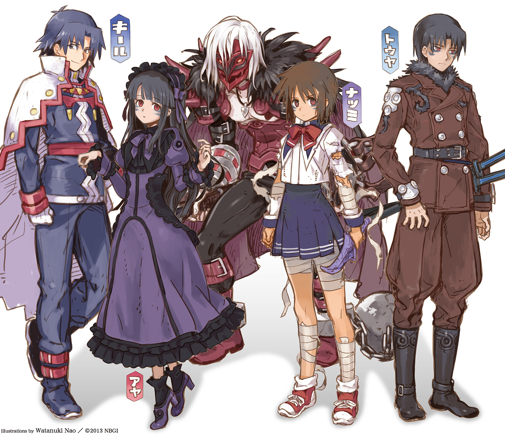

| サモンナイト U:X〈ユークロス〉 ―黄昏時の来訪者― | |
| 都月景 | |
この本は縦書きでレイアウトされています。
また、ご覧になる機種により、表示の差が認められることがあります。

この小説は、シミュレーションＲＰＧ『サモンナイト５』（発売・バンダイナムコゲームス）の「新生リィンバウム」が形成される以前の時代を舞台にしたオリジナルストーリーです。
この作品はフィクションです。
実在の人物・団体・事件などにはいっさい関係ありません。
断章 ～Forgotten Memories～
大地にひしめく悪魔たちの軍勢が、緑野を黒に染めて、ひたひたと迫り来る。
何度ともなく繰り返されてきた光景。
ある時はそれが機械兵士の大部隊となり、またある時は百鬼夜行を引き連れた荒ぶる鬼神となったとしても、彼の為すべきことは何ひとつとして変わりはしない。
界の意志たちより授けられたこの力で、理想郷の平穏を守り抜くこと。
「至源の時より生じて、悠久へと響き渡るこの声を聞け！」
若者は呼びかける。全身全霊の想いをこめて。
はるか遠き世界に住まう、異界の友たちに向かって。
（俺はただ、守りたいんだ......）
生まれ育った故郷と、そこに暮らす大切な人々を。
ただそれだけのために、彼は【誓約者】となることを受け入れたのだ。
異界の侵略者たちに対抗しうる、唯一無二の防人として。
「今ここに集え―――数多の竜の眷属たちよ!!」
真摯な彼の呼びかけは、並々ならぬ魔力によってたちまち異界の門を開いて、その想いに応えてくれた召喚獣たちを速やかに招来してのけた。
機界ロレイラル。鬼妖界シルターン。霊界サプレス。幻獣界メイトルパ。
まるで有り様の異なる四つの世界から、次々と姿を現したのは竜の名で呼ばれるものたち。電磁光壁に妖気の霞。極光のオーラに黒金色の鱗。その巨軀を覆うものはそれぞれ違ってはいても、いずれも盟友のために馳せ参じた仲間たちだ。
「どうか、みんなの力を貸して欲しい―――その威を示し、息吹を放て!!」
【誓約者】の願いに応えて、彼らは一斉にその力を解き放つ。
電光火花がほとばしり、烈風怒濤が大気を揺らす。
滅びの歌声が無慈悲に響き渡り、火焰地獄が大地を舐めつくした。
悪魔たちの軍勢など、ひとたまりもない。
これが【誓約者】―――界の意志たちに選ばれて、その代行者となった者の力。
圧倒的すぎた。
◆
「にゃはははっ。こりゃホントにあたしたちの出番なんてなさげだねえ」
暢気にそう言った竜神の娘を、召喚師ゼノビスは不快そうに睨みつけた。
「気を抜くなよ、メイメイ。全てを【誓約者】に任していては、いずれ限界が来る」
見よ、とゼノビスは指さした。
【誓約者】が相対するのとはまた別の方角の結界が突如として歪み、新たな悪魔たちが出現してくる。間髪入れずの波状攻撃は、明らかに計算ずくのものだった。
「敵も知恵をつけてくる。真正面から挑んで敵わぬのならば、搦め手で、とな！」
「ったくぅ......いっそ諦めちゃってくれたらいいのにっ！」
ぼやきながら、両者はそれぞれの役目を果たすべく走り出している。
メイメイは素早く【誓約者】のもとに駆け寄って、その護衛役を引き受ける。
お転婆姫と揶揄されながらも、ムキになって身につけてきた極辰星拳のその技は、殺到する悪魔らを情け無用にぶっ飛ばし、片っ端から再起不能にする威力だ。
「あのさ、ちょっとは手加減とかしてやったほうが......」
「どうせ【霊界】に戻ったらけろっと復活するんだから、ガンガンやっても無問題っ！」
控えめな【誓約者】の抗議を一蹴して、メイメイはここぞとばかりに暴れ回る。
「いっつも自分だけで片づけようとするんだから......たまにはあたしや、仲間を当てにしなさいよねっ！ バカ......っ」
心配をかけていたことにようやく気づいて、彼はごめんと小声で謝った。
そうこうしているうちに、ゼノビスによって指揮された味方の軍勢が動き出す。
人間、亜人、天使に龍神・鬼神。のみならず友好的な悪魔や機械たちに至るまで。
ありとあらゆる世界から、理想郷を守るために集結した仲間たちが、侵略者たちを今度こそ追い払うべく、獅子奮迅の働きを開始する。
「皆の者、力を惜しむな！ 我らの手でリィンバウムを真なる理想郷とするのだ！」
ゼノビスの飛ばす檄は、ここにいる全ての者にとっての悲願だった。
あらゆる世界のあらゆる者たちが、争うことなく共存してゆける理想の世界。
【始源のエルゴ】が夢描いたというその楽土を、なんとしてでも形にしてみせる。
そのためにはまず、滅びかけたこのリィンバウムを復興せねばならない。
執拗にやってくる侵略者たちを、こうして迎え撃たなくては。
（けど......いつになったら、終わりがくるんだろう？）
誰にも言えずにいるその問いかけを、【誓約者】は心中で繰り返す。
エルゴたちは言った。分け与えた力を用いて、迫り来る侵略者たちと戦えと。
けれど、何度問いかけても、彼らはけして教えてはくれないのだ。
この戦いの日々を終わらせるための方法を。
（それは自分たちで考えろ、ってことなんだろうな）
エルゴたちは、魂が成長してゆくことを何よりも尊ぶ。
自身を分かつことで世界を形作ったのも、いつか自分と対等に語り合うことができる存在が現れてくれるのを願ったからだと伝え聞く。
（さみしかったんだろうな、きっと......）
いくら優れた存在であっても、ずっと孤独のままではいられない。
異なる存在と相対し、つながりを築いてこそ、生命はその価値をもつのだから。
今の彼が、多くの仲間たちに助けられながら、生きる喜びを感じているように。
（かなうといいよな、いつか......きっと......）
自分がそこに辿りつけるとは、とても思えないけれども。
いつか、その場所に立てる者が現れてほしいと、心から彼は願う。
そのためにも、自分に今できることをしたい。
「【誓約者】よ、どうかご助力を！」
ゼノビスが指し示したその先に、ひときわ巨大な魔獣が姿を現していた。
無数の蛇頭と烏の翼を備えた、禍々しき腐肉の獣。
近づくもの全てを押し潰し、その体内に取りこみながら、どんどん肥大化してゆく。
「下がってくれ、みんな！ あいつには、僕が【剣】を使う！」
天に向かってかざしたその手へと、召喚されし荘厳なる剣。
【至源の剣】の名で呼ばれるそれは、ただひと振りで数多の剣の写し身を呼び寄せ、その圧倒的威力によって敵を微塵に斬り刻むという神秘の武器であった。
散り散りに引き裂かれて、肉の一片さえ残さずに駆逐されてゆく魔獣。
戦意をなくして逃げ去る悪魔たちの背に向けて、勝利の雄叫びが響き渡る。
【誓約者】、万歳！ 楽園よ永遠なれ！ ―――と。
◆
「本当によいのですか？」
「ああ、もう決めたんだ」
「貴方ひとりだけが、そこまで背負わなくたっていいじゃない!?」
「でも、これは僕にしかできないことなんだよ」
「今ここにいる我々の胸の内だけに、とどめておけというのですね」
「それがいいと思う。この真実は、あまりにも残酷すぎる。本当は君たちに話すのだって、僕は迷っていたんだから」
「なっ、バカぁ......っ！ 黙ってたら、絶対にぶん殴ってやってたんだからっ！」
「今回ばかりは全面的に彼女に同意ですね。一生、恨んでいたかもしれません」
「ははははは......ごめん......」
「......」「............」「..................」
「それじゃあ、終わらせにいこうか？」
「うん、新しく始めるために......」
「あえて、我らは理に背きましょう」
◆
「どいつもこいつも、好き勝手ばかり言いやがって！ 少しは自分たちでなんとかしようとは思わないのか!?」
「飲み過ぎよ、ゼノビス。貴方らしくないわ」
たしなめるメイメイの声も、強い酒精によって濁っていた。
正直、飲まずにはやっていられない気分だった。
「なにもかも【王】の力に頼れば、それだけでなんとかなると思っている！ 皆に請われて玉座についたあの御方が、理想郷を守るためにどれだけの苦労を重ねてきたのか......どれほどの想いを殺して耐え続けてきたのか......誰ひとりとして、顧みようともしないッ!!」
仕方ないわよ、とメイメイは悲しげに呟く。
「全ては秘したまま―――それが彼の願いなんだもの。そのせいでどれだけ苦しむことになっても構わないって、あの時そう誓ったんだから」
「だからといって、これでは......」
【王】を人柱として建てられた聖なる王国は、やがて砂上の楼閣のごとく崩れ去るであろう。わかっていながら、どうすることもできない。
二人はそれぞれ、そんな自分たちの不甲斐なさを呪うしかなかった。
やがて―――それは現実のものとなる。
【エルゴの王】の死によって、彼の【王国】は無残に分裂してゆくこととなる。
あらゆる世界のあらゆる者たちが、争うことなく共存してゆける理想の世界。
そんなものは絵空事でしかなく、けしてかなわぬものだと証明するように。
けれども彼は最後まで夢を信じ続け、それを次代へと託した。
どれだけ時間がかかっても、願い続けてさえいれば、きっとかなうと信じて。
◆
そして、彼女は今もまだ永劫の時を生き続けている。
死に逝く【王】とかわした最後の約束―――最も旧き【誓約】を守るべく、唯一無二の観測者として、必要以上の干渉を禁じられながら。
いくつもの出会いと別れを繰り返しながら、時の彼方で待ち続けているのだ。
【王】の願いがかなうその時を―――全てが、本当の終わりを迎える日を。
１ 無慈悲なる邂逅 ～Signal to Wake up～
夜気を鳴動させつつ、門より召喚されてきたのは無骨な機械の巨人だった。
以前、ミコトを執拗に敵視していた帝国軍の若き新兵が召喚した自律式の浮遊砲台とは、まるで比較にならない大きさと威圧感である。
人型のシルエットに、重装騎士の甲冑のごとく配置された朽葉色の装甲板。
だが、巨人の手に武器は握られていない。
代わりにその拳を強く固めると、連動するようにして両肩口から無骨に突き出していた電磁衝角が発光―――たちまち、まばゆい光球を形成してゆく。
（【痺電爆雷】!?）
かつてその背に受けた雷球の衝撃を、ミコトは戦慄とともに思い出す。たった一撃で、全身があっという間に痺れて、身動きできなくなってしまったではないか。
それでも一番殺傷能力が低い武器を使ったのだと、新兵はうそぶいていた。
巨人が今まさに形成しつつある光球は、明らかにそれとは桁違いの巨大さだ。あんなのをまともに喰らったら、身動きがとれなくなるどころの騒ぎでは絶対にすむまい。
なんとしても回避すべく、ミコトは木立の中に飛びこんだ。
光球が巨大であるぶん、木々にぶつかり、その威力を削ぐことができるだろうと考えて。
「逃がさないぞ！ 破砕しろ、ディアブロ―――【極旋光】ッ!!」
【誓約者】の命に応えて、機界の鉄人は重低音で咆吼した。
まっすぐに突き出された両腕が射線を固定すると、その十指から発される電磁波の渦が挟みこんだ光球を圧搾破砕。激しく渦巻く破壊エネルギーの奔流に変じさせて、ミコトめがけて一気に解き放ったのである。
軌道上の全てを光の螺旋流に巻きこみ、破砕しつつ光塵へと変える超絶の光学兵器。
無慈悲なその威力の前には、ミコトの浅知恵などなんの意味もなかった。
恐るべきは【誓約者】―――五つの界の意志より分かたれし力を授けられ、この異世界リィンバウムを守るという使命を託された勇者。
しかし、常ならざる異能の力を秘めているのは、彼の敵もまた同様であった。
「クゥオオオオオオオオオォォォォォォ......ンッ!!」
右掌の異形の瞳が光を放つと、それが亡魂たちを喚び起こし、ミコトを護る力となる。
響き渡る切々たる声は、幽きモノたちの嘆きと怒り。
様々な理由によって行き場を失ってしまった魂たちは、人造生命体であるミコトにすがりつくことで、その想いを伝えたいと願うのだろう。
彼の手に同化した【制錬石】―――【霊界のエルゴ】の力の断片に引き寄せられて。その秘めたる力がきっと自分を苦しみから救ってくれるであろうと信じて。
だからこそ、その希望たるミコトを必死に守ろうとするのだ。
（このぞっとする魔力の波動......間違いない、やっぱりあいつは【制錬者】だ......！）
亡魂の障壁と激突し、みるみる相殺されていく【極旋光】のありさまを眺めながら、ハヤトは改めて確信した。あの日―――為す術もなく自分を打ちのめした光とこの力は同質だ。
自分の内側に眠る【霊界】の意志の分身に酷似し、匹敵する力でありながら、どこか異質で不快なズレを感じさせる歪な魔力。
（こんなにも不吉で不快な力......間違えたりするものか、絶対に！）
あの時からずっと追い続けて、ようやく巡り会えたのだ。逃がすわけにはいかない。
限界出力寸前の機械巨人に、視線で帰還を促すと同時に、ハヤトは次なる【召喚術】を用いるべく、その虹色の剣先で虚空を薙いだ。
斜めに走った空間の亀裂から、するするとこちら側に這い出てきたのは、赤金色の甲羅を背負った奇怪な生物だった。虫のようで虫にあらず、蟹や海老のようでいて、それともまた異なる妖しの存在―――【鬼妖界】の妖怪・大朱切断虫だ。
界の意志たちより授かった力を根源とする【誓約者】の【召喚術】は、普通の召喚師たちの用いる術とは一線を画す。そのひとつが扱う属性の多様さだった。
常人ならば一系統、卓越した才能の持ち主であっても二系統の属性の【召喚術】を使いこなせる階梯に至るものは皆無に等しい。
だが、【誓約者】は、時と場合に応じて四つ全ての属性を使いこなす。
複雑な儀式や呪文を用いる必要はなく、サモナイト石と己の意志のみによってあらゆる系統の召喚獣を喚びだして友誼を結び、その力を借り受けることができるのだ。
「押さえこめ！」
甲殻の妖蟲は素早い動きで命令に従った。なんとか【極旋光】をしのぎきったミコトに休む間も与えず、その巨大な鋏のような顎で彼の胴を両断すべく襲いかかった。
「ぐうゥっ！」
間一髪。ミコトは両手に障壁を作り出すことで、その一撃を受け止めた。【制錬石】の影響で、身体能力が向上しているからこそできた芸当だ。
が、このままでは膠着状態でしかない。
妖蟲は恐るべき力でギチギチと鋏を軋らせ、なおも彼を両断しようとあがく。
必死にはねのける方法を模索するミコトの眼前で、さらに新たな異界の門が開かれた。
「な......!?」
そこから生じたのは、真っ黒で禍々しい瘴気の塊だった。
それが、時ならぬ雷雲のごとく、たちまち星空を覆いつくして、月の光さえ遮断してしまう。
血のように赤い雷光が明滅して、森全体をまるで異界のような趣に染めあげてゆく。
はるか遠くで、不気味に馬がいななく声が轟いた。
雷鳴のような馬蹄の音とともに、背筋が凍りつくような哄笑がぐんぐんと近づいてくる。
恐るべき存在が、黒い闇の向こうからまっしぐらに向かってくる。
それがなんであるかを、おぼろげにミコトは悟っていた。
肌で感じたおぞましさに、あの時の記憶がよみがえる。
（デュウが放った【魔眼】と同じ......悪魔の力だ......）
それは正しかった。
「薙ぎ払え！ 深闇の大公―――【混沌の騎士】よ!!」
白骨の軍馬に乗って疾駆してくるのは、やはり白骨の相貌をもつ騎士だった。
おぞましき呪いによるものなのか、それとも生来この姿であるのか。
眼窩の奥で憤怒の炎を燃やし、残酷な笑い声とともに真っ黒な瘴気を吐き出しながら、目の前の敵を蹂躙することだけを考えて、恐るべき勢いで突き進んでくる。
その両手に携えられた一対の無骨な剣は、獲物を狙う牙のごとく、容赦なくミコトの命を刈り取ってゆくであろう。いや、怒濤のごとく迫り来るあの馬蹄にかけられただけで、彼の身体など散り散りに引き裂かれてしまうに違いない。
（このままじゃ、絶対にまずい！）
だがしかし、妖蟲はなおもミコトの身体を食いちぎらんと締めあげる力を増してくる。
背後に迫るものから逃げようともせず、【誓約者】によって命じられた言葉に忠実に。
（まさか、最初から足止めを狙って......!?）
ミコトはようやくそれに気づき、そして後悔した。
同じ学校の先輩後輩であり、自分と同じくこの世界での異邦人であったとしても。
ハヤトと自分では、今までに積み重ねてきた日々の濃さがまるで違っているのだ。
次々と繰り出される【召喚術】や剣撃の凄まじさは、与えられた力をただ漫然と用いているだけのものではあるまい。どんなに優れた異能の力を与えられても、自在に使いこなすためには相応の修練や経験が必要となるのは、ミコト自身が今も痛烈に思い知らされていることなのだから。
楽しいことや嬉しいこと。悲しいことやつらいこと。たくさんの人との出会いと別れ。
きっとそうしたものを乗り越えて、彼はここにいるのだろう。
生きるため、願いをかなえるために戦って、それを可能とする力と知恵を手にしたのだ。
（今の俺とは、まるっきり逆じゃないか......かないっこないよ......）
今まで自分が立っていた場所の全てが虚構であると告げられ、奈落の底に落とされて。
泣いて逃げ出して、絶望しきっていたくせに、こわくて死ぬことも受け入れられない。
ああ、なんて自分は弱くて情けないのか。
（こっちの世界で今まで強く生きてきたハヤト先輩に、かなうはずなんかないよ）
向けられた敵意が理不尽だったことも、もはや今のミコトにはどうでもよかった。
楽になりたい―――振り払ったはずの死の誘惑が、発作的にまた膨れあがる。
地獄の使いが、終焉を告げるべくやって来る。
行動の自由を奪っていた妖蟲が【送還】によって消滅し、その両腕が解放されても。
今さら、もう間に合わない。
「これで終わりだ！ お前には、相応の報いを受けてもらうぞ!!」
複雑な感情の入り交じった声で、ハヤトは勝利を確信して叫んだ。
ぎゅっと目を閉じたミコトの身体が、横殴りに吹っ飛ばされる。
それを為したのは剣ではなく、馬蹄でもない。
爆発的にその光量を増した、ミコトの右掌の【制錬石】。
その幽き光に照らされて突如として姿を顕した、ありえざる存在によってだった。
◆
「そんなバカな!?」
ハヤトは驚愕する。
布石を打つことによって、確実に標的を捉えたと信じていた。
突撃させたツヴァイレライには、確かに手加減をするようにとは厳命した。
ディアブロにも、オオアカ切断虫にも、ぎりぎりのところで命だけは奪わぬように命じていた。
情けや容赦からではない―――殺してしまっては、その先の目的が果たせないからだ。
少なくとも、今はまだ問いたださねばならないことがある。
（俺はただ、取り戻したいだけ......奪われた大切なものを、取り戻したいだけなんだ！）
が、そんな彼の一念をこめて振るわれた【混沌の騎士】の一撃は、阻まれてしまった。
深紅の御旗を光の盾と変えて振りかざす、凛々しき姿で顕現した天使によって。
（戦天使......【霊界】の召喚術で、悪魔の天敵を喚びだして対抗したのか）
真っ向から激突した霊的生命体たちは、光と闇―――相反する互いの魔力をぶつけあう。
両者の力はほぼ拮抗しており、膠着状態を引き起こした。
目も眩むばかりの閃光と衝撃波の連続が、夜の森に時ならぬ嵐を巻き起こしていく。
とっさには次の手が思い浮かばず、手で顔を覆い、その余波に耐えるハヤト。
そして、爆心地を挟んだその反対側では。
「っぐぁ!?」
吹っ飛ばされたミコトが、背後の木に激突していた。
衝撃波によるものではない。
そうでなければ、痛みが頰だけにとどまるはずがない。
左手で頰を押さえながら、顔を上げたその時。
あり得ない光景に、ミコトは息を吞んだ。
（そんな......なんで......？ だって、貴方は......あっちの世界で......!?）
死んだはずだった。
無残に腹を抉られ、ビルの上から突き落とされて、ミコトの眼前で力尽きたはず。
けれども今、この頰を張り飛ばした痛みは、けして幻覚などではない。
召喚した【守護天使】に命じて、今も死神の魔の手からミコトの身を護ってくれている彼の姿は、その叱咤激励する眼差しは、まぎれもない現実であった。
「隊長さん......」
敵対しながらもわかり合えたのに、結局は名前すら教えてもらう暇もなかった帝国軍人。
涙ぐむミコトに向かって、彼は声なき声で語りかける。
ア・キ・ラ・メ・ル・ナ―――と。
マ・モ・ッ・テ・ヤ・ル―――と。
何故、と問いかけるよりも早く、彼はミコトに背を向ける。
人にあらざる亡魂の声で咆吼すると、己が存在を形作る魔力の全てを【守護天使】に託す。
そして天使は、消えてゆく盟友の魂を糧に、彼の最後の願いをかなえんと奮起した。
「......下がるんだ、【混沌の騎士】！ あとは任せろ!!」
【誓約者】としての直感が、ハヤトに警告の言葉を発させた。
力押しで防御の旗を押し破らんとしていた【混沌の騎士】は、急速に膨れあがった敵の魔力に危機を感じとると、馬首を巡らし、迅速にその場から離脱。瘴気の黒雲とともに再び出現した門の中へと飛びこんで、【霊界】の居城に帰還していった。
その間にも【守護天使】の御旗はその光量を増し、ハヤトとミコト、両者の間に立ちはだかる深紅の壁へと変じてゆく。まるで互いの接触と干渉を固く禁じ、拒むかのように。
「もうこれ以上、見逃すわけには......いかないんだよ！」
サモナイトソードを大地へと突き刺して、ハヤトは叫んだ。
交差させた両腕の拳に力をこめて強く念じると、大地の魔力を吸い上げたサモナイト石の刀身が鮮やかな緑色に染めあげられてゆく。その柄を再び力強く握りしめて引き抜くと、天空めがけて蓄積された魔力を一気にほとばしらせる。
「至源の時より生じて、悠久へと響き渡るこの声を聞け！」
それは、【誓約者】がその内なる力を意識して解き放つ時に発する言葉だ。
正式な理論に裏打ちされた召喚術の詠唱ではない。
至源の時より悠久の未来に向かって、今もなお響き渡り続けている、切なる願いと想いの言霊―――それを感じとることのできる魂の持ち主のみが、界の意志の代行者として、分かたれし強大な力を借り受けることができるのだ。
「【誓約者】たるハヤトが、汝の力を望む......【幻獣界】より出でて、その身に秘めたる猛き焰の息吹を、我が前にて解き放て......」
御旗の赤い光によって照らしだされた木立が、より深く濃い緑の魔力の照射によって、宵闇よりもなお昏い影の中へと沈んでゆく。
今までとは比べものにならぬほど巨大な異界の門が開いてゆく。そしてなお、おそろしいのは―――門の向こう側に見えている異形の存在の全貌が、それでもまだ確認できぬくらい巨大であるということ。
「剣竜の名で呼ばれし【守護者】よ......汝の試練を越えし者に、その力を貸してくれ!!」
次元の境を軋ませながら、その者は【誓約者】の懇請に応じた。
―――ギィヤオオオオオオオオオオオォォォォォォォォォン!!
どんな獣にも勝る猛々しき咆吼。灼熱色の鱗にびっしりと覆われた獰猛なる相貌。
首だけをこの世界に晒して、眼下を睥睨するのは恐ろしげな竜の威容。
「ぶち破れッ！ 【爆熱轟炎吼】ォぉーッ!!」
火山の爆発にも匹敵する熱量をもった火炎の吐息が、一直線に光の御旗に激突する。
（もっとだ......もっと、火線を集束させて......！）
そうでなくては、防御のみに特化したこの障壁を破ることはできまい。仮に破ることができなかったとしても、一点集中させた炎熱は確実に向こう側にいる者の体力を消耗させていくだろう。結果として、この邪魔な壁を維持できなくなるに違いない。
ギリギリまで仕掛けて、防御が破れた瞬間に近接攻撃によって捕獲する。
それがハヤトの目算だった。
事実、ミコトは灼熱地獄の中で膝をつき、そのまま焼け死ぬことさえも覚悟した。
光の壁が竜の吐息で燃えあがり、じわじわと溶け崩れていく。
苦悶する【守護天使】が片膝をついて、掲げていた勝利の旗印が無残に折れて落下する。
「今だ！」
勝ち鬨をあげる竜の咆吼に背を押されて、ハヤトは走り出していた。
びりびりと大気を鳴動させる魔力の波動が、今の攻防によって延焼してしまった森の木々を即座に鎮火させてゆく。同時に森のしじまに宿る精霊たちを呼び起こして、傷ついた自然を癒やすための活力を与えるのだった。
それらは年を経た力強き竜だからこそ可能な芸当であり、またその助けを欲したハヤトが、けして無分別に力を振るっているわけではないという証でもあった。
けれども、やはり、それでは―――目的を果たしきれなかった。
―――シギャアアアアアアァァッ!!
ハヤトの喚んだ巨竜のそれと比べれば、ずっと弱々しい叫び声。
けれどもそれもまた、まごうことなき竜の眷属の咆吼には違いなかった。
「飛竜だと!?」
力を失い消え去ってゆく【守護天使】の背後から、矢のように飛び立ったのは緑の翼竜。
ミコトが向こうの世界で無力化した、あの雷電の吐息を吐く飛竜だった。
「助けて......くれるのか......？」
必死にその首筋にしがみついているミコトに、小さく吠えて飛竜は同意した。
あの時、たやすく自分の命を奪うことができたにもかかわらず、あくまで傷つけずに捕らえようとした彼の気持ちを、飛竜はきちんと汲んでくれているのかもしれない。
「ありが......とう......」
極限状態から脱出できるという安堵からか、そのまま意識が朦朧としてゆくミコト。
閉じられたその瞼の裏に、照れたように笑う審問召喚師の姿が浮かんだのはきっと偶然ではない―――彼は、そう信じたいと思った。
◆
「逃がした、か......」
ぐんぐん遠ざかっていく飛竜の姿を見つめ、ハヤトは新たな召喚術を行使しようと上げていた手を、ため息とともにそのままゆっくりと下ろした。
「ダメだ、俺......やっぱ、熱くなりすぎてる......」
直情的な行動に走ってしまう悪い癖は、年齢を重ねてもなかなか直らない。
本当にまずい時はいつだって、側にいてくれる相棒がたしなめてくれていた。だから、ついついその優しさに甘えすぎていたのかもしれない。
今はもう、思い出すのもつらい記憶でしかないのだけれども。
「しっかりしろ、ハヤト！」
目を閉じ、頰をぴしゃんと叩いて、自分で自分に活を入れる。
（こんな想定外の場所で見つけられたこと自体が僥倖なんだ。深追いして、下手に仲間を呼び寄せられるほうが絶対に不利だ）
なにしろ、こちらはもうずっと単独で追跡行を続けているのだ。
昔のように、仲間の助けを借りるわけにはいかない。そう決めたのもハヤト自身だ。
「これ以上、巻きこんで余計な犠牲を出したくないもんな。仕方ないさ、うん」
弱気になる自分をなんとか奮い立たせて、ハヤトは顔を上げた。
「魔力の痕跡を辿るのなら明日になってからでもできる。今はそれより先に、あの人たちを手近な村まで連れて行ってあげなくちゃな」
怨敵の行方を追って森を彷徨う自分の前に突如現れ、救いを求めてきた者たち。
運よく彼らと出会えたおかげで、ハヤトはついに【制錬者】を見つけることができたのだ。
「帝国の兵士がどうしてこんなところにいたのか―――深く考えると、なーんかきな臭い気もするんだけど、まあ、怪我人だったしな......」
簡単な手当てをしてから、連れの女性に任せてきたのだが、やはり心配だ。
無口なあの小さな女の子は、こわくて泣いたりしていないだろうか。
「急いで戻ろう。うん」
来た道を引き返していくハヤトの横顔は、ミコトに向けていた異常なまでの敵意が噓のように消え去っていて、本来の明るくて優しい表情を取り戻していた。
ただし―――ひどく疲れ果ててはいたけれども。
◆
「そう......逃げていってしまったんですか......」
戻ってきたハヤトに事の次第を説明されて、彼女は安堵と不安の入り交じったような吐息を漏らした。膝を抱えたまま、無言でじっと焚き火の炎を見つめている少女の背中を、守るようにぎゅっと抱きしめながら。
「心配しなくてもいいんだよ、デュウちゃん」
身を屈め、少女にちゃんと目線を合わせて、ハヤトは微笑みかける。
「君たちにひどいことをしたあいつは、遠くに行っちゃったから。仮にまた戻ってきたとしても、絶対に俺がやっつけてやるから。だから、安心して眠ってもいいんだよ」
こくん、とうなずいてデュウは目を閉じる。ようやく安心できたのだろう。
ごろんと横になると、しばらくして、すやすやと寝息の音が聞こえはじめた。
「シャリマさんも、少し眠ったほうがいいですよ。火の番なら、俺がやりますから」
デュウの保護者だという妙齢の女性は、ハヤトのそんな申し出を謝絶した。
「ありがとう。だけど、貴方ひとりに何もかも任せてしまうことはさすがにできないわ。ただでさえ、出会ったばかりの貴方に助けてもらってばかりなのに」
すまなさそうに唇を嚙む彼女を、ハヤトは慌てて慰める。
貴女たちは巻きこまれた被害者なのだから、と。
「貴女たちも、そこにいる帝国軍の彼も、あの銀色の門を抜けて―――制錬者の放つ魔力に引きこまれたせいで、ひどい目にあったんでしょう？」
二人が向かい合っている焚き火から、少し離れた大木の根元。
そこに寝かされていたのは、【機界】の召喚術を用いる、あの帝国軍の新兵だった。
「俺がこの森の中にやって来たのも、尋常じゃない魔力を感じとったからだったんです。もうずっと捜し続けているヤツが、ここに来ているんじゃないかと思って......」
その道すがら、ハヤトは衰弱しきったこの新兵を発見したのだ。
ひどくおびえて、泣きじゃくって、意味不明の言葉をわめき散らしていた。
―――バケモノが来る！ みんなクワレル！ 魂をケズラレテ、ウバワレル!!
困惑しつつも、ハヤトは彼の言葉がただの出任せではないと確信していた。
常人とは異なる次元の力をもつ【誓約者】である彼は、確かに感じとっていたのだ。
おびえている彼の魂が、【霊界】由来の魔力によって、ひどく消耗させられていることを。
そしてその魔力の痕跡は、彼が追い続けている敵の用いたものと酷似していた。
（確かめに行かなくちゃ！ だけど......）
助けを求めている相手を放り出していくことはできない。
そんな逡巡から彼を解放してくれたのは、おそるおそるといった感じで、横合いの茂みの中から姿を現した子連れの女性。
帝国出身の召喚師だと名乗るシャリマと、その被保護者であるデュウだった。
状況説明のままならない新兵に代わって、彼女は事の経緯をハヤトに語ってくれたのだ。
帝国軍の異端召喚師審問部隊が、何者かに襲われて無残に壊滅させられたこと。
村の召喚医として事情聴取を受けていた自分とデュウがその場に居合わせたこと。
やったのはひとりの少年であり、得体の知れない【霊界】の召喚術を用いるということ。
宙に浮かんだ銀色の裂け目の中に吸いこまれて、気づいた時にはここにいたこと。
説明を聞き終えたハヤトは、戸惑う彼女たちに現状を教えた。
ここは帝国の領土ではなく、聖王国の辺境にある森の中だということ。
そして、自分はある人物を追って旅を続けており、もしかすると彼女のいう少年がそうなのかもしれないこと―――できれば、今すぐにでもそれを確かめに行きたいと思っている。それを済ませたら必ずここに戻って、彼女たちを近くの村まで送り届けるつもりだ。
だから、ここで待っていて欲しい―――と。
躊躇はしたものの、賢明な彼女は彼の申し出を受け入れてくれた。兵士の手当ても引き受けてくれたおかげで、ハヤトは急ぎ現場に向かうことができたのである。
「本当にシャリマさんがいてくれて助かりました。彼のことをみていてもらえなかったら、俺、また間に合わなくて、大事な手がかりをなくしてしまうところだったから......」
「私たちのほうこそ。貴方みたいなすごい召喚師に出会わなかったら、今頃もっとひどいことになってしまっていたはずよ。本当に感謝してるわ。ありがとう、ハヤトくん」
「ははは......」
照れくさげに頭を搔きながら、苦笑するハヤト。
「たいしたこと......してないですよ......できてないんだ、なんにも......」
消え入るようなその独白には、微かに自嘲の陰りがあった。
「ねえ、ハヤトくん......」
そんな彼をじっと見つめていたシャリマは、やがて、ためらい混じりに問いかけた。
「【制錬者】―――だっけ？ 君は、どうしてその人のことを捜し続けているの？」
ハヤトは答えない。それも当然であろう。
彼自身、ちゃんと気づいているのだ。
【制錬者】にまつわる事柄に対する時、自分が常軌を逸してしまうことを。
隠しきれない憎悪が、言動に滲みだしてしまうことを。
「ごめんなさい。見ず知らずの相手に、そう簡単に言えるようなことじゃないよね」
シャリマはすぐに謝罪した。けれど、言葉を紡ぐことはやめない。
「でもね......今の貴方は出会って間もない私でさえわかるくらいに、ひどく疲れきってる。重たいなにかをひとりで抱えこんで、そのせいで喘いでる。そうじゃなくて？」
「............」
「貴方みたいなすごい人の力になれるほど私の魔力は強くなんてないし、召喚師としての知識だって乏しい。だけど......そんな無力な私にだって、話を聞いてあげることぐらいはできると思うの！」
「シャリマさん......」
その思いがけぬ強い語気に気圧されて、顔を上げたハヤトは息を吞んだ。
眼鏡のレンズ越しに自分を見つめる彼女の瞳が、涙で濡れていたからだ。
「ごめんなさい......ちょっと、知り合いの男の子のことを思い出しちゃって......」
慌てて眼鏡を外して、指先で涙を拭うシャリマ。
「その子もね、すごく苦しんでいた―――知らないうちに大きな秘密を抱えさせられて。なのに、優しいから自分にそれを強いた人々のことを恨みきることもできなくて―――」
生きていることがつらいのだ、と命をふりしぼって泣き叫んでいたというのに......。
「結局、私はその子を助けてあげられなかった」
それを今も後悔しているのだ、とシャリマは歯嚙みする。
「あの時、私が彼に何ができたかなんて、今だってよくわからないけど、でもね......」
わからない理由はきっと、踏みこまなかったからだろう。
遠巻きに眺めているだけで、踏みこんで関わろうとしなかったから、何が起きていたかさえわからないままだ。それが後悔となって、今も心に靄がかかったようになっている。
「だから、ワガママを承知で私は貴方の話を聞きたい。聞かせてほしいと思ってる」
話すことで少しでも、彼の心が慰められるというのなら。
「教えて！ 貴方がどうして、そんなにも思いつめた顔で旅しているのかを―――」
しばし静かに、時だけが流れて。
「......なの、かもしれないですね」
先に口を開いたのは、ハヤトだった。
「正直、俺は―――疲れているのかもしれないです。助けてくれる仲間たちからあえて距離を置いて、ずっとひとりで旅を続けてきたから」
そして、少年は語りはじめる。
自分がこのリィンバウムとは違う世界から、事故によって召喚された存在であること。
何も知らず途方に暮れていた自分を、たくさんの優しい人たちが助けてくれたこと。
そんな彼らを守るために、知らず身につけた不思議な力を振るって、戦ってきたこと。
かけがえのない友と出会い、そして―――引き裂かれてしまうに至った経緯を。
２ 遠き追憶 ～Linker's Recollection～
紡績都市サイジェント。
聖王国の西端付近に位置するその街は、ふたつ名が示すとおり織物を主産業として急成長を遂げつつあった。そう、とある物騒な事件が起こるまでは―――。
【無色の乱】と後に呼称されることとなる、外道召喚師たちによる恐るべき陰謀。
それはこの地に【魔王】と称される強大無比な存在を召喚しようとするものであった。
目的は全世界に対する徹底的な粛清と破壊、及び、そこからの救済による支配権確立。
半ばまで召喚儀式は成功し、魔王によって甚大なる被害がこの世界にもたらされることは必至と思われた。
けれども、そうはならなかった。
【誓約者】―――かつて【エルゴの王】の名で呼ばれた伝説の英雄と同じく、分かたれし界の意志たちに認められたひとりの若者が、仲間たちと力を合わせて、その危機に立ち向かったからである。
不完全な形で召喚された魔王は撃退されて、ほころびかけていたこの世界を守る結界もまた、無事に再構築された。
世情を混乱させぬために、そしてなにより当人たっての希望によって、事件の顚末は曖昧にされたけれども、一連の出来事をきっかけにサイジェントの街はより注目されるようになり、以前とはまた違った形で発展を遂げていくこととなったのである。
◆
「綺麗だったなあ、ミモザさんの花嫁姿......」
ぼんやり夢見心地な表情で、フィズは何度も式の光景を思い出す。
サイジェントの貧民街で育ってきた少女にとって、聖王都の式場で行われたミモザたちの結婚式は、本当に素敵なものだったから。
公私にわたって何年も連れ添ってきた二人が、ようやく重い腰を上げて決断したことだ。
召喚師として共に由緒ある家名をもつ二人の結婚だけに、それぞれの親族や、共に師範として所属している召喚師の組織【蒼の派閥】の関係者など、いろいろと面倒な面々が勢揃いすることは間違いなかろう―――招待された者たちはみな、そう覚悟していた。
が、それは見事なまでに杞憂に終わった。
『そういう面倒くさげな方面のことに、貴方たちを巻きこむわけないじゃな～い♪ 主役は私とギブソンなんだから......私たちが心底楽しめない結婚式なんて、絶対にヤ！』
そんなワガママを通すために、新郎新婦は事前に関係各位のもとへわざわざ個別に出向いて、式は内々だけで行うからと挨拶して回ったのだという。
『互いの年齢も年齢だし―――って説明したら納得はしてもらえたけど、あとから彼女にこっぴどく叱られたよ。はははは......』
そう言って苦笑したギブソンの頰には、なるほど、うっすらと平手の跡が残っていた。
ともあれ、そんな配慮のもとで開かれた結婚式は、確かに『内々』だけのものであった。
様々な任務や事件を通じて関わりをもち、共に助け合ってきた仲間たち。
派閥の後輩を筆頭に、騎士や軍人、冒険者といった得体の知れぬ面々まで揃っているのは、ひとえに新郎新婦の顔の広さゆえか。さらには亜人といった【召喚獣】として差別されかれぬものたちまで、なんの気兼ねもなくこの宴に参加しているのだ。
そうした自由が許される場を設けたくて、二人は手間暇をかけてきたのだ。
たとえ初対面の相手であろうとも、祝ってくれる気持ちがあって、友人の友人であるのならば、まったくもって問題なし。むしろこの機会にそれぞれ新たな親交を深めてほしいというのが、新郎新婦の望みだった。よりよき多くの出会いが、仲間たちに幸せをもたらしてくれることを願って―――そう、自分たちがそうやって巡り会い、結ばれたように。
（それを承知したうえで、しれっと参加してるお偉い人たちがいるのも面白いよねえ）
フィズの親友であるミニスの母親、ファミィ・マーンがその筆頭であった。
新郎新婦の属する【蒼の派閥】とは対立関係にある【金の派閥】の議長職にありながら、ミモザちゃんたちとは飲み仲間だからという理由で、この宴を満喫しているのだ。
立場上それはまずくないのかとも思ったが、聞けば【蒼の派閥】の総帥とやらもちゃっかりと会場に来ているらしく、無礼講ということで話がついているとのことだ。
（ま、オトナの事情なんて、わかりたくもないんだけどさ......）
ただ、そんな母親をたしなめている親友のミニスが本当に元気そうで、楽しそうで。
フィズにとっては、そっちのほうが嬉しかった。
（ラミも、思ってたより元気そうだったし）
今はミモザの生家であるロランジュ家の養女となった彼女の実妹は、少し見ぬ間にぐっと大人びたようだった。泣いていないかと心配していた自分が、馬鹿馬鹿しく思えるくらいに。
けれども、二人っきりになった時には、やっぱり甘えん坊のままだった。
会いたかったと言われた時は嬉しくて泣きかけたけど、お姉ちゃんだから我慢した。
『いつでも遊びにいらっしゃい。召喚師の面倒なしきたりのせいで不愉快な思いをさせてしまったかもしれないけれど、私たちは貴女も自分の家の子供のつもりでいますからね』
たった一人の妹をとられてしまった気がして、以前はひねくれた気持ちでしか聞けなかったロランジュ家のお母さんの言葉にも、今度は素直にうなずくことができた。
『どうやら、もう吹っ切れたみたいだな？』
そう声をかけてくれたのは、旅先の帝国で出会った友達のひとり、ライだった。
妹のことで悩んでふてくされていた時期にも、いろいろと世話になったことがある。
『ま、おかげさまでね』
強がってみせたら笑われた。あれはきっと頰が赤くなってたせいに違いない。
あるいはアルバあたりが、男同士でよからぬことを吹きこんだ可能性も否定できない。自由騎士を目指す彼女の幼馴染みは、怪我の療養のためにライの宿屋で世話になったことがあり、今でも任務の合間に顔を見せに来ているらしい。
『なーに油売ってんのよ、総料理長！ リプレさんたちに言いつけちゃうわよぉ～？』
形勢不利になりかけたフィズを救ったのは、ライの幼馴染みであるリシェルだった。
彼女もまたミニスと同じ【金の派閥】の召喚師であり、二人は名家の跡継ぎ同士、紆余曲折の末に意気投合したのだという。旅先で知り合った時から、彼女の物怖じしない性格を好ましく思っていたフィズは、さもあらんとうなずいたものだ。フィズにとってもミニスにとっても、リシェルは欠かせぬ新たな友となったわけである。
『ちょ、リシェル!? 俺はただ、会場の様子を見て次の料理を出す段取りを......』
『だったら、さっさと厨房に戻る！ フィズとは、あたしがお喋りしとくから......ね♪』
ちぇっと舌打ちして、厨房に帰っていくライ。しっしっと手で追い払うジェスチャーをしてから、リシェルはフィズに満面の笑顔を向けた。
『ミニスからいろいろと聞かせてもらってるよぉ？ にししし、フィズってば、すっかり街のコワモテさんたちの人気者になってるらしいじゃな～い？』
『な、なりゆきだって!? 女の子にヒドイことしてた連中を、すこーしとっちめただけだし！ そもそもアカネやローカスが助けてくれなかったら、どうなってたことか......』
【鬼妖界】からやって来た女忍者と、今ではすっかり裏社会の顔役に収まった元革命家。
彼らが端々で目をくばっていてくれたからこそ、自分がいきがっていられたことを、今の彼女はちゃんと理解しているし、恩義にも感じている。
とはいえリシェルの言うとおり、その結果として、フィズの名がサイジェントの裏社会で知られるようになってしまったことに違いはない。威勢のいい小娘がいるぞと、古参の顔役たちから微笑ましく見守られているといったありさまなのだ。
不良少女まっしぐらと言えなくもない。
『まあ、モーリンみたいなものじゃない。下町の用心棒って肩書きがさ、裏町のお転婆娘になっちゃったみたいな？』
からかうようにして二人の会話に割って入ってきたのは、ミニスだった。
母親についてあちこち歩き回っていたのか、ちょっぴりお疲れ気味である。
『もお......ミニスまでっ!?』
『おひさしー、ミニス。ママのお目付役はもういいの？』
フィズの抗議には耳を貸さず、リシェルの問いかけにミニスは手をひらひらと振る。
『ケルマとパッフェルに丸投げしてきたわ。だって、お母さまってば節操ないんだもの』
ケルマは【金の派閥】の召喚師。パッフェルは【蒼の派閥】の総帥エクスの密偵だ。
前者は正式な議長の秘書官なので納得できるのだが、属する組織も違う後者がどうして世話役をしているのかは、あいかわらず謎のままである。
『偉い人同士の連絡役みたいなものだからね。お母さまも当たり前のように連れ歩いていたりしてるし。慣れちゃったかも』
『あははは......』
ひきつった笑いを浮かべる親友たちに、げっそり顔でミニスはぼやいた。
『マルルゥたちが暮らしてるあの島と、また新規で事業提携ができないかしらーって唐突に言い出しちゃってさあ......』
『あちゃあ......パパも顔負けの商魂だわね』
我がことのように、リシェルが頭を抱える。
【金の派閥】は召喚術を利用した営利団体でもあるから、見上げた心がけといえなくもないが、そういう親をもつ娘たちとしては勘弁してほしいこともいろいろとあるらしい。
『今はレックス先生やミスミさまたちと一緒に、難しい話を始めちゃってるわ』
『だとしたら......きっと、新しい【学校】の設立に関することかもしれないわね』
そう言ってさらに話の輪に加わってきたのは、他の三人よりひと回りは年上と思われる、赤い服を着た令嬢だった。
彼女の名前はベルフラウ。件の島―――【忘れられた島】と俗称で呼ばれている南海の孤島の住人のひとりだ。島の学校で子供たちに勉強を教えている若手教師でもある。
『ご無沙汰しています、ベルフラウさん』
『ベルでいいって言ったでしょ、フィズ。敬語を使われちゃうと、なんだか年長者～って念押しされてる気がして、軽くへこんじゃうんだから......よろしくて？』
『あ、はい......じゃなくて、うんっ！』
よろしい、と令嬢は微笑んだ。
『しかし、ミモザったら―――本当に知り合い全部まとめて召喚しちゃったみたいねぇ』
改めて会場を見回しながら、ミニスが呆れ半分、感心半分でそう呟く。
そうねとベルフラウはうなずき、リシェルは苦笑いして言った。
『それ以上に、この場にいる面々の素性のとんでもなさ加減のほうが、あたしにとっては絶句するしかないってカンジだわ』
そうだね、とフィズもうなずく。
『表立っては知られていないけれど、この世界をどうにかしちゃいかねないくらいの力をもつ勇者たちが、ずら～っと勢揃いしているんだもんね......』
【無色の乱】による魔王降臨を阻止し、この世界を護る結界を張り直した【誓約者】。
虚言と奸計の大悪魔たちが引き起こした【傀儡戦争】の終結に尽力した【超律者】。
禁断の実験の果てに生じた【狂った核識】の暴走を人知れず食い止めた【抜剣者】。
【堕竜】を鎮めることによって、人間と召喚獣の全面戦争を未然に防いだ【越響者】。
『すごいよね......。誰もがみんな最初から意図して近づいたわけじゃないのに、ごく自然に知り合って、どんどんつながっていって―――こうやって今じゃ仲良しになってる』
フィズの言葉に、ミニスが無言でうなずいた。
その手が握りしめる古びたリボンは、そうした奇跡があったことを証明するお守り。
フィズもまた、同じ宝物を今も大事に身につけている。
『それこそが星の巡りの導きなんだって、メイメイさんは言っていたわ』
天窓を見上げて、ベルフラウが呟いた。
空はいつの間にか藍色に染まりはじめ、星々が煌めきとともにその存在を現しつつある。
酔いどれの占い師は、それらの輝きに人の運命を観るのだという。
『理屈はなんだっていいわよ。あたしにとっちゃ、ここにいるみんなと仲良くなれたってことだけがすっごく大事で嬉しい！』
あけすけで本音なリシェルの言葉に、娘たちは揃って顔をほころばせた。
（リシェルの言うとおりだよね。理屈なんて、どうだっていいんだ）
今ここにこうして、たくさんの人たちが集っている。
あらゆる場所の、あらゆる世界の友人たちが、友を祝福するために。
ひとつの場所に集って、同じ喜びを嚙みしめている。
なんて素敵なことだろう―――と、フィズは思った。
『お姉ちゃん、みんな......お外に行こう。誓いの儀式......そろそろ、始まるから！』
新婦の世話役として真面目に頑張っていたラミが、彼女たちのところにやってくる。
誓いの言葉を交わし、祝福の鐘を鳴らして、今から永久に結ばれる二人のことを、思いっきり冷やかして、祝ってあげなくては。
『わかったよ、ラミ。さあて―――みんなで一緒にお祝いしに行っちゃおっか！』
少女たちは元気よく、おーっと唱和して歩き出した。
◆
「まーたミモザたちの式のこと思い出してニヤケてやがるな、フィズ」
「......っ!? が、ガゼル......っ!?」
意地悪な笑みを浮かべるガゼルに気づいて、フィズは真っ赤になった。
いったい、いつから見られていたのか。気にはなるが、聞きたくない気もする。
「お、乙女の夢をバカにしないでよねっ」
「開けっぴろげな食堂で妄想垂れ流してんじゃねーよ。自分の部屋でやれって」
「だって―――ひとりだとさ、やっぱ広すぎるんだもん。あの部屋」
テーブルに伏せたフィズは、口を尖らせてそう言った。
そうだな、と同意したガゼルの声は、少しだけ優しかった。
「あれだけのお祭り騒ぎの後だからな。俺だって、なんとなーくものさびしい気分だよ」
フィズは無言で、そんなガゼルの顔をじっと見つめた。
「一時は居候であふれてたこの養護院も、今じゃすっかり静かなもんだ」
最初期からここで暮らしている面々も、今では半分の人数となっている。この場にいるガゼルとフィズに加えて、あいも変わらず家事全般を取り仕切っているリプレだ。
自由騎士団に参加するという夢を追って、レイドとアルバは聖王都に旅立った。似合いの伴侶を得たエドスも独り立ちし、生まれたばかりの子供と今は三人で暮らしている。
フィズの妹であるラミも、召喚師となるべくロランジュ家の養女となった。
そしてまた、ここで翼をひと時休めていた者たちもみな、ごく自然に旅立っていった。
ある者は夢を追いかけて、ある者は新たな使命を果たすために。
二度と会えなくなるわけではない。
ふらりとまた現れて、ここで過ごした日々を懐かしむことだってあるだろう。
けれど、それはきっともっと先の話だ。
今はまだそれぞれが、望んだことを思いっきりやる時なのだとフィズは思う。
（そうじゃなきゃ、次に再会した時に心から喜ぶことができなくなっちゃうもんね）
それが彼女なりに導き出した、今の答えだった。
「だからって、お仕事さぼってちゃダメだよ。ガゼルぅ？」
「うっせぇよ。ったく......」
以前ならギスギスした空気になっていたに違いないこんなやりとりも、今はさほど深刻なものではなくなっている。それはひとえに、この街の労働環境が変化してきているからだ。
直接のきっかけは、【無色の乱】の前後に起きた市民たちの暴動によるものだった。
ろくに仕事ももらえない貧民階層の若者たちが【無色の派閥】に引きこまれる形で領主の城を乗っ取った―――オプテュスと呼ばれる不良集団を率いていた青年・バノッサにまつわるこの騒動は、為政者たちに強烈な教訓を残した。
不満を力で押さえつけてばかりいては、それが爆発した時に、取り返しのつかぬ事態を引き起こしかねないと。人民の支持が得られなくなってしまっては、上に立つ者たちの地位も簡単に失われてしまうのだということを。
結果、サイジェントの領主の態度は少しずつ軟化していった。
工業化の推進ばかりを考えていたことを見直し、都市環境の整備も行いはじめた。
使い捨てにするのではなく、長い目で労働力を育成していくようになった。
無いところから強引に税をしぼりとるのではなく、街全体の富を増やしていくことで、誰もが豊かになっていけるようにと腐心するようになっていったのである。
「斡旋所ができたおかげで、俺みたいなのでも、行けばちゃんと仕事にゃありつける」
生まれも定かではない境遇のせいで正規の仕事につけず、やむなくコソ泥や恐喝といった悪事に手を染めていた彼のような者たちにも、正当に生きる糧を得る機会が与えられたのだ。
日雇い系の仕事ばかりを選んでいるのは、単にガゼル個人の気質の問題だ。
それでも盗みをしなくなっただけマシだと、彼の幼馴染みであるリプレはほっと胸をなで下ろしている。そういう彼女のほうも、以前のようにただこの養護院の家事をとりしきっているだけではなくなっていた。もはや名人級となった家事のスキルを活かして、定期的に料理や裁縫の教室を開いたりしているのである。
仕事を斡旋したのはマーン三兄弟の末っ子カムランだ。
顧問召喚師かつ議員として、さらなる街の発展に尽くしている長兄イムランと、その補佐兼護衛役として強面と辣腕を振るっている次兄キムラン。そんな彼らとはまたかなり違った形で、カムランはその才能を発揮したのである。
（まさか、あいつが教育者として目覚めちまうとはなあ......）
はぐれ召喚獣の移住先として再生することとなったレルムの開拓村で、彼は学校の運営管理という天職に巡り会い、大いにその才能を開花させた。もともと買いとった召喚獣たちに様々な教育を施し、一人前の淑女として磨き上げることを夢見ていたような人物だったのだ。形は違えども、無垢な子供たちに教養を授けて育て上げていくことは、純粋にカムランの喜びとなったのである。
家事の達人であるリプレを家庭科の先生として招聘したいと、熱心に口説いてきたこともあった。もっとも―――彼女はそれを断り続けて、今もここに留まっているのだが。
面と向かって聞かなくても、ガゼルにはその理由がわかっている。
（養護院が、全ての始まりだからだよな）
捨てられた幼い二人が初めて出会った場所であり、生きていくために必死になった家であり、たくさんの仲間たちが集まって、たくさんの思い出を作ってくれた場所でもある。
かけがえのない場所だからこそ、大事に、大事に守っていかなくてはならない。
今は遠くでがんばっている仲間たちをいつでも迎えられるように。
そして、もうひとつ―――。
「今のあいつらにとっちゃ、ここが唯一の安らげる居場所だからな......」
無意識に口をついて出たガゼルの呟きを、あえてフィズは聞き流すことにした。
だって、それは彼女にとっても当たり前のことだったから。
（あたしたちのことを、大切なこのお家を、命がけで守ってくれた人たちだもんね......）
新堂勇人とキール・セルボルト。
それぞれ全く違う世界から、彼女たちのところにやって来た二人は、彼女たちにとってかけがえのない仲間であり、家族同然でもあるのだから。
「そういや、あいつらはどっか出かけてんのか？」
「二人して買い出しに行ってるはずだよ。小麦粉がそろそろなくなりそうだって、お仕事行く前にリプレママがおつかいを頼んでたから」
「げ、そういや俺も頼まれてたっけ......ま、忘れちまってたし仕方ねーよなあ、うん」
養う人数が減った今でも、リプレの倹約ぶりは相変わらずだ。まとめ買いはお得の基本だからと買う時には徹底して買いこむ。みんなが毎日食べる手作りパンの材料ともなればなおさらのこと。空いている男手は総動員となるわけだが―――笑ってごまかすことで、うっかり過失をうやむやにしようとするガゼルであった。
が、お見通しのフィズには通じない。
「こういう時にガゼルはどこ行ったのよーって、リプレママ怒ってたぞぉ？」
フィズの言葉に不穏な空気を感じとって、おもむろに椅子から立ち上がるガゼル。
働かざる者食うべからず―――すなわち、このままでは晩ご飯が危ない!?
「......東の製粉所だよな？ ちょっくら行って、俺も荷物持ち手伝ってくるわ！」
「はいはい、いってらっしゃーい♪」
◆
「ふぅ......」
てんこ盛りになった買い物籠を下ろして、キールは大きく息をついた。
ここは東の城壁の側にある製粉所だ。馬車止めとして設けられた低い石垣に腰を下ろす。
（ついでとはいえ、ずいぶんといっぱい買いこむことになっちゃったなあ）
細々とした日用品の数々や、根菜や瓶詰めの調味料といった日持ちする食材など。
力仕事が不得手な彼にとってはこの時点で物量的に音を上げたい気分なのだが、本命の小麦粉の大袋ふたつがまだ控えている。注文を受けてから挽くのが信条という店なので、こうして待ち時間を小休止にあてているという次第だった。
「ほら、キール。しっかりしろってば」
へばり気味な彼とは正反対に、同行者であるハヤトは元気そうだった。
「待ってる間に食べなって、おばちゃんがダリマの実をくれたんだ。酸っぱいそうだから、きっと元気でると思うぜ」
「ああ、それはありがたいな」
差し出された掌大の果実を受けとり、キールは顔をほころばせた。橙色の厚い皮を剝いてから、いくつも詰まった袋状のひと房を口に含み、薄皮ごと嚙みしめる。
「......っぱッ!?」
「だから言ったろ？ 酸っぱいぞ、って......っぱァっ!?」
柑橘類ならではの爽やかで強烈な酸味に、二人は目を白黒させた。
「く......っ、はははは......っ」
口の中のものを急いで吞みこんでから、たまらず、キールは笑い出した。
「人のこと言えないじゃないか、ハヤトだって」
「油断したんだよ。つい、あっちの世界の蜜柑と同じ感覚で食べちまった」
「そうだね。君のいた世界の蜜柑は、リィンバウムのものより小さめでとても甘かった」
懐かしげに思い出して、キールは目を細めた。
キール・セルボルト―――【無色の派閥】の名家セルボルト家の跡継ぎとして、大勢の候補者たちの中から選ばれた【魔王召喚】儀式の実行責任者。
（実際のところ、それは儀式の生け贄となるってことだったんだけどね......）
降臨する魔王の器として自身の肉体を捧げる―――あまりにも過酷な使命を強いられたキールの心は、無意識の奥底で救いを求めて悲鳴をあげていた。
その結果、最初の儀式は失敗に終わる。
荒野に築かれた儀式の祭壇は膨大な魔力の暴発によって消し飛び、ただ一人生き残ってしまったキールは、その事故で偶然に召喚されてきてしまった異世界の少年を見つけた。
【名も無き世界】の男子高校生・新堂勇人―――召喚事故の影響によってなのか、彼は既存の召喚術とは似て非なる不思議な能力を体得していた。
以来、キールは自らハヤトに接近し、彼を監視しつつその処分を検討することになる。
己のおかした失態を挽回するために。あるいは再び必ず行われるであろう儀式と、その先にある自身の破滅から目を逸らし、少しでも長く逃避するために。
―――約束するよ。僕が必ず、君を元の世界に帰してみせるから！
最初はうわべだけのものにすぎなかったその約束は、しかし、ハヤトやその仲間たちと共に日々を過ごすうちに、キールの中で次第に偽りなき誓いへと変わっていった。
隠していた秘密の全てを明らかにされて、罪人として裁かれる覚悟を決めた時。
ハヤトはそれでも彼を信じて、最後まで味方してくれた。
そして、キールは決意したのだ。
父やセルボルトの家を敵に回したとしても、かけがえのない友人となってくれたハヤトの力になろうと。彼と自分を優しく受け入れてくれた仲間たちを、破滅から守ろうと。
そんな彼の決断は、結果として【無色の乱】の被害を最小限に食い止めることにつながることとなる。不完全ながらも降臨した魔王との最終決戦において奮戦した彼は、その功によって罪を赦された。以後も【誓約者】の協力者となり、その知識と力を私利私欲のために用いてはならぬとの厳命つきではあったが。
しかし、そんなことはキールにとってなんの苦痛でもなかった。
無意識に求めていた助けを呼ぶ声に応じ、交わした約束を果たすために全力を尽くしてくれたかけがえのない親友。そんな彼と共に新たな日々を生きていくことこそが、【無色の派閥】というしがらみから解き放たれた彼が、心から望んだことであったのだから。
【無色の派閥】の儀式によって召喚された魔王が【誓約者】と仲間たちに撃退された後。ほころびてしまった結界を修復するその前に、ハヤトは自分がいた本来の世界に別れを告げに行くことを望んだ。
【誓約者】としてこの異世界で暮らしていくことに迷いはないが、これっきり家族に何も説明しないまま別れてしまうのはさすがに心苦しいと。
が、異界への門を召喚としてではなく、移動手段として用いることは危険で無謀の極みといえる難事だった。必要となる膨大な魔力は【誓約者】として確保できても、それを用いて目的地までの道をつなぐには、相応の知識と制御技術が要った。
その役目を自ら買って出たのが、他ならぬキールであった。
一歩間違えば永遠に界の狭間で迷い子となりかねない危険にひるむことなく、彼は無事に役目を果たした。ハヤトの暮らしていた那岐宮市を共に訪問し、彼の両親や後輩だという男子生徒とも多くの言葉を交わした。
エルゴに護られし五つの世界とは根本的に異なりながら、奇妙に類似点を備えている未知なる世界。その穏やかな繁栄ぶりを前にしたキールは、ハヤトはこの世界に留まるべきではないかと真剣に考えた。それこそが彼にとっての幸せではないか、と。
けれど、ハヤトは自分の意志で進むべき道を選んだ。
新たな【誓約者】として、五つのエルゴたちから力を授けられた時から―――否、わけもわからず異世界に飛ばされて来た自分が、不思議な力を身につけたと知ったあの時から。
すでに、彼は自覚していたのだ。与えられた力には必ず、相応の責任が伴うことを。
そしてそれは望むと望まざるとにかかわらず、その人の生涯に必ずついて回る。
異世界で多くのさまざまな仲間たちと出会い、彼らと共に日々悩みながらも必死に生きてゆくことによって、ハヤトはそれをより強く実感し、学んだ。
だからこそ、その決意を自分の言葉で両親に伝えるべく、一時帰還を望んだのだから。
やりたいことをがんばりなさいと両親に背中を押されて、ハヤトはリィンバウムに戻った。以後は修復した結界を維持しつつ、この世界に過剰な干渉を与えんとする異世界の存在たちを監視し、いざ事あらばひそやかにそれを掣肘するという日々を送っている。
そんな彼を助けるのは、界の意志によって使命を与えられた【エルゴの守護者】たち。
鬼道の巫女たるカイナ。機械兵士エスガルドと、彼をサポートする少年召喚師エルジン。
異変を速やかに察知すべく世界を旅して回る、彼女らの要請によって。
あるいは【派閥】や【騎士団】、裏社会といった様々な場所で活躍する仲間たちがもたらしてくれる情報によって。
二代目【誓約者】であり、サイジェントの勇者たるハヤトは、楽園に迫りくる異世界からの魔の手を、人知れずはらい続けているのだった。
無論、そんな彼の傍らには、常に相棒たるキールが控えていることは言うまでもない。
◆
「ありがたいことに、最近はそうそう出番もなかったりするんだけどさ」
製粉所からの帰り道。
小麦粉の大袋を左右の肩に担いだハヤトは、照れくさげに笑いながらそう言った。
ひとつはキールが引き受けようとしたのだが、危なっかしいと却下されて今に至る。
体力的には劣っていると自覚していても、キールとしては少々情けない気持ちだ。
とはいえ、代わりに買い物籠をふたつ引き受けた現状でも息が上がってしまっているのだから、強がりなんて言っていられるような状態ではない。
休み休みゆっくり行こう、とハヤトが提案して。
二人は人通りの多い商店街ではなく、城壁沿いに家へと向かっているのだった。
遠回りにはなってしまうが、急ぐ用事でもなし、日暮れまでに帰れば問題ない。
「そういつも危機が訪れてばっかりじゃ、それこそ根本的に大問題だと思うよ」
額に浮いた汗をハンカチで拭いながら、キールは嘆息した。
「あの【傀儡戦争】が起こった時にも、僕は本気でどうしようかと思ったんだからな」
奸計と虚言の悪魔王メルギトスの策略によって引き起こされた、旧王国による聖王国への侵略戦争。旧王国は崖城都市デグレアを、聖王国は三砦都市トライドラを戦火によって失ったが、それに乗じて遂行されようとした恐るべき大悪魔の企みは、【超律者】を名乗る勇者とその仲間たちの奮闘によって潰えたのだという。
ひょんなことからその戦いに関わることとなった、先ほどのカイナたちからの情報だ。
「ほっとしてるよ。悪魔たちが本格的に活動しだした原因が、僕たちの行った二度にわたる【魔王召喚】儀式の影響で、【霊界】から魔力を補充したせいだと知ってからはなおさらね」
「キール......」
足を止め、気遣うような視線を向ける親友に、キールは大丈夫だとうなずいてみせた。
確かにそれを気に病んだことはあったが、今はもうちゃんと受け入れている。
「この街に侵攻してきた悪魔たちは君や騎士団のみんなが退治してくれた。帝国も国境線で敵の進撃を食い止めたそうだし、諸悪の根源だった悪魔王はギブソンさんたちの後輩と仲間たちがきっちり退治してくれた」
【調律者】クレスメント―――かつてメルギトスと禁忌の契約を交わしたという召喚師の一族―――その末裔であった少年が、先祖の犯した罪の因果を乗り越えて、自らの手で大悪魔メルギトスを葬り去った。それこそが【傀儡戦争】の本当の結末であった。
「本当にありがたいって感謝してるし、だからこそ彼らに恥じないように、胸を張って生きていかなくちゃって思ってるよ」
それでいいんだよな、と視線で問いかけるキール。
ハヤトは微笑んで、うなずいてみせた。
「どれだけ力を持っていたってさ、人は人である以上、万能じゃないんだって俺は思う。失敗ひとつしないで、未来に起こることまで先回りして、完璧な答えを出せる存在なんて、存在するはずないんだ」
界の意志でさえ、あるいは彼の世界でいうところの神でさえ、そんな芸当は不可能だと、ハヤトは思っている。
「でもさ。だからこそ俺たちは助け合うって方法を選ぶことができるんだと思うんだ。ひとりだけじゃ決められないことやできないことがあるって知っているから、お互いに助け合ったりしてさ、限界以上のことを可能にしていくことができるんだって思う」
「うん、僕もそう思うよ」
この世界のことを案じているのは、自分たちだけではない。
【誓約者】、【超律者】、【抜剣者】、【越響者】。
ミモザとギブソンの結婚式に呼ばれたことによって、初めて一堂に会した勇者たちは、その想いを確かなものとした。
「本当に、ありがたいな」
嚙みしめるように、キールは繰り返す。
これから先、この世界に起きる変事に何度立ち向かわねばならなくなったとしても。
彼らは、けして一人っきりにはならない。
大切なものを守るために、迷わず立ち上がってくれるであろう仲間たちがいる。
（ひとりぼっちになるってことは、自分自身の光さえ消し去ってしまうってことだから）
過去の自分を省みて、だからこそキールはより強くそう思うのだ。
「......うおおぉーい！ オマエら、なんでこんなメンドくせえ回り道してんだーっ!?」
聞き覚えのある怒鳴り声が、遠くから二人の背をどやしつけてきた。ガゼルだ。
「おかげで結局、製粉所までまるっと行くハメになっちまったじゃねーか。ったく......」
「手伝うって約束しといて、朝からふらっといなくなってたガゼルが悪い」
「だからこうして、慌てて駆けつけてきたんだろうが」
「リプレにバレたら夕食、パン抜きにされるから、だろ？」
「うぐぅ......」
軽口を叩きあいながらも、ごく自然に袋のひとつはガゼルが背負うことになり、三人は揃って我が家へと帰る道を歩いてゆくのだった。
◆
「堕ちたものだな」
暗がりの中。水晶球に映し出された遠隔画像を見つめて。
彼は、そう断じた。
魔力の照り返しによって、ぼんやりと浮かびあがった輪郭はすらりとした若者であり、その言葉には隠しきれぬ苛烈さがこめられている。
「そんなの、とっくの前からわかってたことじゃんか！」
唇を尖らせて応じたのは、いかにも少女めいた声だ。
椅子に座ったまま、投げ出した足をせわしなくバタバタさせているようだ。
「自覚あるんだったら、こんなになるまでほっぽっといたりしないって。のうのうと生きてる時点で、そりゃもう万死に値するってーの！ でしょ？」
そんな彼女の問いかけに応えるように、異なる響きのため息がふたつ。
呆れた様子のそれは先ほどの青年のものだったが。
やりきれなさを強く匂わせたもうひとつは、また別の娘のものであった。
「事情が......あるのかもしれません......」
ためらいつつも、彼女はそう口にした。
たちまち、もう一人の少女がそれに嚙みついてくる。
「あんた、なに言ってんの!? 事情があるっていうんだったらさ、ちゃんとその事情とやらを説明するのが当然だよね？ なんで、今まで、それがさっぱりだってのさっ!?」
「それは......なにがしか、意図するところがあって......」
「あーっ、話になんないっ!!」
がたんと椅子を蹴倒して、責める少女が癇癪を起こした。
「もう結論は出てるんだからさぁ、とっとと始めちゃおうよーっ！」
「待ってください！」
必死になって、弁護する少女が再考を訴える。
長い髪を揺らし、懸命に頭を下げて、上座に位置する二人に頼む。
「もう一度、もう一度だけ確かめさせてください！ お願い......しますから......っ」
「......いいだろう」
フン、と鼻を鳴らしてから、若者が同意した。
「えーっ!?」
不満ありありの声をあげて、少女が若者を睨んだ。
「肉親の情というものだ。我らがこうして行動を起こしたのもまた同じ理由だからな」
ないがしろにはできまい、と彼はとりなす。
「兄さまがそう言うなら、いいけど......」
「いい子だ」
手招かれて、少女は喜々として兄である青年のもとに近づいた。
頭を優しく撫でられて、うっとりと目を細める。
それを見つめている、もう一人の娘の肩は震えていた。
「説得の猶予は夜明けまでだ。以降は問答無用で目的を果たす。それと―――」
人形は置いていけ、と彼は命じた。
「わかりました......お聞き入れくださり、ありがとうございます」
彼女はうなだれたまま礼を言うと、椅子から立ち上がり、部屋の出口へと向かう。
廃屋として何年も放置され、荒れ放題になった板壁と蝶番の壊れた扉。
その横に立って声もなく控えていた影のひとつが、追従しようと身を動かした。
「いいんです。ひとりで行きますから、あなたはここで待っていてください」
請われるようにして発された彼女の命令に、影はあくまで従順であった。
◆
おつかいに励んだ成果は、その日の夕食で早速報われることになった。
「遅くなっちゃってごめんね。さあ、みんなで食べましょう」
「おぉっ」
ソーセージと根菜のポトフ。燻製魚のマリネ。ポーチドエッグ。そして手造りパン。
リプレが腕を振るった品々はどれも美味しくて、食卓を囲む面々は大満足だった。
「うまいよ、リプレ。また一段と腕をあげたんじゃないか」
ハヤトの賛辞に、そんなことはないよと彼女は謙遜する。
「やってることは昔とそう変わらないよ。変わった部分があるとすれば、一度に作る量が減った分、手のこんだメニューが出せる頻度が増えたことぐらいかなあ」
最盛期には一度に十数人分のお腹を満たす食事を用意せねばならなかったことを考えると、数人分で済むようになった今の状況は、たしかに彼女に余裕をもたらしている。
それはそれで物足りなかったりもするのだと、苦笑していたりもするけれど。
「まあ、それをいいことにちゃっかりとご馳走になりに来てる人もいるけどさ」
「......ほごふっ!?」
ジト目のフィズに鋭く突っこまれて、アカネは思わずむせかえった。
口元からあふれたスープを拭いつつ、涙目で唇を尖らせる。
「いつでも食べに来ていいってお誘いしてもらってるじゃんかぁ!? それにちゃあんとお土産も持参してきてるしぃ......」
「シオンさんの作った味噌とお醬油だけどね」
「ううっ、フィズってば......お師匠的存在に対し、なんたる情け容赦なき仕打ちを......」
抗議するアカネの声が小さめなのは、実際に自分が作ったものではないという後ろめたさからくるものなので致し方ない。
「まあ、お前はほっとくとロクなもん食べてないような気がするしなあ」
「確かに。せっかくなんだし、ちゃんと栄養を考えて食べたほうがいい」
ガゼルの横槍に、珍しくキールが乗っかってくる。
「ははは。自分のこと棚にあげちゃって人のことを言いやがりますかね、あんたたちは」
と返すアカネ。次元の低い争いである。
「気にしなくていいんだよ、アカネ。お味噌もお醬油も、お店で買うにはまだちょっぴりためらっちゃうお値段なんだもの。分けてもらえて、本当に助かっているんだから」
そうそう、とハヤトが同意する。
「おかげで俺もラーメンが堪能できるんだ。くれぐれもよろしく礼を言っといてくれよ」
「あいあい、かしこまりましたですよー。トホホ......」
薬局【あかなべ】を表の稼業とするシオンとアカネの忍者師弟は、今はそれぞれ別の場所にてシノビとしての腕を振るっている。アカネは主に遊軍伝令として【誓約者】と仲間たちの間をさかんに飛び回っているし、師匠のシオンも【超律者】の密偵として潜入調査などに従事しているとのことだ。
それでも折を見ては住処のあるこの町へと帰ってくるあたり、今も互いに相手のことを気遣っているのがうかがえて、ちょっぴり微笑ましい。
そして今夜のアカネがそうであるように、みんなここに時々顔を出してくれるのだ。
「まあアカネは今日も元気だとしてもさ、ローカスやラムダたちは最近どうなんだ？」
ふと思いたって、ハヤトはフィズにたずねた。
裏社会における【紅き手袋】との抗争での活躍を経て、今ではすっかりそちら方面の顔役となったローカスもまた、荒れていた頃のフィズを気にかけてくれていた恩人である。
そして軍事顧問となり現役騎士から一線を引いたラムダは、そんな彼を窓口に表と裏の折衝役を担っている。かつては反目しあった者同士である二人だが、気質は結構似てるみたいなのよね―――とは、ラムダを妻として支えるセシルがフィズに語った見解だ。
「最近はキムランとかも交えて、三人でなんか眉間にしわ寄せてるみたいだよ」
なにやら帝国方面で、きな臭い動きがあるのだという。表でも、裏でも。
「【浮遊城】事件以来、あっちは取り締まりとか厳しくなってるみたいだもんねえ」
【異端召喚師審問】―――身元が不確かな召喚師やはぐれ召喚獣を徹底的に取り締まる動きは、国境付近で起きた外道召喚師たちによるものとされる一連の騒ぎの結果だった。
当事者のひとりとして事件に関わったアカネとしては、複雑な思いもあるだろう。
「もともと帝国は召喚術に対する独自の方針のせいで【無色の派閥】に執拗に敵視されていたからね。召喚術を用いた事件には過敏に反応しがちでもあるんだよ」
自身の記憶を辿りながら、キールがそうつけ加えた。
「でもよ。上からガチガチに抑えつけるほど、その反発は強烈になるもんだぜ？」
「ガゼルとか、もろにそんなカンジだもんねえ」
「けッ！ まあ、否定はしねえけどよ」
「うん、ローカスたちもそこを気にしてた。警戒するのはわかるけれど、なんだかやり方が妙に性急で強引すぎるって」
ここ何年かの帝国の緩慢な政策から考えると、あまりに唐突すぎるきらいがあると。
「たしか、今の帝国の統治者―――真聖皇帝はまだ小さい子供だったよな」
ハヤトの問いに、キールがうなずく。
「しかも血筋の上での正統性があやふやになってしまっている。例の【皇帝親征】で前皇帝が逝去してしまったうえに、直系の皇子たちもまた行方知れずになったそうだから......」
血族の中から急遽後継者を選び、その後見人として摂政を立てることで、なんとか国体を維持しているのが現状だ。傀儡政治そのものだという陰謀論も根強いという。
「エルゴの王の血筋は、この世界において万人が納得せざるを得ない王の証だからね」
聖王国、旧王国、帝国―――いずれの国家もその正当性を血脈によって謳っている。
この前提が崩れてしまったら最後、おそらく破綻は免れないだろう。
「バカバカしいぜ。ご先祖がすげえことをしたってのはわかるけどな、だからって子孫がいつまでもそれを笠に着てふんぞり返ってんのが、どうにも気に入らねえよ」
憎まれ口を叩くガゼルだが、無論、彼も現実がそう単純でないことぐらい承知している。
真っ先に直情的な意見を口にすることで、この場にいる全員に対しガス抜きをしているのだ。長いつきあいでわかっているから、仲間たちもうるさくたしなめたりはしない。
「それに、その理屈で言ったら今はこいつが一番正統な後継者だろうに」
ニヤリと笑って、ガゼルはハヤトの背を無責任に叩いてみせる。
「なんてったって、エルゴに正式に認められた二代目の【誓約者】だからな！ 数えて何代目とか言ってる連中より、正真正銘の本家ってことになるだろ？」
「おいおい、ガゼル!? 俺は、本気でそういう立場とかは......」
「わかってるって！」
伝説の【エルゴの王】の後継者―――ハヤトがそんな地位を望んでいないのは、この場にいる誰もが知っていた。だから慌てふためく彼を見て、屈託なく笑えるのだった。
３ 罪と罰 ～Curse of Successor～
夕食後。店に帰るというアカネをハヤトとガゼルが送っていくことになった。
いくら彼女がクノイチだとはいえ、年頃の女性を夜ふけにひとりで送り出すのは論外だとリプレが力説したのだ。まあ、言われなくてもハヤトは元々そのつもりだったのだが。
『送ってゆきがてら、もう少し突っこんだ部分の話とかもしてくるよ。食事の場じゃ言いづらいこともあったっぽいしさ」
出会った時から常にぶっちゃけた態度だったアカネも、年齢を重ねるにつれて少しは場の空気を読むようになった。ふとした仕草に不意打ち的な色気が醸し出されて、男性陣をドキッとさせることさえあるという成長ぶりだ。もっとも、本人が意識的にせくしぃであろうとすると、途端にダメだったりするのであるが。
（まあ実際、それだけの月日が経っているんだものな。本当に......早いものだ......）
自室の机に頰杖をついた格好で、キールは改めてそう実感する。
養護院の一員として迎えてもらってから、はや数年。
ここでの騒々しくも楽しい暮らしは、それ以前の日々とはまるで比べものにならないほどの色彩と感情で満ちていた。
最初は戸惑いもしたけれど、今は自分がその一部となっていることがうれしい。
そのままの姿勢で、うつらうつらとしかけた時だった。
カーテンの影が不自然にはためき、大きく膨らんだ―――窓は閉めてあるというのに。
「......っ!?」
身に覚えのあるその魔力は、もうずっと忘れていた過去からの警鐘。
弾かれたようにして立ち上がったキールは、月明かりが映し出す影を転移の扉に変じさせて、その漆黒の中からゆらりと立ち上がってくる女性を見た。
彼にとっては、けして見間違うはずのない人物だった。
「クラレット......姉さん......」
「久しぶりね、キール」
首を振って乱れた髪を整えてから、クラレットと呼ばれた少女はキールに向き直った。
そう、二人は姉弟だった。外見からしてよく似ている。
くすんだ髪の色。白い肌にすらりとした体軀。知的で物憂げな印象を感じさせる面差し。
あえて差異を強調するならば、弟のほうが姉よりも背が高いことと。
彼女の浮かべる表情が、まるで仮面を被ったかのように無機質だということだろうか。
そう、かつての彼のように。
「どうして......？」
問いかけて、キールは口ごもる。
どうしてここに来たのか？ なぜ今になって来たのか？ 何のために来たのか？
なにをどのように口にしたところで、逆に突きつけられてしまうのを知っているからだ。
本当は終わってなどいなかったのに、忘れたふりをして顧みようともしなかった現実を。
「それはね。いつまで待っても、貴方が帰ってこないままだったからよ」
咎めるでもなく淡々と告げられた言葉は、それゆえに彼の心をえぐる。
そう―――自分は姉に責められても仕方のないだけのことをしたのだ。
二度目の儀式の過程で彼らの父オルドレイクは死に、不完全な形で召喚された魔王はその依り代とされた者の遺志によって、【誓約者】とその仲間たちの手で倒された。
【無色の派閥】の名門セルボルト家の勢力は、一連の儀式の失敗によって瓦解した。
全ては終わった―――だが、それはあくまでこの事件に関しての話だ。
力衰えようとも、セルボルトという召喚師としての家格が潰えたわけではなかったのだ。
ましてや、彼は次期当主になることを定められていた者。
実質的には儀式の生け贄でしかなかったとはいえども、肩書きと立場を考えたならば、速やかに一族のもとへと帰参するのが、筋としては当然なのである。
けれど、キールはそれを拒んだ。
無理もあるまい。
仲間たちとの暮らしの中で、彼はこれまで自分をとりまいていた環境の異常さに気づいた。
絶対的な服従から解放されて、思うがままに感情を表現できる喜びを知ってしまった今となっては、閉塞したあの場所に帰ることをためらうのは当然だろう。
（まして、今の僕は―――裏切り者だ）
果たすべき使命を放棄し、父の期待に背いて、ただ自身の幸せだけを望んでしまった。
その選択を悔いてはいない。
ただ裏切られた側からしてみれば、自分は許しがたき存在であるという自覚はあった。
だからこそ、目を逸らすことしかできなかった。
追及されないのをいいことに、目を閉じて耳を塞いで、そのまま忘却しようとした。
そして実際、今の今までそれはかない続けていたのだ。
こうして、目の前に断罪者が姿を現すまでは。
「それで、姉さんは僕をどうするつもりだい？」
懸命に心を落ち着かせようとしながら、かすれた声でキールは問うた。
「......」
悲しげに目を伏せたクラレットは、しばし無言のままであったが。
弟の真意を探るべく、おそるおそる問いを発した。
「ねえ、キール。どうして帰ってきてくれなかったの？」
なじるのではなく、すがるように姉は弟へと呼びかける。
「儀式が失敗してしまったことで、懲罰を受けるのが怖かったの？」
「............」
「父上が亡くなられたことに責任を感じているからなの？ だったら尚更......」
「そうじゃないよ！」
こみあげてくる苦いものと、絡みついてくる甘い感傷を振り払うようにして、キールは叫んでいた。
「僕はもう、あの家には帰らない！ セルボルトの家を、僕は捨てたんだ!!」
刺激しないようにと彼を気遣っていた姉の言葉とは正反対に、弟のそれは真摯で直接的なものだった。
発言の意味を正しく理解して、クラレットが大きくその目を見開く。
衝撃は―――だが、意外にもその一瞬だけだった。
「そう......」
わかっていたわ、という納得の言葉を、彼女はついに口にすることはなかった。
セルボルトの一族たることを存在の拠り所とする彼女には、それは自己否定だったから。
だからこそ、無駄と知りつつも言葉を重ねてしまう。
「貴方と私だけが、今では唯一のセルボルトの直系なのよ？ 私か貴方が次の当主の座につかなかったら、その血筋は完全に途絶えて、名ばかりとなってしまう！ キール、貴方は本当にそのことをわかっているの!?」
「......っ」
彼女の訴えたいことは、キールにはよく理解できた。
彼らの父であるオルドレイクは、あえて複数の女性との間に子をなし、より力ある存在を己の後継者にしようと画策していた。妖しげな儀式や薬物を使ったりして、様々に試行錯誤を繰り返してきた。おそるべき妄執とさえいえる行為であった。
（僕の代わりに魔王の依り代となった彼もまた、そんな忌み子のひとりだった......）
そんな有象無象の中で、クラレットとキールだけは一線を画す存在だった。
なぜならば、彼らの母親はツェリーヌ―――【死霊の女王】のふたつ名を持つ、正統なセルボルト家の血筋の女であったから。オルドレイクは彼女と結ばれることで当主の座を得たのであったが、だからこそ愛する彼女を本命の母胎とすべく、他を実験素材として最適の方法を探求し続けてきたのだという。
「最初に生まれた私は、息子を望んでいたお父さまからすれば失敗作だった。お母さまもそのことを悔いていて、あまり私のことを構ってはくださらなかった......」
そして今度こそ夫の期待に応えるべく、妻はその生命の全てを賭けた。
度を越した投薬と魔術儀式の併用によって、生まれてくる子になにもかもを捧げた。
かくして、キールを世に送り出した彼女は病みつき、ゆっくりと自分を失っていって。
やがて、ぼろぼろになって死んだ。
（思えば、父上がより苛烈になっていったのは、それからだったな......）
寂寥感を埋めるかのごとく、オルドレイクは自身の野望に邁進していった。
ともすれば、その焦りが晩年の凋落と破滅を招いてしまったのかもしれない。
今だからこそ、キールはそう察することができる。
が、クラレットにはまだそれがわからない。わかっているのは、必死だった母の想い。
「ねえ、キール。私はお母さまのためにも、貴方にセルボルトの家を継いでほしいの」
ごめん、とキールは呟いた。
「できないんだよ、姉さん。僕はもう、過去のしがらみ自体と決別したいんだ......っ！」
身勝手なのは百も承知だ。けれども、キールはやはり翻意できない。
不器用ながらも姉として自分を慈しんでくれた彼女の願いであっても、従えない。
「ごめんなさい......本当に、ごめんなさい......っ！」
嗚咽を嚙みしめて、キールはクラレットに深々と頭を下げた。
こぼれ落ちた涙が、床板を点々と濡らしていった。
「顔を上げなさい、キール。涙を拭いて」
言われるままに従って、再び姉の顔を見たキールは。
彼女もまた、彼女なりの決意をしたことをその表情に読み取った。
「ならば、渡しなさい」
無表情の仮面を被り直した姉が、ゆっくりと手を差し延べる。
「当主の証―――セルボルト家の秘伝の【宝鍵】となるペンダントを」
やはり、とキールは内心でうなずいていた。
古き召喚師の家系ごとに伝わる秘伝の数々は、財貨以上に貴重とされる代物だ。
だからこそ彼らは血族を絶やすことを恐れ、養子縁組をしてまで後継者を残そうとする。
先人たちの遺産を失伝してしまっては、それこそ全てが無意味になってしまうからだ。
だからこそ、様々な方法で彼らはそれを守っている。
セルボルト家の場合は、当主のみ閲覧が許された【禁断の書架】というのがそれだ。
そこに所蔵された書物の知識はすさまじい力を与える反面、読む者の心を蝕むという危険を併せ持つとも伝えられている。
巷説では、彼らの父であるオルドレイクは、恋仲であったツェリーヌの手引きにより蔵書を閲覧し、そこに書かれた知識によってたぐいまれなる才能を開花させたらしい。
実際、キール自身も、父から戯れめかしてそのような昔話を聞かされた記憶がある。
いずれお前のものとなろうが、くれぐれも己の分を弁えて用いよ―――と。
「姉さんは【禁断の書架】を紐解くつもりですか」
弟の問いに、クラレットはうなずいた。
「そうでもしなくては、私は後継者として認めてもらえないでしょう。実力をもって資格ありと示さなくては、誰ひとりとして従えることはできないもの。ですから......」
ペンダントを渡しなさい、とクラレットは繰り返した。
「貴方がセルボルト家との関わりを断ちたいのならば、まずそれを放棄するのが道理」
だが、キールはかぶりを振った。
「できないよ。そんなことをしたら、僕は本当に姉さんを見捨てたことになる」
「ムシのいい話を......」
「そうかもしれない！ だけど、僕は......っ」
本当は、姉である彼女に知って欲しいのだ。
こちら側にある、当たり前で大切なものの数々を。その温もりと心地よさを。
そして願わくば―――共に姉弟として暮らしていきたい。
かつて、彼の親友が必死に彼の手を引いて教えてくれたように。
「僕は姉さんを救ってあげたい！」
心から発した彼の願いは、果たして、彼女に通じたであろうか。
「一晩だけ猶予をあげます。明日、改めて答えを聞かせてください」
現れた時と同様に、クラレットは再び、影の中に転移の門を開いた。
「返答次第では―――覚悟して」
そう言い残し、闇に溶けるようにして消えてゆく。
残されたキールは、ただ歯を食いしばって、いつまでもその場に立ち尽くしていた。
◆
中天に昇りつめた太陽が、ゆっくりと輝きを弱めながら、下りはじめてゆく。
城壁の外。人気のない荒野の只中に、キールの姿はあった。
たったひとり、無言のまま歩いてゆく。
（情けないな。偉そうに親友だとか言っておいて、結局、僕は彼に頼ることもできない）
仲間たちはおろかハヤトにさえ、キールは昨夜のことを告げていない。
理由の半分は、忌まわしき自分の出自を改めて披瀝することへの不安だ。
今さら彼らがキールを拒絶したりはしないとわかっていても、それで不安が消えるわけではないのだ。それを克服するだけの勇気が、今の彼には振り絞れない。
そして残りの半分は―――大切な彼らを新たな争いに巻きこんでしまうことへの恐怖。
（ここに来ているのが姉さんだけなのなら、あんな仰々しいやり方はしないはずだ）
キールは知っているのだ。姉である彼女が、本当は控えめな性格であることを。
ああして気丈に振る舞ってみせるのは、自分以外の誰かの目がそこにある時。
そして思いつめた結果があの訪問だったならば、事態は相当切迫しているに違いない。
（僕は、姉さんのことを救わなくちゃいけない......救ってあげたいんだ！）
今の自分を殺して、再び過去のやり方に戻ることはできないけれども。
だからといって、もう知らんぷりもできない。
おそらくは今まで彼の知らぬところで、彼のことをかばってくれていたであろう姉を、これ以上苦しませることはできなかった。
そのためにキールが向かう先は、最初に【魔王召喚】を試みたあの儀式場。
魔力の暴発によって岩盤を深くえぐりとられ、未だ無残な痕跡を残したままのそこに。
はたして、彼の血族たちは待ち受けていた。
「自らすすんで俺たちの前にやってくるとは殊勝な心がけだな、キール」
横柄にそう言ったのは、どこか獰猛さを感じさせる目つきの青年だった。
彼の名はソル。かつてはキールと後継者の座を争ったほどの実力をもつ召喚師である。
が、彼のその対抗意識はとても健全なものとは言いがたい。
セルボルト本流の血を引くキールとは異なり、ソルは様々な実験の成果として産まれてきた者たちの中から、己が才能を示すことで生存競争を勝ち抜き、今の地位を得た存在だからだ。
それはソルの足下の石段にちょこんと座った、実妹であるカシスも同じである。
「今さらカッコつけたって無駄だってばさ。家のことをほっぽり出したまま、連絡ひとつよこさないヘタレ人間に、次期当主だなんて務まるわけないじゃーん？ あっはははは」
丈の短いスカートを気にもせず、足をぶらぶらさせながら嘲弄する。
どこか幼さを残したその顔だちと振る舞いは、逆に彼女の内なる嗜虐性を浮き彫りにしているかのようで、なんともいえぬ独特の威圧感を放っていた。
そして、そんな二人とは距離を置いて、後方に立つクラレット。
彼女は口を開くことなく、ただ悲しげな瞳でキールを見つめていた。
なぜならば、彼女はもう覚悟を決めているから。
昨夜の訪問時に交わした言葉の数々は、従順で優秀な弟しか知らない彼女にとっては、少なからぬ驚きを与えるものであった。
派閥の理念を正義と信じ、父の期待と母の無念を背負って、使命に邁進してきた弟。
（でもね、本当は......私、気づいていたんだよ）
それは努力によって、彼が必死に積み上げていった外的仮面。
繊細で弱い部分を外敵から護ると同時に、内側からわきあがってくる弱音や不安を閉じこめておくための檻でもあったのだ。生まれた時から彼を知る彼女だから、わかる。
（貴方は周りの期待に応えるため、自分というものを殺して、理想に徹しようとした）
それは彼が、本当はとても優しい心根の持ち主だったから。
けれど、彼女たちの生きる場所においては、それは美徳ではない。むしろ弱味となるから。
（隠し続けてきた―――それを、貴方は解き放つことができたんだね、キール）
直に接触する以前に、遠巻きに今の彼の振る舞いを見つめながら。
弟の幸せそうな笑顔に、彼女は姉として深く安堵し、個人としてはひどく嫉妬した。
自分の知らないところで、たくさんの経験をして、自分の知らない幸せを得て。
再会した弟は、きっと自分の知っていたキールとはもう別人なのだろう。
けれども―――変わっていないものが、むしろより強さを増していたものがあった。
（自分がこうするんだと決めたことだけは、あの子は、絶対にあきらめたりしない）
ともすれば禁欲的ともいえるその克己心を、天賦の才を磨き抜く努力の礎にしたからこそ、キールはセルボルト家の後継者たる資格を勝ち得たのだから。
そんな彼が、今までの考えを捨ててまで、新たに選んだ生き方があるというのなら。
（きっともう、私なんかじゃ覆せない）
そんな彼女の予感は、そのまま現実のものとなっていく。
「改めて聞くまでもないんだがな、一応形式として聞いておくぞ」
組んでいた腕をほどいて、ソルはキールに問いただした。
「父上が直々に取り仕切った二度目の召喚儀式の際、貴様はどこでなにをしていた？」
キールはすぐ答えず、ただソルの眼差しを真っ向から受け止めた。
（空白を埋める情報を、少しでも多く引き出すんだ）
不完全な魔王降臨により、二度目の儀式場のあった【迷霧の森】は壊滅的打撃を受けた。
暴風によってあらゆるものがなぎ倒され、その場にいた派閥の構成員たちは全て行方知れずとなって死体すら発見できなかったと、後にキールはギブソンから聞かされている。
それが事実ならば、あの場にいなかったソルたちが正確に状況を把握しているとは限らない。相手のカードを少しでも見極めなくては、自分ひとりでこの難局を乗り越えることなど不可能と言わざるをえない。
「答えろ、キール」
「あの場にはいたよ。だけど魔王の依り代としての栄光は、僕ではなく別の者が担った」
父上の種のひとりが偶然、この街に居着いていたのだ―――そうキールはつけ加えた。
「へえ～。まだ生き残ってたヤツがいたんだぁ」
「選抜から漏れたような類の欠陥品だろう。どうせロクな才能もなかったに決まってる」
「たしかに召喚術の才能はなかったが、彼の生きようとする力と執念は相当なものだと感じたよ。だからこそ【魅魔の宝玉】とよく馴染んだんだろうって僕は思う」
なるほどな、と審問者たちはうなずいた。
「新たな儀式の内容を把握しているあたり、使命を放って逃げていたわけではないらしい」
だがな、とソルは続ける。
「ならば今、貴様はどうして生きている？」
「......っ」
そうだよねーっ、とカシスが楽しげに煽り立てる。
「父さまが死んじゃってるっていうのにさぁ、なんで息子で後継者のあんたがのうのうと生き延びちゃってるワケ？ 自慢の孝行息子だっていうんならさぁ......まずは真っ先に、盟主を守って死ぬのが当然でしょお!?」
「カシス!? そんな言い方は......」
「お優しいお姉さまは黙ってなよ、クラレット！ あんたはもう、ソル兄さまが与えてくれた猶予を使い切ってるじゃん......口出す権利なんてカケラもないなーいってコト！」
「く......っ」
問答無用に切り捨てられて、歯嚙みするクラレット。
「正論だが、少しは控えろ、カシス」
「はぁーい」
兄にたしなめられて、しゅんとして黙りこむカシス。
「殉死の是非はともかく、生き残ったならば当然、事態の報告に戻る義務があったはず。即座には無理な状況だったとしても、あまりにも遅すぎるだろう」
キールは答えない。
そして、ソルもまた答えを必要としていない。
「さらにもうひとつ、方々から噂として伝わってきている疑念がある」
【無色の乱】以降、【無色の派閥】に属する他家の者たちが、個々の活動において妨害を受ける頻度が明らかに増しているのだという。
「妨害者どもの筆頭格は、不遜にもあの【誓約者】の二代目を騙っているそうだ。確かに手練れには違いないが、それ以上に不審なのは......」
【無色の派閥】の内情について、あまりにも知りすぎているように思えること。
「内通者がいるんじゃないのか？」
「無論、真っ先にそれは疑った。帝国のネズミどもをはじめ、大半はすでに始末した」
キールの指摘に、淡々とそう答えるソル。
「だがそれにしたところで、漏れた情報があまりにも濃すぎるのだ。幹部級の位階にある者でなくては知りようのない秘事―――例えば、そう......【紅き手袋】を束ねる長たちが、我らの秘術で改良された人ならぬ存在であること。個々の能力や、その弱点までもな」
知らねば絶対に対処できぬのに、実際に長の一人が倒されているのだという。
「僕を疑っているのか、ソル？」
「疑われるようなことをしているのか、キール？」
睨みあう二人の視線が、ちりちりと不可視の火花を散らす。
「まあ、これも真偽のほどはどうでもいい。この後の本題さえ片づいてしまえば、些事として目を瞑ってやれぬこともない。その程度のことさ」
あえてソルが一歩下がったのは、次なる決定的な言葉を叩きつけるための予備動作。
それを承知のキールもまた、油断なく身構える。
「【宝鍵】を差し出して、次期当主の座を辞退するとここで誓え、キール！」
それは提案でも懐柔でもなく、断固とした命令。
「父上の遺志とセルボルトの家はこの俺が継いでやる。召喚術の力によって堕落したこの世界を破壊し尽くし、召喚師を頂点とした新たなる理想郷を創るのは―――この俺だ！」
断言して、ソルはほくそ笑む。
熱に浮かされたようなその眼差しは、おそらくは父オルドレイクによって描かれ、教えこまれてきた歪んだ未来図を見つめているに違いなかろう。
無理もない、とキールは思う。彼らはそれだけが絶対の真実と教わってきたのだから。
（けどね、ソル......それは、あの人の妄執でしかなかったんだよ......）
真実がひとつでないと気づいた時、キールは理想というもののはかなさを知った。
思い描かれる夢は人の数だけ存在していて、ひとつの価値観などでは縛れない。
それを知らずにいた頃の自分が、今、目の前にいる。
ならばこそ、正さねばなるまい。
かつて、彼の親友が教えてくれたことを、今度は彼が兄妹たちに伝えたいと思った。
「渡せないよ、ソル」
誰であろうと、もうこれを渡すことはできない。
「愚かにも自ら捨て去った地位と栄誉に、今さら、あさましく執着する気か!?」
「そうじゃない！」
怒気をはらんで叫んだソルに、キールは真摯に訴えかけた。
「セルボルト家に伝えられし呪われた秘事の数々が、父上の心を惑わせ、邪悪で歪な理想郷を夢見させた......ならば、僕はそれを断つ！ 家名もろとも、全てを廃絶する!!」
面と向かってキールが口にしたそれは、決別の宣言と宣戦布告。
理解されぬとわかっていながらも、それでも言わずにはいられなかった。
「確信したよ！ やっぱり、あんたは父さまを見捨てたんだッ!!」
立ち上がったカシスが、ヒステリックに叫ぶ。
「親殺しッ！ 親殺しッ!! 親殺しッ!!!」
違う、とキールには弁解できなかった。
少なくともあの時、自分は積極的に父親を助けようとはしなかった。
対話することすら最初からあきらめて、結果として見捨てたのだ。
（今ならわかる。あれは、間違いなく僕の過ちだった......）
だが悔いたところで、過ぎた過去はけしてやり直せない。
「反逆者キールよ！ 亡父オルドレイクの無念、この場で晴らさせてもらうぞ!!」
三者それぞれの詠唱とともに、恐るべき魔力の高まりが立て続けに湧きおこった。
◆
「ドロドロに腐れ落ちて死んじゃえッ！ 【骸嘆腐怨獄】!!」
涙声で、初撃を放ったのはカシスだった。
傲慢で家族を顧みない男でも、彼女にとってオルドレイクはやはり父に違いなかった。
全てが終われば、きっと振り返ってあたしたちを見てくれる―――ささやかなその願いが永遠にかなわなくなった時から、彼女の精神は軋んだ悲鳴をあげて暴走し始めた。
お父さんを、誉めてくれるはずだった人を、自分から奪いとってしまった憎い敵。
思いつめた彼女の嘆きが、【霊界】から腐臭漂う毒の沼地を顕現させる。
さらにその奥底から、汚泥と腐肉を滴らせた醜悪な巨人悪魔が立ち上がり、咆吼した。
「ぐ......っ!?」
まき散らされた猛毒の吐息は、乾いた砂地さえ煮立たせるほどに強烈なものだった。
だが、キールは対抗手段をすでに用意していた。
ぼんやりと彼の背後で守護の光を放っているのは、半魔ルニアによる耐性の憑依召喚術。おぼろげな月の光を想起させる防御結界は毒素を弾く。直撃さえ喰らわなければ、これでしばらくは対抗できるだろう。
が、ほっと息をつく間もなく、頭上からさらなる脅威が襲いかかる。
「静謐の闇へと吞まれなさい―――【暁暗炎滅灯】―――！」
忍び寄っていた妖霊が、その手に携えたランプの中から漆黒の炎をまき散らした。触れた者から熱と魔力を奪い取って衰弱させてしまうその術は、クラレットが行使した召喚術だ。姉弟としての情愛を捨てて、ひたすらに父の仇を討とうというのか。苦渋に満ちたその顔からは、その奥にある感情の機微までは読みきれない。
（ごめん......姉さん......っ！）
心の中で詫びながら、キールは飛び散った黒炎の飛沫をかいくぐる。
だが本命となる攻撃は、彼の予想どおり、最後に待ち受けていた。
「【霊界】の下僕よ......刻まれし痛苦とともに、汝の仕えるべき主への忠誠を示せ......」
詠唱するソルの頭上に開かれた禍々しき大穴の中から、赤銅色の肌をもつ筋骨隆々とした悪魔が姿を現す。大きく裂けたその口と漆黒の眼窩の奥底に、青緑色の炎をちらちらと瞬かせながら、手にした巨大な戦鎚を高々と振りあげて叫ぶ。
「セルボルトの名のもとに命じる―――叩き潰せッ！ 【壊滅魔塵鎚】ッ!!」
―――ドッゴオオオオオオオォォォォオオオォォォォ......ルッ!!
この悪魔の強靭な膂力による一撃をまともに受ければ、防御結界ごとキールは簡単に圧殺されてしまうだろう。とはいえ、この攻撃はただ回避すれば済むというものではない。
（戦鎚から炸裂した魔力の波動は、地の底に流れる魔力の流れをかき乱して地殻変動を誘発する―――）
より広範囲に大地震を引き起こす上位の術として【天魔崩落震】が存在するが、こちらは局地的なぶんだけ深く威力を浸透させる特性があった。
最低でも地盤の崩落。場合によっては地脈や水脈を破裂させて、地上に惨憺たる災害をもたらすだろう。戦闘開始と同時に視界の隅でソルの動きを追い続けていたキールは、そこまで把握したうえで、自分にできる最善の対抗策を準備していた。
（同格以上の召喚術で―――受け止めるしかないッ!!）
瞬時に分析したキールは、唯一の対抗策となるであろう存在を、即座に召喚した。
「きゃあっ!?」「なんだとっ!?」「これは......」
ほとばしる清烈なる光は霊界サプレス由来の魔力でありながら、実姉や異母兄妹たちの用いた禍々しき悪魔のそれではない。天敵としてその対極に位置する者たちが尊ぶ光。
「誓約の意味を知りて、護界の命を果たさんとする我に、異界よりの助力を願う―――」
疾風とともに召喚された光の化身は、おびただしい光の羽根をまきあげて、迫り来る巨腕の悪魔めがけて飛び出していった。燦然無垢たる純白の甲冑と、両手に携えた光の剣。
「セルボルトの名のもとにキールが命じる―――【天破走刃閃】!!」
―――シャイオオオオオオオオォォォォォオオオ......ッ!!
召喚されし完全武装の天使兵は、両手の剣を交差して戦鎚を見事に受け止めていた。
どろりとした黒い魔力とほとばしる白い魔力がぶつかりあい相殺されてゆく。だが、激突によって生じた強烈な魔力の波動は、反動として術を行使する召喚師たちに逆流される。剣の鍔迫り合い同様に、競り負ければたちまち致命的な事態を招くのだ。
「あやふやな綺麗事にかぶれて、用いる術まで天使のそれに堕したか......キール!?」
「悪魔に対抗するための最善手を用いただけだ！ 感傷を抱いたまま戦って勝てると思うほど、ソル―――僕は、お前を見くびっちゃいない!!」
「いい返答だ！」
ソルとキールは互いに魔力を振り絞って、反動の逆流に耐えながら、次に繰り出す手を模索する。互いの一挙手一投足はおろか、心理の裏までも読み合い、勝機をうかがう。
これこそが召喚師同士ならではの攻防。そして二人は過去の修練過程において、何度もこうした戦いを繰り返して、競い合ってきたのである。
ただ今までと決定的に違うのは、互いが本気で互いの生命を奪おうとしていること。
絶対者であった彼らの父亡き今、戦いの決着は激突する当人同士だけがつけられる。
そして双方の間にある確執は、妥協が不可能なものであった。
「貴様か！ 俺か！ 生き残った者だけが、次なる盟主として望みをかなえるのだ!!」
自身を奮い立たせるようにソルはそう叫ぶと、均衡を破って次なる行動に出た。
悪魔がその巨体をぶちかますように突撃すると、天使もろとも土煙を上げて倒れこむ。
そうして作った一瞬の空隙を利用して、ソルは先ほどのものとは全く異なる形式の詠唱を唱えて、新たなる召喚術を行使していた。
「【機界】の下僕よ、絶対命令のもとに殲滅せよ......【穿光砲針兵】ッ!!」
【機界】の召喚術―――それはソルのふたつめの召喚属性。
後継者となるべく特別な教練で育てられてきた彼らには、一族の本流たる【霊界】の術のみならず、可能な限り他属性の召喚術の研鑽を積む機会が与えられた。そして、ソルはそのひとつを自分のものとしたのである。
見よ―――召喚された藍鉄色の機体は、海底を闊歩する巨大な甲殻類を思わせる形状をしていた。多脚によって支えられた機体が照準光を向けた次の瞬間、前面部の砲身から、光輝く針状の弾丸を矢継ぎ早に速射する。
狙われたキールは当然、着弾よりも早く回避行動に移っている。
この儀式場跡地の岩壁は、事故によって溶け崩れたものが再結晶化した結果、とてつもない硬度を保有するに至っている。にもかかわらず外れた弾丸は跳弾とはならず、まるで泥にめり込むようにして岩盤に埋没していった。
エネルギーコーティングされたこの針状弾は、着弾先の表面外装等を融解し、標的内部を確実に破壊するという恐ろしい意図をもつものだったのだ。
そんなソルに対抗すべく、キールもまた、もうひとつの召喚属性を解禁する。
「あやかしの童子たちよ......害障を焼きつくし、矢刀を凍てつかせ給え......遠くて近き彼方より、いざや来ませい！ 【氷炎挟界陣】!!」
祈願の詠唱に誘われて、【鬼妖界】から双子の鬼の童子らが顕現する。
蒼く凍える吐息が光弾からたちまち熱を奪い取り、灼熱の眼光がむき出しとなった針を消し炭と化してゆく。二匹の護衛を従えたキールは、そのまま攻勢に転じるべく身を翻し、ソルとの距離を詰めにかかった。
（できることなら、彼にも―――）
考え直してもらう機会を与えたい。その優しさは、今のキールだからこそのもの。
だがそれは、新たに得た美徳であるとともに、かつては存在しなかった弱点でもあった。
殲滅ではなく無力化を選んだことによる数瞬の空白が、二人の対決を注視する者たちの介入を許してしまう。
「ダメぇ、キール！ 兄弟同士で、殺し合うなんてことだけはやめてえぇーっ!!」
たまりかねた感情を爆発させたクラレットが、光の聖霊を召喚し、弟の行く手を阻んだ。
凄まじい光量の放出による単純な目くらまし。
それは両者の術を中断させると同時に、無防備な隙を生むには十分すぎた。
カシスが密かに【幻獣界】より召喚していた魔獣にとっては、絶好の攻撃機会が訪れた。
「―――【石烈寂光】!!」
おぼつかぬ視界の中、石化の魔眼の光が自分を捉えるのを、後悔とともにキールは感じた。
足が、腕が、たちまち硬直して重くなる。
即座に魔力を高めて抵抗するも、敵はそれを悠長に待ってなどくれない。
「でかしたぞ、カシス！」
快哉を叫びながら、ソルが決着に走る。
呪印を組んで最小動作で召喚するのは、漆黒の輝きを帯びた異界の武具の数々。
「やっちゃえ、ソル兄さまっ！」
「やめてえぇーっ！」
ふたりの少女の叫び声が交差する中。
「終わりだ、裏切り者......【ダークブリンガー】ッ!!」
振り下ろすソルの手の軌道に従い、立ちすくむキールめがけ無数の刃が襲いかかる。
だが―――響いたのは絶命の声ではなく、無数の刃同士がぶつかりあう激突音だった。
◆
殺到する黒の刃たちから、彼を守るべく出現した白き刃たち。
それが誰の仕業であるのか―――キールはすぐに理解して、思わず涙ぐんだ。
頼りすぎないように。巻きこまないように。
いつだってそう願っているのに、いつだって彼は、それを無視してやってくる。
本当のキールの願いをかなえるために、一番のやり方で助けに来てくれるのだ。
「いくら家族の問題だからってさ、黙って見てるのにも限度ってものがあるぜ」
姿を現すなり、ハヤトは呆然とする一同に向かって、不機嫌な声でそう言った。
言動から察するに、どこかで一部始終を見守っていたらしい。
「兄弟喧嘩ってレベルじゃないだろ、ここまでくるとさ」
じろり、とソルを睨みつけると、そのまま無造作にその手を斜め上に振り払う。
「......ッぐうっ!?」
たったそれだけの動作で、ハヤトの【シャインセイバー】はソルの【ダークブリンガー】を楽々と弾き飛ばした。喰らった魔力の逆流の凄まじさは、ソルがうめいて膝をついてしまうほどだ。兄を心配したカシスが、慌てふためいて駆け寄っていく。
ハヤトは、改めてキールへと向き直る。
「ハヤト......どうして、君が......？」
「フィズが気づいて、俺だけに教えてくれたんだよ。俺が留守の間に、お前のところにお姉さんが会いに来てたよ―――ってさ」
呆然と立ちつくすクラレットに視線を向けたハヤトだが、彼女はなんとも言えぬ苦い顔で、すぐ視線を逸らしてしまう。無理もあるまい。弟を変えてしまった相手に複雑な感情がありすぎるのだ。
「フィズちゃんか......ははは、すっかり見くびっていたよ......」
フィズに限ったことじゃないだろ、と怖い目でハヤトはキールを睨む。
「キールは俺たち全員を見くびったんだぞ。隠し事をして、自分ひとりで解決しようなんて無茶してる時点で......言い訳したって無駄なんだからな？」
きつく責めたてながらも、ハヤトは癒やしの聖精を召喚して、キールにかけられた魔眼の呪縛を手際よく解除してゆく。
自由を取り戻したキールは、機嫌を損ねてしまった無二の親友に、潔く頭を下げた。
「すまなかった、ハヤト。君が察したとおり、僕は自分だけの力で家族の問題を解決したくて無茶をした。そのせいで余計な心配をかけてしまって、本当に悪いと思ってるよ」
「............」
しばし無言でいたハヤトだったが、やがて沈黙にたまりかね、深いため息をついた。
「いいよ、もう。面白くなかっただけで、そのへんの気持ちは俺にもわかってるからさ」
「ありがとう......それと、助けに来てくれたこともね」
重ねて礼を言うキールを前に、ハヤトは照れくさげに頭を搔いた。
生まれ育った環境によるものなのか。よくも悪くも素直な相棒である。
（でもって―――ここにいる三人が、キールと同じ環境で育ってきたっていう家族か）
厳密に言えば違うのであろうが、ハヤトはそう認識した。
少なくとも【無色の派閥】という組織の思想を唯一無二の価値観とし、普通の人々の当たり前の暮らしを知らないのだけは確かなはず。そう―――知らないだけなのだ。
だからこそ、キールが身の危険を承知で望んだ願いが、ハヤトにはよくわかる。
「控えているガゼルたちには時間をくれって言ってきたよ。ぎりぎりまで手出しはせずに、俺たちに任せてほしいって頼んであるから」
それこそ仲間たちは猛反発したのだが、言い出せなかったキールの気持ちを汲んでやってほしいと重ねて頼まれては、引き下がるしかなかったようだ。
「あんまり危なっかしいようだったら、遠慮なく介入するって言ってたけどな」
ありがたいな、とキールは嚙みしめるように呟いた。
「そう思うんだったら、みんなにもちゃーんと謝るんだぞ」
「うん、わかってる」
うなずきあって確認し、二人は改めて向き直った。
◆
「そうか......お前が【誓約者】を僭称する、はぐれ召喚獣とやらだな」
「久しぶりにされたなあ、そういう呼び方は」
冷たく鋭いソルの挑発を、ハヤトはおどけ気味に軽くいなしてみせた。
「それともうひとつ。俺は自分から【誓約者】だって言いふらしたりしちゃいないぞ」
「言わなくたって、そう思ってはいるんでしょ!?」
そういう態度がムカつくのよ、とカシスが歯を剝いて睨みつけてきた。
「自分は選ばれた存在でさぁ、あんたなんかとは次元が違うんだって意識がバリバリ！ あたしたちのこともさ、腹の中では見下して小馬鹿にしてるんでしょっ!?」
それはひがみ根性というものだと諭してやる以前に、ハヤトはムッとして言い返した。
「それはむしろ俺より、お前たち【無色の派閥】の召喚師の専売特許じゃないのかよ？」
「はァ？？？」
カシスは怪訝な顔をし、ソルは鼻で笑いとばした。
クラレットだけがうつむいて、唇をきつく嚙んでいた。
「不毛な議論をする気はない。我らが父の大願だった魔王降臨の儀式をお前は阻んだ！」
それだけで敵と断ずるには十分すぎると、ソルの眼差しが告げている。
「父さまは死んでしまった......お前が殺したんだッ！ 絶対に許すもんかあァーッ!!」
むき出しの憎悪を、迷うことなくまっすぐにぶつけてくるカシス。
「衰退してしまった家格を甦らせるためには、新たなる強き当主が起つ以外に道はないのです！ 父の仇である貴方を倒すことで、私たちはセルボルトの家を救ってみせます!!」
似て非なる想いの発露をそれぞれの糧として、三者は三様に強烈な魔力を高めてゆく。
目的はひとつ。
「「「死ね、怨敵―――呪われた異界より来たりし召喚獣よ!!!」」」
機神が光の槍を投擲し、巨獣が真空の爪を振るって、砂冠の女王が死の塵をまき散らす。
それぞれ必殺の威力をもつ高等召喚術の三連打を、ハヤトは真っ向から受けて立った。
「至源の時より生じて、悠久へと響き渡るこの声を聞け！」
呼びかけと同時に掲げた左右の腕の指し示す先に、瞬時に召喚の門が開かれる。
呪文で服従を強いるのではなく、心をつなぐことによって異界の者たちの助力を得る。
失伝されし召喚術の本流を受け継ぎ、その真価を発揮することができる者。
それこそが【誓約者】なのだ。
「かき消せ【スパークルナイト】！ はねのけろ【ロードボアレス】！」
右の門から出現したのは赤紫色の防衛機兵。
電極端子をスパークさせてまき散らされた球雷群は、迫り来る光の槍に接触するたびに小爆発を引き起こして、目標に到達させることなく完全に威力を減殺してしまう。
左の門から飛び出してきたのは、猪の頭部をもつ巌のような巨獣人。
その掌が激しく地を叩くと、巨大な岩盤が隆起し、襲い来る真空の爪を完全に阻んだ。
しかし、これでは一手足りない。
吸いこんだ者をたちまち衰弱させてしまう死の塵までは、完全に防ぎきれない。
自身の用いた術が戦いの趨勢を決めるであろう予感に、クラレットはその身をうち震わせた。だが―――。
「やらせないよ、姉さん―――【魔氷絶零陣】！」
キールの喚んだ【蒼氷の悪魔】が、両刃の槍を回転させて、超低温の防御結界を作り出していく。大気中の水分とともに死の塵はことごとく氷結し、ぱらぱらと音を立てて墜落していった。
素早く目くばせをすることで、感謝の念と次なる連携を察しあう二人。
攻撃を防がれたことそのものよりも、他人とそんな関係を築くようになった弟の姿に、クラレットの心は動揺した。寂しさと妬ましさ、そして羨望が胸の内をかき乱した。
「ソル兄さん、どうしよう!? あいつ......あいつ、ホントにバケモノだよぉっ!?」
渾身の攻撃を造作もなく阻まれたことに、カシスはひどく狼狽していた。
「うろたえるな！」
そんな妹を黙らせた一喝は、同時にソル自身が冷静さを取り戻す引き金でもあった。
（こうなる可能性は事前に予想できていたさ。敵は今日まで数多の暗闘の中で、少なからぬ数の派閥の実力者たちを倒してきたんだ。その実力を侮っていたわけじゃない）
だからこそ、彼らもまた相応の準備をしてきたのだ。
裏切り者が新たに従えた、ハヤトという名のはぐれ召喚獣。
二代目【誓約者】の名を騙るほどのバケモノを相手に勝利するには、こちらも同等以上の戦力を用意するしかない。そのための方法は―――すでにキール自身が示している。
「カシス！ クラレット！ 人形たちを起動するぞ!!」
姉妹らにそう命じつつ、ソルは率先して、彼らの切り札を行使すべく動いていた。
首から提げていたペンダントの鎖を引きちぎって、天高く掲げてみせる。
ペンダント―――それは無色の派閥・セルボルト家一門たる証であり、施された魔術の細工に応じて様々な役目を担う呪具だった。護符となって所有者を守ったり、あるいは念話や探知の触媒標識としても機能する。
キールが亡父より授かった【宝鍵】のペンダントは当主の証として最上位に位置する品にあたるわけだが、同じく後継者候補であった三人の子供たちにもまた、それと比べて遜色のない細工が施された品が授けられている。
「こいつはな......ある特別な召喚術の【鍵媒】になるんだよ」
不敵に笑って、ソルはキールに語った。
「魔王の依り代となってしまうお前に、父上がどうして当主の証たるペンダントを授けたのか―――それは魔王を呼び出す際の【鍵媒】として、利用する腹づもりだったからさ！ 最初の儀式で用いた【霊界の意志の断片】とともにな!!」
「な!?」
キールは驚き、思わず自身のペンダントを見つめた。
（たしかに新たな召喚獣と【誓約】を果たす際には、成功確率を高めるために対象に所縁ある物品―――【鍵媒】を用意して、そこからつながりを辿るのが定石だけれど......）
まさか父が、そのような意図で自分にこれを与えていたとは。
父なりの期待と愛情の証だったのだと、少しは思っていた自分の未練が苦々しかった。
「だけど！ 結局、儀式は失敗してしまったじゃないか!?」
吠えるようにキールは叫んだ。
「直接の原因は、僕が迷ったせいなのかもしれない......けれど、ペンダントは【鍵媒】としては機能していなかった！ 正しく機能していたのなら、召喚されてくるのはサプレスに由来する―――」
はっとして、キールは口をつぐんだ。
そうとも、とソルがうなずく。
「このペンダントには【霊界】への【鍵媒】として以外に、未だ知られてはいないもうひとつの世界とのつながりを生みだす性質があったというわけだ」
彼らの父ですら気づかずにいた特性―――キールが儀式を失敗したことによって、皮肉にもそれは初めて発見された―――それを示唆して、ソルの視線はハヤトに向けられる。
「そこから、お前は喚ばれてきたんだ」
にわかには信じがたい指摘に、ハヤトもまた狼狽する。
「デタラメを言うな!? 証拠はあるのかよっ!?」
「論より―――今から証拠を見せてやるよ」
そして、ソルは意識と魔力を一気にペンダントに集中させた。
準備待機していたカシスとクラレットもまた、一気に集中を高めてゆく。
「どうすんだよっ、キール!?」
狼狽しつつも、ハヤトは相棒に向かって問いただす。
今ならまだ、彼らの行おうとしている召喚儀式を強引に潰すことができる。
即座にハヤトが実行しなかったのは、ひとえに彼らがキールの肉親だったからだ。
力業をしかければ、それなりの手傷を負わせてしまうのは必至。
それが許されるのかという迷いが、彼を躊躇させたのだ。
（そんな......バカな......）
即座に決断すべきキールもまた、別の理由で混乱していた。
彼は、異母兄たちが試みようとしている召喚術の特異性を瞬時に見抜いていた。
（霊界サプレスと【名も無き世界】―――異なるふたつの魔力がひとつに重なってゆく―――これじゃあ、まるで!?）
あの儀式の時に起こった出来事と同じだ―――そう理解した時。
轟音とともに三本の光柱が、かつての儀式場に屹立した。
幕間 ～Relieving Pain～
『貴方のその力は偶然に授かったものじゃない。多くの研鑽に基づく綿密な計画によって、意図的に与えられたものなの』
シャリマの―――シャマードの声が聞こえている。
『その証こそが【制錬石】！ 砕け散った【霊界のエルゴ】の欠片から再構築した秘宝よ！』
瞼を開くようにして、右手の中でゆっくりと光を増してゆく紺瑠璃の瞳。
普通の人間であるならば、絶対にこんな不気味な器官は存在しない。
亡霊たちを呼び集めて、自在に操る異能の力の源。
（こんな不気味な能力なんて、俺は欲しくなかったのに!?）
掌に思い切り爪を立てて、無我夢中で【制錬石】を抉りとろうとするミコト。
傷ついた皮膚からだくだくと血が流れても、だがけして、その望みはかなわない。
バカな子ね、とシャマードがくすくすと嗤う。
『だって、貴方は【制錬石】を宿すためだけの素体―――【制錬石の器】として生を受けた不可分の存在であり、私が丹精こめて育んできた自慢の作品なんだものォ！』
シャマードは断言する。
ミコトの意志など、あくまで余剰な付属物でしかないのだと。
【制錬石】と【器】―――肝心なのはその関係性が正しく機能することであり、それを阻害しない限りにおいてのみ、ミコトという人格は存在を容認されるのだという。
別に消えてなくなろうが、さしたる問題はないということだった。
（ふざけるなッ!!）
悔しさと怒りで声を震わせて、ミコトは必死に抗議する。
けれど彼女の冷淡な瞳は、はっきりと告げていた。
彼は彼女にとって自慢の作品でしかなく、研究対象としてのみ価値を有すると。
自分の血肉を分け与えて、手塩にかけて育てた存在だというのに―――。
『だから私は、全てを壊してしまおうとしたんだ！ 貴女も、この子も、私自身も......まとめてなにもかも葬り去って、なかったことにしようとしたんだッ!!』
彼の叔父を名乗っていた男が、悲痛な声で叫ぶ。
カイ叔父さん―――カイロス―――今のミコトを形作った、もうひとりの存在。
綺麗事を並べて取り繕いながらも、結局は自分のことだけを考えていた臆病者。
破滅に救いを求めながら、拾った生命にすがりつき、どっちつかずに生きてきた。
愚かな自分自身を嘲笑いながら、カイロスは周囲に紅蓮の炎を振りまいていく。
なにもかも灰燼に帰してしまえと、あの日のようにまた愚かな行為を繰り返す。
（ふざけるなッ！ ふざけるなッ！ ふざけるなあぁぁーッ!!）
作って、壊して、捨てて、また拾って直して。
（俺は道具なんかじゃない！ ちゃんと自分の意志があって、生きてるんだよッ！）
焼け死んでたまるかと、必死に宙に向かって手を伸ばす。
「あ、んたたちの好き勝手にされて......ったまるかああああァァァ～ッ!!」
汗の滴を飛ばしつつ、ベッドから跳ね起きたミコトは―――。
そこでようやく、忌まわしい悪夢の中から解放されたのであった。
◆
「おゥ、起きたか。にしても......すっげえ黒いモンまき散らしてやがったなァ？」
ニヒヒと笑ったのは、どうやら悪魔と呼ばれる存在のようだった。
（纏ってる魔力の感じも、なんだかデュウに似てるし......）
見かけが自分より子供であろうとも、油断してはいけないことは身に染みている。
ミコトは油断なく、悪魔の少年を睨みつけた。
「そうトゲトゲしまくるんじゃねえよ。ほれ......お前をここに連れてきた張本人が、ひっくり返って目を回してるじゃねえか」
指摘されて、足下のほうに目をやると。
「あ......」
小さな丸椅子と一緒に、床の上にひっくり返っている若者と目が合った。
「いや、いきなり叫んだから、ついびっくりしちゃってさ......たはははははっ」
「ごめんなさいっ!?」
反射的に謝って、ミコトは彼を助け起こしにかかった。
「いやいや、こっちこそゴメンな。余計な手間かけちまってさ」
立ち上がった若者は、そそくさと着衣の乱れを直しつつ、照れ笑いを浮かべた。
「バルレル......お前も見てないで助けろよなぁ。一応でも、俺の護衛獣なんだからさ」
「ケッ！ 主人面したいんだったら、それなりの威厳を見せやがれっつーの！」
憎まれ口を返すと、バルレルと呼ばれた悪魔の童子は、部屋を出て行こうとする。
「さっさとあのオンナを呼んでこいっていうんだろ？ 言われなくてもわかるっつーの」
「ああ、よろしく頼む」
無遠慮な口の利き方とは裏腹に、なにやら不思議と通じ合ってる様子の二人であった。
自己紹介するよ、と若者は言った。
「俺の名前はマグナ。一応は【蒼の派閥】に所属してる召喚師なんだけど、今はこのアルミネスの森で、あそこにある【聖なる大樹】の番人みたいなことをして暮らしてるんだ」
窓の外を見るようにうながされて、ミコトは息を吞んだ。
とてつもなく大きな木が、威風堂々と立っていた。
「あの大樹の根元に、君は運ばれてきたんだよ」
まだ夜明け前のことだったという。
突如として飛来した一匹の飛竜が、大樹の根元に降り立ったのだ。
番人という立場もあって、マグナは護衛獣のバルレルと共にその場に駆けつけた。
けれども、その飛竜はまるで敵意というものをもっていなかったらしい。
「そいつは身を低くして、背中で気絶していた君の存在を示したんだ。助けて欲しいっていうように鳴いて、君のことを俺たちにあずけると、またどこかに飛び去っていったよ」
ぼんやりとではあるが、たしかにミコトにも覚えがあった。
「ああ、そうか......俺はハヤト先輩に殺されかけて、ぎりぎりのところであの飛竜に助けてもらったんだな......」
述懐めいたその呟きに、マグナが一瞬だけ反応したことにミコトは気づかなかった。
「あの【聖なる大樹】はさ、蓄えたマナを少しずつ周囲に放出することで、この森に生きるたくさんの生命に活力を与えているんだよ。あの飛竜はきっとそれを感じとって、君をここに連れてきたんだと俺は思うよ」
マナは魂にとって不可欠な栄養だから、怪我人の療養場としては間違っていない。
（だとしても、なんであの飛竜は俺にそこまでのことをしてくれたんだろう？）
ミコトはあの飛竜の召喚主ではないし、そもそも正式な召喚の手順さえ知らない。
術の要となる【誓約】とやらに必要なサモナイト石さえ、ひとつも持っていないのだ。
マグナと名乗ったこの召喚師も、そこについては疑問に思っているだろう。
助けてくれたことはありがたいが、正直、詮索されるのがこわかった。
いったい、何をどう語ればよいのだろうか。
困ったまま、ため息をついていると。
ほどなくして、パタパタと慌ただしい足音が近づいてきた。
「ああ、よかった！ やっと目を覚ましてくれたんですね......」
安堵の気持ちを身体いっぱいにあらわして、入室してきたのは栗色の髪の娘だ。
「この子の名前はアメル。君の傷を手当てしてくれたのは彼女なんだよ」
マグナにそう聞かされ、ありがとうございますとミコトが頭を下げると、アメルと呼ばれた少女は逆に恐縮した。「できる範囲のことをしただけですから。どうか、そんなに気にしないで」
とはいうものの、ミコトはちゃんと気づいていた。
【誓約者】―――ハヤトとの戦いで受けた大小の傷が、ほとんど塞がっている。
なんらかの治癒の術を施さなくては、こうも劇的に回復するはずがない。
いぶかしむ思いが、きっと顔に出てしまっていたのだろう。
「とある事情がありまして......私、天使の【治癒】の奇跡を使うことができるんですよ」
つとめて明るく、アメルは自分から告白した。
「ちょ、オマエ!? 名前も知らねえ赤の他人にいきなりそんな......」
「今はまだ他人でも、これからちゃんとお話をして仲良くなるんです。だから貴方が気を遣ってくれなくてもいいんだよ、バルレルくん」
「じゃねぇよ！ あんましマヌケだったから、つっこんでやっただけだっつーの！」
ムキになって否定するバルレルを見て、アメルはくすくすと笑っている。
（悪魔の言ってることのほうが正論っぽいって......）
毒気を抜かれてぽかんとするミコトに、穏やかな口調でマグナは話しかけた。
「アメルが言ったとおりだよ。俺たちも、ひとくちでは説明しづらい複雑な事情を抱えてたりしててさ......だから、こういう人里離れた場所で暮らしているんだよ」
そういう境遇の自分たちだからこそ、なんとなくわかるのだとマグナは言った。
「きっと君もさ、説明しづらい大変な事情を抱えているんだろう？」
詰問でも慰めでもなく、それは純粋に共感を示した言葉だった。
だからこそ、ミコトは反射的に身を固くして警戒してしまう。
（いいように騙されるのは、もうたくさんだ！）
利己的なシャリマの噓によってつけられた心の傷が、しくしくと痛んで訴えかける。
信じてはいけない。頼ってはいけない。どれだけそうしたいと願っても。
きっとまた、それが耐えがたい痛みを連れてくる―――そんな疑念が拭えないのだ。
「無理に話せって言ってるわけじゃないんだよ」
強ばったミコトの肩に手をやって、なだめるようにマグナは言葉を続けた。
「ただ、どうしたらいいのか自分でもわからないことって、誰かに話すなり書き記すなりしてみるとさ、意外と考えがまとまって楽になったりするんだよな」
「作文の大嫌いなテメェが言っても説得力ねーぞ」
「混ぜっ返すなよな、バルレル。ホントのことだから、あえて否定はしないけどさ」
唐突に挿入された間の抜けたやりとりに、頑なだったミコトの口元がかすかにほころぶ。
彼らの醸し出す空気に釣られているとわかってはいても、どうにも抗えない。
「自然な気持ちで、無理をしないで振る舞ってくれればいいんですよ」
アメルが言った。
「話すことで貴方が少しでも楽になれるのだったら、私たちに事情を聞かせてください。今の貴方は思いつめすぎていて、まるで昔の私みたいだから......力になってあげたい」
俺も同じさ、とマグナがうなずく。
「抱えきれないものを無理に抱えようとしても押し潰されるだけだってことを、俺たちは身に染みて知ってるんだ。信じて全てを委ねてほしいなんて、無責任なことは言わないよ」
けれど、ほんの少しだけでも、誰かに支えになってもらえるのなら。
ひと息ついて、またがんばろうって思える。
ゆっくりかもしれないけれど、そうすれば必ず前に進んでゆけるはずだから。
長い、長い沈黙の後で。
受け入れる姿勢を変えることなく、じっと待ち続けてくれた二人に、ミコトは言った。
「ものすごく長くって......うまく説明できるか、俺自身にもわからないような話ですよ？」
「いいさ。それでも」
「じゃあせっかくだし、私、果物でも剝きますね。お腹もすいているでしょうし」
構えず、自然に接しようとしてくれている二人の態度が、とても嬉しくて。
シーツの端でそっと目元を押さえてから、彼はまず、自分の名前を名乗った。
「俺の名前は望月命―――ミコトって呼んでください」
悔恨を交じえながらの、長い告白が始まった。
４ 黄昏時の来訪者 ～Forbidden Encounter～
光の柱が消えた後に立っていたのは、それと同じ数の人影だった。
男がひとりに、女が二人。角も尻尾もなく、傍目には普通の人間にしか見えない。
が、各々の身から醸し出される不気味な魔力が、そうではないと強烈に主張していた。
「そんな......」
呆然とした声で、ハヤトがうめいた。
彼の視線は向かって右奥に立っている、黒髪の少女の顔に釘付けになっていた。
お人形のように可愛らしい服で装われていても、彼女の顔をハヤトは覚えている。
クラスの催し事や図書室の受付で、何度か言葉も交わしたことのある級友。
「なんで、お前がこんなとこにいるんだよ―――樋口？」
目を閉じたまま、彼女は答えない。
「へぇー！ もしかしてあんたって、このコと顔見知りだったんだぁ？」
嗜虐心に満ちた声を弾ませながら、カシスが代わりに声を発する。
微動だにせぬ黒髪の少女の肩に手を回し、見せつけるようにしてその白い肌に頰ずりしながら、にやにやと笑う。
「アヤは私の護衛獣―――私専用の可愛いカワイイお人形さんだよ」
ねえ、と耳元に囁きかけると。
『ハイ、ごしゅじんサマ』
樋口綾―――アヤは抑揚のない声で肯定し、その目を見開いた。
「!?」
魔力を帯びて輝くその瞳孔は、もはや人のそれではない。
変貌はそれだけに留まらない。彼女の肌はたちまち死人のような色に染めあげられて、不気味な呪紋が浮かびあがってゆく。並び立つ他の二人もまた同様であった。
二本の刀を腰に携えて、軍服めいた衣装を纏う理知的な顔つきの少年も。
セーラー服らしき服を着た、手足に巻かれたぼろぼろの包帯が痛々しい少女も。
不気味な妖瞳を開いて、それぞれの主人の命令を待つ。
「深崎籘矢―――俺の忠実な下僕、トウヤだ」
ソルが指を鳴らすと、長身の若者は左右の武器をゆっくりと引き抜き、身構えた。
「橋本夏美―――彼女が、私の護衛獣です」
うつむくクラレットをその背に守るようにして、ナツミと呼ばれた少女は立っている。
その手には無骨で不気味な短剣が、油断なく握られていた。
「ハヤトのいた世界の人間たちを依り代にして、霊界サプレスの高位の悪魔たちを召喚したな!?」
「ご名答だ......貴様のやり方にならってな！」
全てを察した異母弟の叫び声を、ソルはせせら笑って肯定した。
なんということだ、とキールは戦慄する。
魔王―――抜きんでた異能力をもつがゆえに、独自の異名を冠された大悪魔であり、下級悪魔たちから王として崇められる実力者たち。
この階級の悪魔を召喚使役するのは、並大抵のことではない。限られた数瞬ならばともかく、安定してこの世界にとどめておくためには、精神生命体である彼らの身体が崩壊せぬように、なんらかの対策をしてやらねばならないのだ。
ひたすらに膨大な魔力を費やすことで【魂殻】を維持し続けるか。
あるいは能力が減退することを承知で【受肉】させて、環境に適応させてしまうか。
さらにもうひとつ―――生け贄を依り代とし、その身体を【器】として用いるか。
そう、魔王降臨の儀式のために、キールがその役目を割り振られたように。
「儀式の過程で【器】とひとつにしたうえで召喚すれば、本来の力を減殺することなしに高位の悪魔たちを使役できるというわけさ」
おまけに、彼らの肉体は【器】としてすこぶる相性がいいらしい。
逆らおうとする意志のみ完全に封殺して、純粋に魔性の力だけを利用できる。
「まさに理想的な人形―――さしずめ【魔人形】とでも呼ぼうか？ あっははははは！」
あらゆる他者を見下し、有益なら道具として利用し、不要となればうち捨てる。
【無色の派閥】の召喚師ならば当然の心得として、徹底して刷りこまれる教えだ。
ソルたちの行いはまさに、その教えを忠実に体現したもの。
（なのに......今の僕は、そんな彼らをおぞましいと思っている。憎いとさえ思っている）
それはきっと、まかり間違えば自分も同じであったからなのだろうとキールは思う。
自己中心的な欲望だけを追求し続ける世界では、他人が与えてくれるほのかな温かみを感じ取ることなんてできない。見つけにくいけれども素晴らしい宝物に気づくことなんてできない。
（知らず、踏みにじって壊してしまうから......その痛みにさえも気づけないから......）
歯を食いしばって残酷な現実を見つめている、傍らの親友に目を向ける。
彼もまたきっと、変わり果てた級友たちと自分を重ねているのだろう。
なにかひとつでもズレていたとしたら、きっと―――だからこそ―――。
「戦おう、ハヤト」
凛とした決意の声に、ハヤトは親友の顔を見た。
「彼らは僕らだったかもしれないし、僕らもまた彼らだったかもしれない。幸か不幸かで終わらせてしまうのが一番たやすいことかもしれないけれど、僕らにはまだ他に選択肢があって、それを為すだけの力もきっと与えられているはずだから......」
理不尽には屈しない。最悪の結末なんて、片っ端から叩き潰してみせる。
【誓約者】となる前からずっと、ハヤトはそうやってこの世界で生きてきた。
一番近くで見つめてきたから、キールは知っている。
「僕にそうしてくれたように、彼らを苦しみから解き放ってあげてくれ！ そのためならば、僕は僕の全ての力を用いて、君を援護するから!!」
無言で、ハヤトはうなずくと。
相対する【魔人形】たちに向かって、力強く宣言する。
「絶対に助けてみせるさ......約束だ！」
◆
とはいえ、彼らにとって形勢はあまりに不利だった。
【魔人形】と化した者たちの中に、なまじ見知った顔が混じっていることが、どうしてもハヤトの攻め手を鈍らせてしまうのだ。
（樋口だけじゃない。あとの二人も、偶然に巻きこまれてしまっただけの犠牲者なんだ）
やむを得ないとはいえども、そんな彼らを傷つけることをハヤトはためらっている。
戦意を挫くという一点において、敵の目論見はまんまと当たったのである。
それとは対照的に【魔人形】たちは、【誓約】の糸に操られるがまま、躊躇することなくハヤトへと襲いかかる。
「リェヤアアアアアアアァァァァッ!!」
トウヤの用いる武器は、両手に握った一対の刀だった。
おそらくは鍛冶師の手でなんらかの魔力を付与されているのであろう。
右の刃は真っ白な霜を帯びて凍てつき、左の刃は灼熱の緋色に煮えたぎっている。
【烈霜焦炎】―――常に使い手に消耗を強いる呪われた魔剣であっても、使い捨ての道具である操り人形に振るわせるには何の問題もない。
冷気で腕が凍えようが、炎熱に皮膚が爛れようが、使役する者は痛くも痒くもないのだから。
順逆自在に襲いかかってくる双刃を、だが、ハヤトは巧みにいなしていた。
彼の用いるサモナイトソードもまた、比類なき威力を誇る魔剣であった。
使い手次第では世界を破滅に導く災厄と化すであろう―――彼にこの剣を託したかつての名工の言葉は、けして大仰なものではなかった。サモナイト原石を鍛えて刃としたこの剣は、振るう者の意志の強さに呼応して千変万化の輝きを発し、使い手の魔力をそのまま威力と変えて発揮できるのだ。莫大な魔力を持つ【誓約者】であるハヤトが全身全霊をもって振るえば、それこそ未曾有の大破壊を引き起こすことも不可能ではない。
だがその強大な魔力は今、主に防御の力場となってハヤトの周囲を覆っていた。
トウヤだけに任せきりではなく、アヤもナツミもそれぞれ攻撃を繰り出しているのだ。
「ルゥオオオオぉぉぉぉぉぉぉん！」
月に吠える幻獣のように、背筋を妖しく震わせ咆吼をあげながら。
くるくると舞うアヤが翻すスカートの裾。その軌跡をなぞるようにして、ぽつぽつと暗い火球が生じてゆく。それらは全て【霊界】から招来された幽火。触れたもの全てを紅蓮と化して焼き尽くす、呪われし魔性の炎だ。
「あっははは！ 幽火と一緒に踊りなさい―――私のカワイイ【魔人形】さんっ♪」
カシスの手拍子のリズムに乗って、ふわりふわりと躍りかかってくる人形と幽火たち。予想外のタイミングで繰り出されてくる攻撃は、それゆえに完全にかわしきることはできない。力場によって直撃は防いでいるものの、ぶつかる端から幽火は爆発四散して、じりじりとハヤトの防御力を削いでゆく。
さらにもうひとつ。ナツミが振るう不気味な短剣もまた、油断ならぬ能力を秘めていた。
「......うわッ!?」
死角から突然、刃を握る彼女の肘から先だけが、空間を割って出現する。
分離しているわけではない。
離れた位置にたたずむナツミの正面には、不気味な無数の鏡があって、その中のひとつに彼女の腕は半ばまで埋没している。そう―――これらは空間を歪めてつなぐ門なのだ。
鏡面の数々に様々な角度から映し出されているのは、奮戦するハヤトの姿だ。その中から隙が生じた瞬間を目ざとく捉えて、ナツミは攻撃してくるのだった。
この恐るべき暗殺の術があれば、非力な娘であっても、たやすく敵を倒せるであろう。
それが未遂のまま終わっているのは、攻撃の前兆となる微細な魔力の揺らぎをハヤトがなんとか察知しているからだ。【誓約者】である彼だからこそ為せる芸当であった。
（このままじゃ、いずれ、ハヤトがもたなくなる......）
加勢に入ろうとするキールだが、そうはさせじとソルが執拗に立ちはだかってくる。
「どうした!? そんなにもあの護衛獣のことが心配か!?」
「ハヤトは護衛獣なんかじゃない！」
嘲笑うようにして叩きつけられてきた魔力を、怒りとともにキールは弾き返した。
そして、思い返す。
（最初は事故だと思ってた。でも、共に過ごすうちに必然だと思いたくなったんだ）
助けを求める自分の無意識の悲鳴に応えて、彼はこの世界にやって来てくれたのだと。
明確に理由を求めなくても、キールにはそれだけでよかった。
自分の心を絶望から救ってくれた彼と、同じ世界で共に日々を過ごしていけるだけで。
だから、それ以上の詮索はしなかった。
ハヤトのいた世界を訪れた際に得た知識と経験を研究に用いたならば、召喚師たちにとって永年の謎であった【名も無き世界】の正体を突きとめることも可能であったろうに。
あえて胸の内に留めたのは、大切な親友の故郷をそっとしておきたいと思ったから。
だが、キールの足跡をなぞっただけの兄妹らにとって、そんなことは関係ない。
力を得るための手段として突きつめた結果が、目の前に召喚されてきている彼らだ。
心をもたない忠実な人形―――それこそが究極の護衛獣だというのならば。
そんなものはいらないと、キールは言い切った。
「ハヤトは、僕にとって初めての友達なんだ！ 心と心を通わせ合って、互いに信じ合うことができる......僕にとっての......最高の友達なんだ!!」
◆
「ったく......いつまで当たり前のことを、恥ずかしげもなく言ってやがるんだよッ！」
聞き慣れた憎まれ口と同時に、ソルに向かって飛びかかる影があった。
銀色のナイフが、抜け目なく死角を狙って繰り出される。
「なァっ!?」
不意をつかれたソルは、結界を張ることでなんとか奇襲を受け流して、後退した。
仕掛けた襲撃者は舌打ちしながら、キールをその背に庇うようにして立つ。
「来てくれたのか、ガゼル......」
「お前らだけに任せておける状況じゃなくなっちまったみたいだからな」
宣言通り、ちょっかい出させてもらったぜ、とガゼルは不敵に笑った。
「他のみんなもさんざん焦れてやがったからな......不本意だろうが、ちょっとばかし派手な取っ組み合いになっちまうぜ？」
ガゼルの言うとおり、援軍たちの参戦によって、戦況は一変してしまっていた。
「おとなしくしろってば！ このっ、こんのおぉーっ！」
「あぶっ!? ちょっ!? なにすんのよっ、バカあぁ～っ!?」
手裏剣の乱れ撃ちによって、アカネはカシスの動きを完全に封じこめていた。
手拍子による指示ができなくなったアヤは、まさに糸の切れた人形のように呆然と立ち尽くしている。どうやら彼女が施した【誓約】は、他の二人と比べて独立性に乏しいようだ。
ハヤトを悩ませていた幽火たちも、すっかり消え失せてしまっている。
「手前ェら、敵は小娘たちだが強敵だ！ 手抜きはなしだが手加減して、とっ捕まえろ！」
陣頭に立つキムラン・マーンに続き、彼に心酔する男たちが突撃してゆく。
憲兵隊長の地位はとうに退いた彼だが、街や仲間の危機とあらば、こうして駆けつけてくれる。義勇兵として付き従っている彼の部下たちは、統制のとれたその行動力が最大の武器となる。数に任せて包囲を仕掛けることにより、クラレットやナツミを足止めするのには適任であった。
「あくまで私はサイジェント議会の代表として事態の推移を見届けに来ているのだからな。過剰な援護は期待するなよ、平民ども」
口ではそう言いながらも、イムラン・マーンは負傷した兵たちを次々と治療してゆく。
サイジェントの民は、すなわち富でもある。
損害を見過ごすわけにはいかないというのが、根性の曲がった彼なりの理屈らしい。
「おとなしく立ち去れば、今ならまだ不問にしてやろう！ だがこれ以上狼藉を続けるならば、正式に騎士団に出撃を要請して、徹底的にとことんやってやるぞッ!!」
「イムランのおっさんもああ言ってるが、騎士団長のイリアスは介入する気満々だったぜ？ 嫁さんが手綱を握っていなかったら、真っ先に突撃しかねん勢いだったからな」
呆れ顔で、ガゼルはそう言った。
正義感の強い彼らしい。街の護りを固めろという軍事顧問の厳命もあって、門前で待機している状態なのだという。
ローカスたち裏社会の面々も、この事態を注視しているそうだ。
「【無色の派閥】のセルボルト家が関わっている以上、その下部組織である【紅き手袋】の暗殺者たちが姿を見せる可能性は否定できねえからな」
まして彼らはすでに一度、組織の侵攻を水際で撃退している。仇敵同士なのだ。
「やれやれ......みんな、本当に......」
頼もしい仲間たちがいることを、改めてキールは感謝した。
そして、手をこまねいている異母兄に向かって宣告する。
「あきらめるんだ、ソル！ 僕や仲間たちは、なにがあってもお前たちには屈しない！」
願わくば、そのうえでもう一度、見つめ直して欲しい。
セルボルト家という枠組みの中で習い覚えた知識と、現実の世界を見比べて欲しい。
聡明さをもつ彼らならば、きっと気づいてくれるはずだ。
閉鎖された社会の中にいた自分たちの見識の狭さと、その向こう側にある宝物の数々に。
そうすれば、きっと彼らも。
「クソぉ......っ！」
歯嚙みしながら、ソルは忠実なる下僕を喚び寄せようと画策する。
だが、それはもはや至難の業と化していた。
「手こずったけど、なんとか封じさせてもらったよ」
【白亜の縛布】―――ハヤトが召喚した無数の捕縛の布に捕らわれて、トウヤは完全に身動きを封じられてしまっていた。
【シャインセイバー】と同様に、これもまた【名も無き世界】に由来する召喚術だった。
（完全に......してやられたというのか......）
入念な準備をしたつもりでも、やはりどこかで慢心していたのかもしれない。
いや、そもそも生粋の個人主義者たれと教育されてきたソルたちには、こんな状況そのものが考えもつかぬことだったのかもしれない。
個としてはたわいない存在であっても、信頼で結びつくことによって、個ではけして到達できない領域の力さえも発揮することができるということを。
（僕でさえ、一歩間違ったら気づかずにいたままだったんだから）
受け入れがたき敗北に立ち尽くすソルのもとへ、ゆっくりとキールが歩み寄ってゆく。
だが、その時。
「シャアアアアアアアアァァァァァッ!!」
黒衣に身を包んだ戦闘集団が、西日射す方角から突如として殺到してきたのである。
◆
彼らが何者であるか、説明されずともハヤトたちはよく知っていた。
【無色の派閥】の兵士たち。かつてサイジェントの街を危機に陥れようとした連中だ。
「やっぱり、兵を伏せてやがったな」
ガゼルの揶揄は、だがソルに対する皮肉としては機能しなかった。
「どうして、派閥の兵たちが動いている？ 指示もなしに......勝手に動いているんだ!?」
呆然としたその呟きは、ソルにとっても本心からのものだった。
キールにはそれが理解できる。
（ソルの言うとおりだ。セルボルト門下の兵たちを指揮できるのは、正当なる当主として認められた者のみ）
だが、現在その地位は空位のままのはずだ。後継者であることを示す【宝鍵】のペンダントは裏切ったキールのもとにあり、彼の兄妹たちはそれを取り戻すべくこの襲撃を仕掛けてきたのだから。つまり、これは本当にソルたちのあずかり知らぬところで起こった異変。
（だとしたら、いったい何者が......）
視線を泳がせるキールの背筋に、突如として、ぞくりとする冷気が駆けのぼった。
「逃げなさいっ、キールっ!?」
クラレットの必死の警告と同時に、彼の足下から真っ黒な影が伸び上がる。
その先端が漆黒の刃となって、キールの喉笛をえぐらんと襲いかかった。
「さぁせぇるぅかああぁーっ!!」
間一髪、アカネの放った手裏剣がその凶刃を撃ち抜く。
が、砕けて飛び散った影の破片は完全には失速せず、かわそうとしたキールの首筋の皮一枚と、当主の証―――【宝鍵】のペンダントの鎖を断ち切った。
「ぐぅ......ッ!?」
落下したそれは、キールの足下に広がる影の中に、波紋を生じさせつつ沈んでいく。
「なんだよ、ありゃあ!? 影が、まるで生きてるみたいに......」
「ただの影ではないぞ」
呆然とするキムランに、イムランは告げた。
「あれは、おそらく影に憑依するという悪魔の仕業だ。旧き召喚術にそういうものがあって、若い頃に苦しめられたのだと、義姉上から聞いたことがあるのだ」
そして、彼女が戦ったその術の使い手とは―――。
「そんな......あり得ないです......だって......」
呆然と、クラレットは膝をつく。
他の弟妹たちとは異なり、【霊界】の召喚術の才のみに特化している自分。
劣等感に苛まれていた彼女に、恥じることはないとあの人は言った。
母親の血をより濃く引き継いだことを、むしろ誇りに思って活かせと。
そして、手ずから授けてくれたのだ。
影に憑依する悪魔を使役する【霊界】の秘術―――影を扉とする跳躍移動を筆頭に、使いこなせば影そのものを変幻自在の武器にすることもできるようになるだろう―――と。
「今はもう、私以外には誰もやり方を知らない―――使えるはずがないのに!?」
あは、あはは、と座りこんだままのカシスが笑いだす。
四者の中で一番繊細な魔力感知の才を持つ彼女は、一瞬でわかってしまったのだ。
「かえってきたよ？ あははははっ♪ かえってきた......きてくれたんだあぁ～っ！」
生まれた瞬間から、いつでも間近に感じていた魔力。
重苦しくて、恐ろしくて、それでいて懐かしい。畏怖と思慕の入り交じった気持ち。
喜々として目を輝かせた彼女が指し示した、どろりと紅い落日の光を背にして。
禍々しき錫杖を手にして立つその偉丈夫は、足下から恭しく伸び上がる影の触手に向かって、尊大に手を伸ばす。奉じられたのは、裏切り者の手から取り返した【宝鍵】のペンダント。
「今の貴様にこれを継承する資格はなかろう。返してもらうぞ、不肖の息子よ」
その一言で、キールもまた理解してしまう。
「本当に......父上......なのですか？」
そのとおりだ、と彼は笑う。
かつての老いたる姿とは異なり、往年の活力と若さを取り戻したその男こそ。
彼らの上に絶対君臨する父親であり、破戒の総帥たるオルドレイク・セルボルトだった。
「そんなバカな!?」
ハヤトは狼狽し、ありえざる旧敵を凝視した。
「お前が生きているはずがない......だって、あの時たしかに......」
彼が魔王の手によって息絶える瞬間を、彼らは見届けている。
どう思い返しても、助かりようのない状況だった。
「別に驚くこともあるまい。我は間違いなく、一度その生を終えている」
そして―――甦ったのだ。
「【制錬者】の大いなる御技にて、こうして新たな姿で【再誕】させていただいたのだ！」
（【再誕】だって......？）
つまり、生き返ってきたということなのだろうか。
だがそれでは、オルドレイクの姿が若返っていることの説明がつかない。
いぶかしむキールの頭に、かつて引き合わされたことがある【蒼の派閥】の総帥エクスの姿が浮かんだ。とうに百を越える齢を重ねていながら、自分たちよりもはるかに幼い少年としか見えない彼は、ある種の呪詛を行使した代償として、時の流れから切り離されてしまったのだという。界の摂理から外れた存在となったことで、もはや正しい形で生命を全うすることはできないだろう、と寂しげに笑っていた。
（父上もまた、そうした人外の存在になってしまったというのか）
ならば、その術を施した人物こそが【制錬者】なのであろう。
「【宝鍵】たるペンダントを手にした今、この我が再びセルボルトの当主として命ずるぞ」
平伏する三人の子供らに向かって、オルドレイクは宣言した。
「今より、我らは【制錬者】の使徒として行動する！ かつて【エルゴの王】に仕えた始祖ゼノビスの志を継いで、新たなる素晴らしき世界を作るための礎となるのだ!!」
ソルは恭しく、カシスは喜々として、クラレットは諾々と。
再誕した父と共に往く道を選んだ。
けれど、キールの決意はいささかも変わりはしなかった。
「僕は、僕の信じたいと思うもののために戦います！ 父上―――たとえ、それが貴方と真っ向からぶつかりあう道になったとしても!!」
「ほう？ ずいぶんと小賢しい知恵をつけたものよな、キールよ」
反抗など歯牙にもかけぬといった風情で、息子をねめつけるオルドレイク。
その眼光の猛々しさに、幼き頃よりの恐怖が甦ってきて、キールは額に汗を浮かべる。
「よく言ってくれたな、キール」
歩み寄ってきたハヤトが強ばっていた彼の背をぽんと叩いて、その横に並んだ。
事態を把握した今、やるべきことを彼は正しく知っている。
「オルドレイク！」
亡霊の名を呼んで、ハヤトはそれに立ち向かう。
「甦ったお前が、またキールのことを苦しめるっていうのなら、俺は何度だってそれを阻んでみせる！ 【誓約者】の名にかけて、お前の歪んだ野望を粉砕してみせるッ!!」
「増長するでないぞ―――課せられし重みを知らず、半端にその名を騙る小僧めが!!」
突き出された錫杖の先端から、禍々しい魔力の障壁が半球状に展開する。
サモナイトソードの刃がそれに食いこみ、耳をつんざく衝撃音と火花を飛び散らせる。
「老いていた過去の我であってさえ、一度たりとて貴様に敗北した覚えはない！ まして【再誕】の恩寵を賜ったこの身に対して、その程度の力が通じると思うてか!?」
そのとおりだ。かつてのオルドレイクを倒したのは、ハヤトたちではない。
彼にそそのかされ利用されて、最後の最後に真実を知り、反旗を翻した苛烈なる男。
「あの時バノッサが果たしてくれた役目は今、この俺が正しく継いでみせる！」
魔力の光と音が激しく炸裂する力場の、その向こう側で。
破戒の総帥は、邪悪に嗤った。
「それが本当に故人の遺志かどうかは、当の本人に直接聞いてみたらどうかね？」
「な......」
意味不明の挑発は、すぐに悪夢となって具現化した。
「さあ、出番だぞ―――呪われし剣士よ、我が血肉を分け与えし、最凶の護衛獣よ!!」
オルドレイクが指を鳴らしたのを合図に、その足下の影が風船のように膨れあがって。
炸裂音とともに、そこから異形の剣士が飛び出した。
「けヒイイイイいいいいいいいいぃぃぃぃィィィィッ!!」
鋭く耳をつんざく咆吼。はためく白髪。禍々しい装飾に彩られた仮面。
四肢に巻かれた拘束具の鎖を引きずりながらも、高々と跳躍し、真上からハヤトに襲いかかる。
同時に繰り出された二本の豪刃はそれぞれが片手でふるったとは思えぬ威力を発揮し、受け止めたハヤトの身体をじりじりと後退させてしまうほどであった。
【魔人形】と化したあの級友たちに、勝るとも劣らないほどの戦闘力。
オルドレイクの手によって、なんらかの邪悪な力を授けられているのは確実であろう。
しかし―――そんなことは、今のハヤトにとってはどうでもいい。
新たな敵の正体を察した彼の心は、それ以上の衝撃にかき乱されていたのだから。
「は、ははは......ウソ、だろ......？」
仮面の剣士は答えない。だが、答えなくてもハヤトは気づいてしまっていた。
何度も何度もぶつかりあって、命のやりとりさえもした相手だから。
「なんで、お前がそっち側にいるんだよ!? バノッサあああぁァァ～ッ!?」
嘆くように呼ばれたその名に、彼の仲間たちもまた衝撃を受けずにはいられなかった。
バノッサ―――北スラムの不良たちを束ねて、ハヤトたちに執拗に敵対してきた相手。
二刀を用いる我流の剣は触れたもの全てを容赦なく斬り伏せる苛烈さをもち、凶剣士の異名とともに、サイジェントに暮らす多くの者たちから畏れられていた。
より強い力を手にしたい―――妄執ともいえる彼の激しい思いは、出生に起因するものだった。
虚弱児として生まれたせいであったのだろうか。召喚師だったという父親から母ともども捨てられてしまった彼は、その怨恨をスラムという底辺で生きぬくための糧に変えてきたのだから。よりよき居場所を渇望するその気質は、自分が手に入れられなかった【召喚術】を用いるハヤトへの敵意を呼び起こし、それを利用される形で、最終的には二度目の【魔王召喚】の依り代となった。
その黒幕が、自分を捨てた実父オルドレイクであったのは、まさに皮肉といえた。
「そう驚くこともなかろう？ 我同様に、この者も【再誕】の恩恵を授かっただけのこと」
そんなことは、言われなくてもハヤトにだってわかっている。
わからないのは、今のバノッサの心情だ。
「最後の最後で、お前は自分の間違いに気づいたんじゃなかったのか!? だからこそ、完全に魔王に吞まれちまう前に、騙していたそいつに自分の手で罰を与えたんじゃなかったのかよ!?」
そう―――母親と自分を捨てた恨みを晴らすため、その手でオルドレイクを死に追いやったのはバノッサ本人なのだ。なのにどうして、その仇を護ったりするのか。
「落ち着け、ハヤト。今のバノッサはおそらく、君の旧友たちと同じ状態にされてるんだ」
「まさか......【魔人形】だっていうのか!?」
相手はセルボルト家当主として、秘伝の術の数々を身につけた大外道召喚師なのだ。
ソルたちが独学で到達した術など、とうの昔に会得していても不思議ではない。
（いや......おそらくより残酷に洗練した結果が、今のバノッサの姿なんだろう）
一切の表情を覆い隠す異様な仮面といい、戒めとして四肢に課された拘束具といい、全ては呪具として、バノッサをより凶暴な【魔人形】たらしめる要素に違いあるまい。
死霊や悪魔といったものを扱う【霊界】の召喚術に長けたセルボルトの一族は、同時にそれらを利用した呪詛や呪殺といった外道の技にも習熟しているのだから。
セルボルト家の後継者としてそうした術の数々を学んできたキールには、今のバノッサが置かれた状況の悲惨さが理解できた。魂にかけられた呪詛の苦しみは凄絶であろう。
「救ってあげなくちゃいけない。それができるのは、ハヤト......きっと君だけなんだ」
無言で友を見やり、ハヤトは大きくうなずいた。
◆
兄弟同士の私闘から始まった争いは、今や巨大な戦争めいたものと化していた。
互いの兵同士が憎しみをぶつけあい、果てなく傷つけ合ってゆく。
強き者たちがいくら奮戦し続けたとしても、戦場にある味方全ては救いきれない。
癒やすことがかなわず、散らされていく生命に歯止めはかけられなかった。
けして本意ではなくとも、やむを得ないと受け入れるしかない。
（争うってことは結局、相手だけでなく同時に自分をも傷つけていくものだから）
痛いし、苦しい。大事なものをなくしたり、忘れてしまったりもする。
（でも後悔することは、あらかじめ先にはできないものだからさ）
だから今、この場でできることを全力でやるしかない。
今のキールにとって、それはハヤトの支援を全力で行うこと。
彼の受けた手傷を素早く癒やし、相手の虚をついて援護の術を繰り出す。
様々な場面で何度も繰り返してきた二人の連携は、恐るべき【魔人形】と化したバノッサを相手にしても、けしてひけをとらなかった。
このまま押し切ることができれば、きっと勝利することができるはず。
（勝利......って、バノッサだけを倒せば、それで終わることなのか？）
ふと生じた疑問が、キールを我に返らせた。
彼の主人であるオルドレイクは、どうしてこの戦いに介入してこないのか。
他の【魔人形】たちと、その主人たちはどうして加勢をしないのか。
嫌な予感に衝き動かされて、キールは周囲の魔力を必死に探る。
そしてようやっと、巧妙に進行していた恐るべき儀式に気づいたのである。
「な......!?」
オルドレイクを中心に据えて、三点の力場で構築された呪法陣。
三方に立つその息女たちは、すでに忘我の状態となって魔力を放出し続けている。
全ての力は儀式の要たるオルドレイクを介して、その眼前に浮遊する呪具へと注がれていた。なにがしかの骨から削り出されたのであろう、それは無骨で不気味な短剣だった。
注ぎこまれる魔力に呼応するように、あちこちに入ったひびを不気味に明滅させながら、骨の短剣はその場で回転を始める。どんどん加速を続け、ついには小型の竜巻を生じさせるまでにいたった短剣は、やがてその切っ先で、ぴたりと一点を指し示した。
方角ではなく、それは標的。
バノッサ相手に今も奮戦を続けるハヤトの動きを追尾し、狙っているのだった。
（父上の本命の攻撃は、あの短剣を用いた【呪詛】だったんだ！）
キールは自分の迂闊さを悔いた。
本来こうした儀式を要する類の術は、戦場においては致命的な隙を作ることになる。
まず実戦では使われない。オルドレイクはあえて、その思いこみを衝いたのだ。
事前に呪具たる骨剣を用意し、儀式の跡地という環境を最大限に利用した。
だからこそ秘密裏に、迅速に術式を行えたのであろう。
（どのような呪詛かはわからないけれど、あれは間違いなくハヤトに深刻な害を為す！）
【誓約者】である彼を、あえて狙っていることがその証拠だ。
エルゴたちの加護を得た者に対してもなお、通用するという自信があるに違いない。
「気をつけろ、ハ......」
そう叫ぶのが精一杯だった。
「研ぎ澄まされし恨みと怒りの牙、存分にその身に喰らうがいいわッ!!」
哄笑交じりのオルドレイクの叫びを合図に、竜巻の中から勢いよく飛び出した呪詛の刃は、まっすぐに標的めがけて襲いかかった。
警告に気づいて振り返ったハヤトは、二重の意味で絶望する。
ひとつめは、自分がもうそれをかわすことができないということ。
そしてもうひとつは―――。
「やめろおおおおぉぉぉぉぉぉっ!!」
その軌道に飛びこんできたキールが、自身を盾にその凶刃を受け止めたことだった。
◆
「キールっ!?」
無我夢中でハヤトは友のもとに駆け寄った。
サモナイトソードを放り捨てて、交戦中の敵たちに無防備に背を晒して。
乾いた大地に倒れこんだ親友の身体を、必死になってかき抱いた。
「キールっ！ キールっ!? しっかりしろよっ、おい......キールってば!?」
こんなはずじゃない。こんなことにだけはならないようにと思い続けて。
そのために、自分はこの場にやって来たはずだったのに。
（何をやってるんだよ、俺は......）
結局、一番肝心なところでしくじった。
「大丈夫だからな！ すぐ、俺が助けてやるから!!」
ひきつった声で励ましながら、彼の胸元に突き刺さった禍々しい骨剣に手をかける。
「ぐぅあああアアァァッ!?」
悲痛極まる苦悶の声が、キールの喉からほとばしる。
そのあまりの凄まじさに、ハヤトは慌てて手を離すしかなかった。
「やめておけ【誓約者】の名を騙りし者よ。その骨剣にこめられた【狂骨の呪詛】は並大抵のものではない。力ずくでどうこうしようとすれば、あっという間にその者の魂は砕け散ってしまうぞ」
哀れみと嘲りをまぶした口調で、【再誕】した破戒の総帥は尊大に告げる。
「【迷霧の森】の儀式場にて不完全ながらも我らに召喚され、貴様らの手によって滅ぼされた【餓竜の悪魔王】―――その残骸から牙を核として用い、死した数多の同志らの怨念を纏わせたのだからな。貴様らに対する恨みだけで凝り固めた、徹底的に相手を呪い苦しめるためだけに用意された逸品よ！」
得意げに語られるおぞましい口上に、ハヤトは強い憤りを感じるとともに戦慄した。
若さを得たことによって、オルドレイクの凶気は明らかに増大している。
状況や人を利用して目的を果たそうとしていたのは、おそらくは自身の老いのため。
衰えを自覚することは強い焦りとなり、日ごとに彼に慎重さを欠かせ、最終的には悲願成就の寸前で破滅を招く結果にもつながった。
だが、今の彼は違う。
相貌に活力をみなぎらせて、その瞳を野心でぎらぎらと輝かせている。
以前にも増して油断できない難敵と化していた。
そんな敵が仕掛けてきた呪詛攻撃が、生半可であるはずがない。
「裏切り者が身を挺してかばったのは予想外だが―――まあ、これはこれでよかろうて」
呪われし骨の刃は、標的の活力を吸い上げることで体内に根を伸ばし、身体中の神経にくまなく絡みついて、耐えがたき痛みを与え続けるのだという。
「だが、安心しろ。そやつが呪いによって死ぬことも、おかしくなることも絶対にない」
そう簡単に楽にはさせぬ、とオルドレイクの眼差しが告げている。
「不肖の息子キールよ、未来永劫に苦しみ続けるがよいわ！ それが父を裏切った貴様にふさわしき罰だ......脳髄を激痛と後悔のみで満たして、そのまま朽ち果てて逝けいッ!!」
「それが、自分の子供にかける父親の言葉かよっ!?」
苦悶する友の身体を抱えたまま、ハヤトは凄まじい眼差しでオルドレイクを睨んだ。
涙に濡れた瞳の奥に、憎悪の炎がごうごうと渦を巻いている。
「ダメ、だ......っ」
怒りに震えるその腕に弱々しい手が触れて、彼をいさめた。
「ハヤ、ト......それ、ダメだ......よ......っ。それは......君らし......っぐううゥゥッ!?」
「キールっ、しっかりしろっ!? しっかりしろってばぁ!!」
ぱきぱきと乾いた音を立てて、骨剣の呪いがキールの身体を浸食してゆく。
石灰質状の皮膜が容赦なく全身に広がって、塑像のごとくその四肢を硬直させてゆく。
「あり、が......ト......う」
懸命に微笑みを作り、キールが囁く。かすれた声で別れを告げる。
「後悔しテ、ないよ......、君ト、出会えて......ぼ、クは......ッ」
「イヤだっ！ ダメだっ！ こんなのはイヤだぁっ!!」
ぼろぼろと涙をこぼして、ハヤトが叫ぶ。
「絶対に助けるっ！ 助けてみせるから......っ！ 約束......っ、だからぁ......っ!!」
視線でうなずき、キールは声なき声で応えた。
信じてるよ―――と。
「うわああああああああああああああぁぁぁぁぁぁぁぁぁぁぁぁぁぁぁっ!!」
天を仰いで、ハヤトは吠えた。
初めて知ったとてつもない喪失感によって、心が滅茶苦茶になってしまいそうで。
たまらず泣き叫んだ。魂が求めるまま、荒れくるう思いをほとばしらせた。
「それだよ！ 貴様のその絶望こそが、我らの屈辱を晴らす最良の調べとなるのだ！」
オルドレイクは高らかに嗤った。
「嘆くがいい......己の無力さ故に、友を無限の責め苦に追いやってしまったという現実を！ 悔いるがいい......浅はかな正義に酔った愚行で、我らの逆鱗に触れたことを!!」
そして―――それでもなお、貴様が【誓約者】の名を騙るというのであれば。
「我らを倒して、その資格をあの方に証明してみせよ！」
振り仰いだオルドレイクの視線の先、山の稜線から姿を現しつつある月を背にして。
惨憺たるこの戦場を見下ろす、新たなる影があった。
冷淡なその視線は、じっと【誓約者】だけを見つめているようだった。
値踏みするかのように。あるいは、哀れだと見下すかのように。
だが、今のハヤトにとってそんなことは関係ない。
倒さねばならぬ敵が、報復せねばならない相手が増えただけのこと。
望むところだ、と彼は思う。
この内側から湧きあがってくる、かつてないほど荒々しくて抑えようのない暗い衝動は、ひとかけらも残さずに吐き出しつくしてしまわなければ、到底おさまりようがないから。
手加減なんて知らない。情けなんていらない。どうなったって構わない。
「ぶ・ち・殺・し・て・や・る・ッ!!」
理性をつなぎとめるはずだった、友の最期の言葉が、もろくも砕けて千切れ飛んだ。
◆
「ウオオオオオオオオオオオオオオオオオオオォォォォォ―――ッ!!」
そこにいるのはもう、優しいサイジェントの勇者さまではなかった。
我を忘れて怒りくるい、ただ暴走するだけの力の塊であった。
過酷で理不尽すぎる仕打ちに泣き叫ぶ、まだ未熟な若者だった。
「許さないッ！ 許さないッ!! 許さないぞおおおおおォォォォォッ!!!」
振りかざしたサモナイトソードの虹色の刀身が、鉛のようにどろりとした色彩へと変化してゆく。常に清冽さを漂わせていたその美しき輝きは、今や凄烈極まる破壊光の塊と堕していた。飛び散る光の飛沫ひとしずくだけで、地面をぐつぐつ煮立たせてしまうほどに。
彼の行く手はもはや誰も阻めず、その後を追いすがることもできない。
「やめろ、ハヤト！ 正気に戻りやがれよッ!?」
「落ち着きなさいってば!? こんなの、ちっともあんたらしくないよぉ!!」
声を嗄らして必死に叫ぶ仲間たちの声も、今の彼にはもはや届いてはいない。
射貫くような憎悪の瞳をオルドレイクにひたと据えて、剣を構えて突撃する。
「絶対に!! 絶対に!! 絶対にだああああああァァァァーッ!!!」
「父上を......当主さまを護れッ!!!」
ソルの号令によって、三体の【魔人形】たちが再び動いた。
トウヤの振るう氷炎の双剣が、ナツミの繰り出す魔鏡の刃が、アヤと幽火の乱舞が。
三方から一気に襲いかかるが、呆気なくかわされて、痛烈な反撃を喰らう。
「「「―――ッ!?」」」
飛び散る血飛沫。炸裂する魔力光。意志を奪われた人形たちの声なき苦悶の声。
「あいつ......マジで殺す気になってるぅ!?」
驚き半分、喜び半分の声でカシスが叫んだ。
そのとおり。今のハヤトには攻撃に手加減を加える心の余裕など完全に消え去っていた。
そういうぎりぎりの境地に陥るまで、彼らが追い詰めてしまったのだから。
「彼らの処置は私が！ ソル、カシス―――貴方たちは、父上の助けになってください！」
最年長たるクラレットはそう言って、即座に回復の召喚術を唱え始める。
「あまねく全てを癒やし給え―――【極光の聖天幕】!!」
ひざまずき、祈りを捧げるようにしたクラレットの頭上から、清らかなる輪光が戦場全体へと広がってゆく。そこからゆらゆらと降り注ぐ極光のヴェールは、その輝きに触れた者たちの傷と疲れを、敵味方を問わずに癒やしてゆくのだった。
（あのオンナ......もしかして、ワザと広範囲で無差別に発動する回復術を？）
ありったけの魔力を振り絞って、少しでも長く術を行使しようとするクラレットの姿は、キムランにはまるでなにかに対して贖罪しているかのようにも見えた。
そんな彼女の祈りもむなしく、ハヤトの猛攻は勢いを増すばかりであった。
「魔力を合わせろ、カシス！」「わかった、兄さまっ！」
兄と妹が呼吸を合わせて召喚した【反逆の射手】が、渾身の魔力をこめて撃ち放す魔弾さえ、サモナイトソードのひとふりでかき消される。
「迎え撃て、バノッサ!!」
「ぎヒイイイイいいいいいいいいぃぃぃぃィィィィッ!!」
禍鳥のごとき叫びとともに、跳躍した凶剣士が襲いかかる。
救ってみせるはずだった相手を前にしても、今のハヤトは止まらない。
ぶつかりあう三つの刃が、目まぐるしく魔力の火花を散らして唸りをあげる。
そんな両者の間隙を衝いて、オルドレイクの召喚した【砂棺の王】が、滅びをもたらす呪詛の光球を雨あられと撃ちこんできた。
全盛期の魔力によって行使されるその威力は、この場にいる生きとし生けるもの全てを衰弱死させてしまうことさえ可能なほどに苛烈なものであった。
が、結果としてそれは―――ハヤトの怒りをより一層激しくかきたてただけだった。
「オルドレイクうぅぅぅぅぅぅぅぅぅぅ......ッ!!」
よどんだ魔剣の刀身そのものが、爆発したかのような圧倒的な魔力の放射。
【反逆の射手】も【砂棺の王】もまとめて、無残にこの世界からかき消されてゆく。衝撃としてその余波を浴びたバノッサもまた、為す術もなく吹っ飛ばされて遙か断崖の下へと落ちてゆく。
その安否を確かめることさえも忘れて、ハヤトはオルドレイクめがけ突進した。
絶対に逃さないという気迫をもって突きこまれた一撃は、だが―――。
「―――ッ!?」
両者の間に悠然と舞い降りた、ひとりの男の手によって阻まれた。
「この程度で心を乱すとは......【誓約者】の名は、やはり地に墜ちたようだな」
かざした左手から生じる赤紫色の光を盾に、悠々と剣撃を受け止めた彼は、冷淡にそう言い切った。
あからさまに侮辱されたことよりも、目の前で起きている現象が理解できずに、ハヤトの顔は蒼白になっていた。ありったけの力でぶつけたはずのサモナイトソードの一撃が、こうもたやすく受け止められようとは、まさに悪夢以外の何物でもない。
「おお......【制錬者】よ！ 始祖ゼノビスの理想をかなえる、我らが救世の英雄よ!!」
その頭を垂れて、あの傲慢なオルドレイクが率先して恭順を示す。
彼の子供たちもまた、父に倣うようにして地に跪いた。
（冗談ではないぞ......ッ!? なんだ、あの圧倒的な魔力と威厳は......）
距離を置いているイムランでさえ、【制錬者】の放つ威厳に押されて、ひれ伏したいという衝動にかられていた。近くにいればいるほど、受ける威圧感は増すはずだった。
（【制錬者】......こいつが、全ての元凶......ッ！）
その姿をはっきりとらえきれないでいるのは、この激しい魔力の光芒によって視界を遮られているためだけではない。
（奪いとっているんだ......俺の中の魔力を、光の中に隠れているこいつらが......）
それは亡魂―――死霊と呼ばれる類の存在だった。
【制錬者】が左の掌から放つ不気味な赤紫の光は霊界サプレスに由来する魔力であり、まるで灯火に群がる羽虫のように、周囲の亡霊たちを次々と吸い寄せているのだった。
なんらかの手段でそれを操って、敵は己の力として利用しているのだろう。
【再誕】と呼ばれる不可思議な技も、きっとその延長線上にあるはずのもの。
なんとかそこまで把握するのが、今のハヤトにとっては精一杯だった。
（クソっ、目が眩む......っ）
連戦に次ぐ連戦の挙句、怒りに任せてありったけの力を振り絞ったのだ。
とうに限界を超えている疲労の中、まだ立ち続けていられること自体が奇跡だった。
どのみち気力が尽きる以前に、眼前の敵に始末されるのは確実であろうが。
（ごめん、キール......俺、約束......破っちまいそうだ......っ）
ふらふらとよろめき、前のめりに倒れてゆくハヤトのその腹部めがけて。
【制錬者】の掌から生じた深紅の魔力塊が炸裂し、その身を軽々と吹き飛ばした。
「今の貴様に【エルゴの王】を継ぐ資格なし！ 我が敵にすらあらず!!」
断崖を転がり落ちて、奈落の底で微動だにしないハヤトの姿を見下ろして。
無情に断じた【制錬者】は、恭順を誓った者たちに向き直ると、傲然と命令する。
「引きあげるぞ」
その左手が再び明滅すると、空間を裂いて銀色の揺らぎが出現した。
召喚術を用いる際に出現する異界の門に酷似したその中に、ためらうことなく兵たちは身を翻して飛びこんでゆき、あっという間にその場から姿を消してしまったのであった。
◆
月はただ、皓々と大地を照らしている。
涙で滲んで揺れるその光を、大の字に倒れたまま、ハヤトはじっと見つめていた。
立ち上がる力が湧いてこない。傷めた身体の節々よりも、心が痛くてたまらなかった。
（俺は何もできなかった......一番、大事な約束さえ......守れなかった......）
過去を引きずる復讐者たちの襲来。歪んだ合わせ鏡から喚び出されし【魔人形】たち。
黄泉帰りし亡魂たちの闊歩と、それを【再誕】させた【制錬者】と名乗る恐るべき存在の出現。
これだけのことが立て続けに起きたのだ。
いくら【誓約者】たるハヤトであろうと、たった一人で全てに対処できるはずがない。
わかってはいる。わかってはいるのだ。でも―――。
「俺、どうしても......俺自身を許せそうにはないよ、キール......っ」
ハヤトの身代わりとなって恐ろしい呪詛を受け、生きる屍と化してしまった親友。
すぐ隣に横たわる彼は、返事どころか呼吸さえ止めて、今もただ冷たく凝固したまま。
―――友を救いたくば、我を討て！ 亡魂どもを現世へとつなぐ力の源は、我が生命なり。
【制錬者】たる我を倒して、汝が【エルゴの王】を継ぐに値するか否かを示せ!!
生きるに値するという価値を―――己自身の振る舞いによって示すがよい!!!
底知れぬ力に返り討ちにされて、為す術もなく吹き飛ばされた時。
薄れゆく意識の中で、ハヤトはそんな呼びかけを聞いた。
（そんなことができるのか？ 今の俺に......こんなにも無力だった、この俺に......）
いや、やるしかないのだ。
他に方法がないというのならば、絶対になし遂げなくてはならない。
はらはらと涙を流しながら、彼はそう決意する。
◆
やがて彼は、自分のあるべき場所を捨てて、あえて一人で旅立った。
自分が関わることによって、本当に大切なものがこれ以上、傷つくことのないように。
深い悔恨と怒りによって、笑えなくなった今の自分を見られたくなかったから。
思いの丈の全てを置き手紙にしたためて、物言わぬ姿となった親友の身を託して。
そして―――今へと至る。
◆
語り終えたハヤトは、深く静かにため息をついた。
ぱちぱちと焚き火の爆ぜる音だけが、しばし静寂の中に響き続ける。
「なんだか、興味本位で聞いてはいけない話だったわね」
膝枕で眠っているデュウの髪を撫でながら、シャリマはそう呟いた。
炎の照り返しで表情は定かではないが、すまないと感じているのはその沈痛な声色でハヤトにもよくわかった。
「俺のほうこそ悪かったよ。つい愚痴まじりに、言いたいことをはき出しちまった」
たったひとりきり、あの日感じた異様な敵の魔力だけを手がかりにして、ずっと探索行を続けてきたのだ。彼が抱え続けてきた孤独と屈託は相当なものだったろう。
（でも、もうすぐだ......今度はもう、絶対に逃がさない......）
【制錬者】さえ倒せば、その魔力で再誕した亡魂たち―――オルドレイクやバノッサも消滅する。そして術者が倒れれば、きっとキールにかけられた呪いも解けるはずなのだ。
（本当は別の方法だってあるのかもしれない。でも、今の俺には......）
それより他にできることがなかった。いや、もはやそうしなければ気が済まない。
「ああ......そろそろ、夜が明けるわね」
シャリマの指摘どおり、空はうっすらと白み始めていた。
「水を汲んでくるよ。温かいものを飲んでひと息ついたら、貴女たちを近くの村まで送っていくから」
はぐれ召喚獣たちの暮らす移民村なのだが、人間たちも結構な数が暮らしているという。
「彼の具合がよくなるまではそこで静養させてさ、それから一緒に帝国に帰るといい。自警団の人たちにはきちんと話をつけておくから、なにも心配しないでくれ」
「本当にありがとう。このお礼は、必ずしますから」
シャリマに丁寧に頭を下げられたハヤトは、照れ隠しにぶんぶんと手を振りながら、森の奥に見つけておいた水場に向かって歩いていった。
◆
「本当に―――ありがたい話だったわ」
顔を上げた彼女の口元は、歪んだ形で笑っていた。
シャリマという仮面を捨てて、シャマードという素顔を露にした彼女は、おひとよしの【誓約者】から新たに得た情報を分析することで、ひとつの確信を得ている。
「ありえない時系列―――そして【再誕】―――ね」
全ての始まりの秘密を知る彼女だからこそ、そこにある矛盾点に気づいた。
それを指摘してやれば、彼らの間違った対立と徒労を解消することだってたやすい。
が、彼女にそんな義理はない。
「より性能の高い観察対象があるというのならば、そちらを優先するのが当然というものよね」
何も知らないミコトを教育してゆくよりも、場合によっては効率がよいかもしれない。
「ああ、本当に私は幸運だわ！ 失われてしまったはずの数々のものと、再びこうして巡り会うことができるなんて！」
くつくつと笑い出す彼女の膝で、ぱちりと目を覚ますデュウ。
「おはよう、デュウ。魔眼の調子はどうかしら？」
「まりょくなら、だいぶもどった。ばれないように、けはいころしてたからね」
いい子ね、とシャマードはデュウの銀髪を撫でる。
「じゃあ、早速―――面倒でいらなくなったお荷物を処分してちょうだい」
「りょうかい、御主人様」
うっすらと朝霧に包まれた森の中で深紅の光条が揺らめき、くぐもった悲鳴があがる。
顔を洗い、水を汲んで戻ってきたハヤトが見たのは、喉元を不気味にえぐられて息絶えた帝国兵の死体だけで―――女性たちはいっさいの痕跡を残さず、消え去っていた。
５ 勇者相克 ～A Fragile Claim to Fame～
ゆっくりと時間をかけて、ミコトは自分の身に起こった出来事の全てを語っていった。
自分でも信じられない出生の秘密や、意図的に与えられた【制錬石】という力のこと。
たくさんの噓に惑わされて傷つき、何度も絶望して死にたいと願ったりもしたこと。
包み隠さず、なにもかもを打ち明けた。
余計なことまで口にして、彼らに警戒されたり敵視されるのはこわかったけれども。
（黙ったまま、言いたいことを言わずにいてもなにも変わらない）
カイ叔父さんとの関係がずっとぎこちないままで終わってしまったのは、きっとお互いが臆病になり過ぎていたせいだったと、今のミコトは悔いている。
（伝えられる時に伝えておかないと、それができない状況になった時に後悔するから）
帝国軍の兵士たち。和解の糸口は摑めたと思ったのに、あまりにも呆気ない形で死に別れてしまうこととなり、結局は誤解を解くことができなかった。
そうした苦い思いをもう味わいたくなくて、だから彼はいっさい隠し事をしなかった。
シャリマにそうされたように、騙されて都合良く利用される不安もあったけれど。
（疑い続けてばかりじゃ、一歩だって前に進めなくなっちゃうしさ）
それも覚悟のうえで、ミコトは目の前の二人のことを信じようと思ったのだ。
そんな彼のひたむきさは、当然のようにマグナたちにも伝わった。
彼ら自身もまた長きにわたり、奸計と虚言に翻弄され続けてきた者たちだから。
己の関知せぬところで背負わされた重荷を、運命として諾々と受け入れるのではなく、望んだ未来を勝ち取るために立ち向かい、乗り越えてきた彼である。
だからこそ、ミコトの悩みや苦しみをありのままに受け止めることができたし。
彼の誠意に応える形で、自らの苦難と戦いの日々をも語ってくれたのである。
より強い魔力を求めたマグナの遠い先祖が、悪魔の王を謀って、その怒りを買ったこと。
報復におびえた末に、禁断の技術を用いて、異界の者たちとの友誼まで喪ったこと。
隠蔽されてきたそれらの因縁が、長い年月を経て、自分たちに降りかかってきたこと。
【傀儡戦争】と呼ばれる戦争は、そんな彼らが過去を超克するための戦いでもあった。
因果を律する【調律者】と呼ばれたクレスメントの一族は、その末裔たるマグナが罪の連鎖を断ち切ることで【超律者】―――悪しき因果を超える【勇者】となったのである。
「そんな理由もあってさ......俺は君の身に起きている出来事を素直に信じられるし、もし君が望むのなら、なんとか力になってあげたいって思ってるよ」
そもそもミコトが普通の人間でないことに、最初から彼らは気づいていたのだという。
「こんなマヌケ面でもよ、こいつの召喚師としての才能は桁外れだからなァ」
でなければ自分を護衛獣として使役はできないと、悪魔バルレルはひねくれた物言いで召喚主であるマグナを褒めた。
「でもって、話の流れどおり......こっちのオンナは豊穣の天使の生まれ変わりさ。テメエが纏いつかせてる辛気くさい亡霊どもの気配も、承知の上で介抱してくれたってワケよ」
「んもう、バルレルくんっ！」
むうっと頰を膨らませて、悪魔の軽口をたしなめるアメル。
「本当にありがとうございます」
改めて、ミコトは彼らに感謝した。
途方もない自分の話を、信じようとしてくれていること。
勇気づけるためにあえて、自分たちのつらい過去まで話してくれたこと。
自分だけがどうしてこんな目にあうのかと、拗ねて捨て鉢になりかけていたミコトの心は、彼らとの出会いによって、ゆっくりとだがその活力を取り戻そうとしていた。
こうしてまた、笑って感謝を伝えることができるほどに。
「で......君はこれから、いったいどうするつもりなんだい？」
ひとつずつ問題を解決していきたい、とミコトは言った。
「まずは、俺のことを敵として狙っているハヤト先輩の誤解を解かなくちゃ」
覚えのある名前が唐突に出てきたことに、アメルとバルレルは目をまるくする。
が、以前にも同じ名を耳にしていたマグナだけは動揺せず、ミコトに問いかけた。
「そのハヤト先輩っていうのは―――【誓約者】のハヤトさんのことかい？」
「ご存じなんですか!?」
よく知ってるよ、とマグナはすぐに認めた。
「彼は、俺なんかよりずっとすごい勇者なんだ。この世界を見守る【界の意志】たちの加護を得ていて、その代行者として様々な脅威と戦ってきたんだ」
互いに助け合ったことも、数知れずあるのだという。
「あのハヤト先輩が、そんな大変なことに......」
エミやカツヤがこのことを知ったら、いったいどんな顔をするだろうか。
せめて、無事でいることだけは伝えてやりたい。
「そのためにも、せめて先輩と話し合いができる状況にもっていかなくちゃ」
やむを得ずに応戦はしたけれども、そもそもミコトには、ハヤトに敵視されている理由が皆目わからないのだ。名乗る余裕すら与えてもらえず、問答無用だったのだから。
「あのハヤトさんがそんなことをするなんて、私にはちょっと想像がつかないですよ」
「わかんねぇぞ？ 無敵っぽいアイツだって、中身がニンゲンなのは変わらねぇからな。突然おかしくなっちまったとしても、俺は別に変だとは思わねぇがな」
「バルレルの言うとおりだったとしても、だとしたら相応の理由があるはずだ」
人が変わってしまうということは、けして軽々しく起きることではないのだから。
「ミコトはさ、ハヤトさんと話し合いがしたいんだよな？」
「はい」
「よし......だったら、俺が二人の仲立ちをするよ！」
マグナの提案に、アメルは喜々としてうなずき、バルレルは顔を覆って嘆息した。
「おいおい、いいのかよ......メガネが戻ってきたら、またグチグチ言われるぜぇ？」
「メガネ？？？」
ここで暮らすもう一人の仲間のことだよ、とマグナは説明した。
「ネスティっていってさ、俺の兄弟子なんだ。今は俺のもう一人の護衛獣を連れて、近くの街まで買い出しに出かけてる。予定では、そろそろ戻ってくるはずなんだけどな」
「彼は私たちの中で一番の物知りさんですから、きっといい知恵を授けてくれますよ♪」
「いや、だからな......まあ、いいけどよォ......」
ツッコミが追いつかぬと悟ったのか、ついにバルレルは会話を諦めた。投げたともいう。
「ネスが戻ってきたら、改めてみんなで作戦を立てよう。きっとうまくいくからさ」
「はいっ！」
二人の帰りを待つ間、彼らはたわいのない会話を続けた。
件のネスティという人物についてのよもやま話も含めた、普段の暮らしぶりの様子。
それらの話の数々は、ミコトが診療所で過ごしてきた日々と似た温かみがあって、彼を懐かしさと寂しさが入り交じった不思議な気持ちにさせるのであった。
せがまれて、ミコトもまた向こうの世界での暮らしぶりについて語った。
聞けば、事故などによって向こう側からこちらの世界に召喚されてくる者たちは、年々その数を増やしているらしい。マグナの知人にもそういう人物がいて、今もなんとかして帰る方法を探しているのだそうだ。
「君の力でなんとかできるようだったら、相談に乗ってやってくれよ」
快く承諾しつつも、ミコトは改めて感じずにはいられなかった。
界と界を自在に行き来するという技術は、まだこの世界では確立されていない。
シャリマが言っていたとおり、やはりあの門を開くという能力は特異なものなのだ。
いや、それに限った話ではない。
【制錬石】がもたらす力の数々はどれも既存の召喚術とは異質すぎて、だからこそ目にした者たちはみな、ミコトを悪魔やバケモノ呼ばわりしたのであろう。
（だとしたら......ハヤト先輩はどうして、俺が【制錬者】だとすぐに見抜けたんだ？）
判別するには、比較するためにも一定の情報が必要なはずなのに。
ノックの音が聞こえてきたのは、その時だった。
「あ、帰ってきたみたいですね」
アメルが出迎えるべく玄関に向かう。
「ネスのやつ、なんで今日に限ってノックなんてしたんだろう？」
鍵はそれぞれ持っているから、いつでも勝手に開けて入ってこられるのに。
「荷物で手がふさがってんじゃねえのかァ。だから、キツネのチビすけじゃなくてオレ様を連れてけって言ったのによォ......」
「お前なんかを街にやったら、また勝手に酒を調達しようとするだろうが」
「にゃにお......っ!?」
そんな主従の軽口の叩きあいは、青ざめた顔で戻ってきたアメルによって中断された。
◆
「いきなり訪ねてきたりしてすまない、マグナ」
玄関口に立つハヤトは、まず非礼をわびた。
「そりゃあ全然かまわないですけど......でも、いったいどうしたんですか？」
「ある魔力の痕跡を追って、この森まで辿り着いたんだよ。そいつは俺にとっての敵だ」
おだやかじゃないですねえ、とマグナはあえておどけ気味に応じた。
「なんにせよ、遠路はるばるで疲れているでしょう？ アメルお手製の芋の葉茶でも飲んでってくださいよ。詳しい話は、中でまた聞きますから―――」
「いや、その必要はない」
きっぱりとハヤトは言った。
「下手な芝居も同様だ―――あいつがここにいることは、とっくに突きとめてるぞ！」
「......っ!? ミコトを連れて逃げろ、アメルっ！」
室内に向かって、マグナは声をあげた。
窓枠を乱暴に乗り越える音に続いて、小屋の裏手からふたつの足音が遠ざかってゆく。
アメルに手を引かれて、ミコトが逃げてゆくのだ。
「逃がさないぞ！」
すかさず、追おうとするハヤト。しかし、マグナはそれを許さない。
「今の貴方は冷静じゃないでしょう！」
両手を開いて立ちふさがる。
「どうしちゃったんですか、ハヤトさん。貴方らしくないですよ」
そう諭しながらも、マグナは敏感に感じとっていた。
目の前の青年が醸し出している殺気が、尋常ではないということを。
（まるで黒騎士だった頃のルヴァイドみたいだ。気持ちの内圧が高まりすぎて、目先のことだけしか見えなくなっちまってるのか）
今の彼は、マグナのよく知るサイジェントの優しい勇者さまではなかった。
信じがたくて悲しいことだけれども、ならば余計に彼の要求を吞むわけにはいかない。
「どかなければ、君であっても容赦はしないぞ。マグナ」
「貴方はそういう物言いをする人じゃないでしょうに！」
「あいつが、そうさせるだけのことをしたからだッ！」
怒号とともに繰り出された虹色の斬撃が、応じた鋼の刃とぶつかりあって、激しい火花を散らした。ハヤトの振るうサモナイトソードは比類なき威力の魔剣。知己に対する手心が加わっていたとしても、ごくありふれた普通の剣では到底受け止められるはずがない。
それを可能としたのは、使い手であるマグナもまた非凡なる存在であったから。
（刀身に直接、自分の魔力を伝導付与させているんだな）
ハヤトは即座に察していた。剣の柄を握りしめたマグナの手から、張りつめた魔力が刀身に注ぎこまれている。技法としては比較的たやすく習得できるものではあるが、マグナのそれは出力量と持続時間において尋常のものとは比べものにならぬ優位性をもっている。
だからこそ、この鍔迫り合いを可能としたのだ。
（さすがは【超律者】―――クレスメントの末裔たる勇者！）
見せつけられた戦友の底力に、ハヤトは歯嚙みする。
正面からやりあっていたら、その隙にまた仇敵を取り逃してしまいかねない。
「頭を冷やしてください、ハヤトさん！ どんな事情があるのかはわからないけれども、ミコトは向こうの世界での貴方の後輩じゃないんですか!?」
「何を吹きこまれたのかは知らないが、あいつは―――【制錬者】は俺の敵なんだぞ！」
鍔迫り合いから始まった剣撃の応酬の中で、ハヤトはマグナに訴えかける。
「あいつはキールの仇なんだよッ!!」
「!?」
血を吐くようなその一言に、ハヤトの豹変の理由の全てが凝縮されていた。
親友にして戦友でもある彼らの絆の深さは、マグナもよく知っている。
自分に置き換えれば、アメルやネスティを傷つけられたことに匹敵する怒りだ。
我を忘れてしまうのも当然であろう。
けれど、ミコトの話を聞かされているマグナには、ハヤトの主張に矛盾点が見える。
（ミコトが【制錬者】として目覚めたのは、ハヤトさんと出会う直前。それ以前の彼は、向こうの世界で普通に暮らしていたんだ―――キールさんに害を為せるはずがない！）
なにがしかの齟齬が、この誤解を招いているのだ。
「聞いてください、ハヤトさん！」
「時間稼ぎにつきあうつもりはない！」
頑なに心を閉ざしたまま、ハヤトはあくまで力ずくで事態を打開しようとする。
「退がってろ、マグナ！ テメエの本分は召喚師だろうがッ!!」
横合いから滑空して、両者の間に飛びこんだのはバルレルだった。
「こういう荒事は護衛獣の仕事ってか......不本意だがよォ、ここはオレが抑えてやるぜ！」
鈍色に輝く槍を巧みに振るって、強引にハヤトを退かせる。
「こっちが聞く耳もたねえっていうんなら、先にあっちを納得させてきやがれ！」
「わかった......頼んだぞ、バルレル！」
マグナはうなずき、ミコトたちを追って走り出す。
◆
「やっぱり......このままじゃ、絶対にダメだよ」
不意に立ち止まって、ミコトは呟いた。
その背中に、先ほどから激しい魔力の激突と戦いの喧噪が響いてくる。
自分のせいで戦っているであろう彼らを、このまま放っておくことはできない。
そんな思いが、嚙みしめた唇から血となって滲んでいた。
「ミコトくん......」
なだめるように、アメルは言う。
「貴方が今戻って、二人の間に割って入っても、余計に混乱させることにしかならないよ」
護りきる自信があったのなら、マグナは最初からあんな小細工をしたりしない。
あえて避難をさせたのは、それだけ今のハヤトが危険な存在であるからだ。
「でも......っ！」
無論、アメルにはそんなミコトの必死な気持ちもよくわかっている。
大きな流れに翻弄されて、自分の無力さをいやというほど味わったことのある彼女には。
今のミコトが抱えている焦燥感が、手にとるようにわかってしまうのだ。
「やっぱり、俺は戻ります！ アメルさんは、ここで待っていてください!!」
「ミコトくんっ!?」
引きとめる声を振り切って、ミコトはあえて勇者たちの相撃つ場に向けて走り出す。
「かそけきものたちよ、俺に力を！」
右腕の【制御籠手】が唸りをあげると、【制錬石】の輝きによって呼び集められた亡魂が彼の身体を包みこんで、その身体能力を一気に人間離れした領域まで高めてゆく。
霊たちを足場にして、彼は森そのものを飛び越えて疾走した。
それに追いすがる術はアメルにはない。けれど、放っておくこともできない。
「......光の翼よ！」
祈るように両手を組んで、目を閉じた彼女のその背中から。
まばゆい金色に光輝く、天使アルミネの翼が出現する。
（飛んでさえいければ、なんとか―――）
必死の覚悟ではばたこうとした、その時だった。
「おねえちゃんっ！」
聞き覚えのある少女の悲痛な呼びかけが、すぐ横に広がる茂みの中から響いた。
「え......？ ハサハちゃんですか!?」
ネスティと一緒に町に出かけているはずの、マグナのもう一人の護衛獣。
それが、【鬼妖界】の妖狐であるハサハだった。
翼を閉じて、慌ててアメルは声のした場所に駆け寄る。
はたして、幼い少女はそこにしゃがみこんで泣いていた。
「ぐす......っ、アメルおねえちゃん......っ、ううう......っ」
どういう事情なのかは不明だが、ハサハはあちこち傷だらけで、ひどくおびえていた。
「もう、だいじょうぶだからね」
抱きしめてなだめてやりながら、アメルは治癒の奇跡を用いて、傷を癒やしてゆく。
「なにがあったの？ ネスティとは一緒じゃなかったの？」
まだ震える声で、懸命にハサハは答えた。
「ネスティおにいちゃんは、逃げろって―――逃げて、おにいちゃんたちに報せろって」
「いったい、なにを報せに来てくれたの？」
重ねてそう問いかけた瞬間、不意にアメルは予感した。
あの日のように、けして逃れようのない災厄が近づいてきていることを。
天使アルミネとしての魂が、はっきりと告げている。
「あいつが......また......もどってくるよおぉっ!!」
◆
「あぶな......ッ!?」
ミコトたちを追って走るマグナの眼前に、突如として銃撃が降り注いだ。
足止めを狙った威嚇射撃。だが、一体何者の仕業だというのか。
「出てこいっ！ そこに隠れているのは、わかってるんだぞ！」
斜め前方の木立を睨みつけて、マグナは警告を発した。
外套を纏った小柄な影が、木の間を走り抜けていったのが見えた。
ハヤトではない―――まったく別の敵だ。
「なんだっていうんだよ、次から次へと......」
ぼやきながらも、素早く召喚石を取り出して、マグナは詠唱を開始した。
「【超律者】クレスメントの名のもとに、我を守護せよ―――【晶壁の聖霊】よ！」
召喚に応えて姿を現したのは、半透明の霊的物質の身体をもつ聖霊であった。
あえて攻撃のための術を選ばなかったことの正しさは、今度は確実に殺傷目的で撃ち出されてきた弾丸の雨と、迅速にそれに対処する聖霊の働きによって証明された。
―――キュムウウウウゥゥゥゥゥゥゥッ!!
不定型なその身体を風船のように膨らませ、聖霊はマグナをすっぽり包む球体と化した。
そしてそのまま、一瞬で水晶のごとく硬質化する。
銃弾はその晶壁によって完全に威力を減殺され、ぱらぱらと地面に落下していった。
それがたとえ光学兵器であろうと、晶壁は威力を拡散させて無力化してしまうだろう。
知人の秘伝召喚師から特別に授けてもらった、とっておきの【霊界】の防御術だった。
「標的ノ健在ヲ確認―――射撃ニヨル攻撃ハ無効トミナシ、コレヨリ近接格闘ヘト移行」
雑音混じりの機械音声とともに、木立の中から巨大な鋼の甲冑が姿を現す。
（機械兵士!?）
それも相当の年代物だ。ぎいぎいと関節を軋ませながら、威圧的に近づいてくる。
銃口と化したその指先に重なるように、座標軌跡が生じたかと思うと、たちまち無骨な穿孔機のアタッチメントが装着された。
「気をつけろ、マグナ！ 見かけによらず、そいつは戦い慣れているぞ!!」
「ネスティ!?」
突如として現れた友による警告を、充分に咀嚼する暇もなく。
機械兵士は排熱口からもうもうと蒸気を噴きあげて、マグナめがけ襲いかかってきた。
◆
「尻尾を巻いて、逃げたんじゃなかったのか？」
「戻ってきたんですよ。きちんと貴方と向き合うためにね」
対峙した二人は、互いに目を逸らすことなく相手の顔を見つめていた。
嫌悪と怒りを隠そうともしないハヤトは、もはや勇者というより魔王めいた形相で。
対するミコトは、揺るがぬ決意をその表情にたたえて。
（情け容赦もありゃしねぇ......ッ、ちきしょうめが......ッ）
叩きつけられた木の根元で、深手を負わされたバルレルがうめく。
闇雲に追跡しようとするハヤトに何度も妨害を繰り返して、足止めした結果がこれだ。
（そうまでして時間を稼いでやったのに、こいつはこいつで引き返してきやがるし！）
間抜けな主人と天使は、なにをしていたのか。
とはいえ、彼らの代わりに何かをしてやるだけの余力は、今のバルレルにはもうない。
せめて、こうして見届けるだけだった。
「たしかに俺は【制錬石の器】です。ハヤト先輩みたいな勇者からすれば、呪われた倒すべき存在でしかないのかもしれない」
現にあの帝国軍の新兵は、彼をおぞましいバケモノとして忌み嫌った。
亡魂を操るこの力はたしかに特別なものなのかもしれないけれど、今のミコトにはそれを誇ることなどできない。
忌まわしくて、疎ましくて、この生命ごと消してしまおうとさえ思った。
「でも、気づいたんです」
ここで命を断ったとしても、自分が関わってきたことの全てが消えるわけではない。
彼の意志など無視して、引き起こされた事態はどんどん変化しながら進んでゆくだろう。
始まってしまった禍福の全ては、もう最後まで止められないのだ。
死に逃避することは、ただの責任逃れでしかない。
それにきっと、そこにミコトの安息はない。
「亡魂たちの声が俺に諭してくれたんです。後悔と未練にまみれたまま死ぬということは、転生の資格を失い、永遠に妄執に囚われ続けることにしかならないんだって」
そういった魂の成れの果てが、ここにいる自分たちであるのだと。
「楽な道なんてないんだったら......俺はせめて、逃げずに立ち向かおうって思います」
このまま、成り行き任せに殺されてしまうよりも。
「貴方の間違いを正して、俺は生き延びます！ だから、話を聞いてください!!」
「御託はもう......たくさんだって、言ってるんだよッ!!」
煮えたぎる怒りをこめた業火が、ハヤトが瞬時に召喚した亜竜の顎から放射された。
次いで悪鬼羅刹の無数の腕から、長刀や刺又が雨あられと投げつけられる。
さらには追い打ちとばかりに、戦天使の光の剣が、一刀両断に振り下ろされた。
多属性の召喚術による連続攻撃を、だがミコトは、ことごとくしのいでいた。
「かそけき声たちよ―――生きている価値を証明する力を、この俺に貸してくれ!!」
亡魂の盾が炎を受け止め、そのまま網と化して広がると、凶器をまとめて絡めとった。
同時にミコトを超加速させて、光刃をすんでのところで回避させている。
「なぜ、その力をあの時のように俺に向けてこないんだよ!?」
苛立ちをこめて叫びながら、ハヤトはさらなる召喚術を繰り出す。
【機界】より招来されたのは、片腕が巨大な砲身と化した無骨な機械兵士。
そこから撃ち出される炸裂榴弾は、大爆発とともに周囲に炎熱の雨を降らせるであろう。
受け止めたとしても、避けたとしても、無傷では終われないはずだ。
ハヤトの意図は、だが、それ以前の段階で挫かれてしまう。
「なんだと!?」
機兵の肩口に突如として出現したうら若き乙女の亡霊が、砲撃を制していたのだ。
悲しげな眼差しでせつせつと、彼女は機兵に訴えかける。
物言わぬ両者の想いは通じあったのか。やがて、構えられていた砲身が下ろされてゆく。
「気を落ち着けてください、ハヤト先輩」
かざした【制錬石】の光によって、戦う意志のないことを召喚獣に直接伝えたミコトは、呆然とするハヤトに向かって、同様の思いで訴えかける。
「黙れええええええぇぇぇぇぇぇーッ!!」
返ってきたのは、悲痛極まる拒絶の叫びだった。
「【誓約者】の名のもとに......ッ、絶対に......約束を守ってみせるんだあああぁぁぁーっ!!」
天も裂けよとばかりに勢いよく振りあげられた虹色の魔剣から、今までと比較にならぬ規模の魔力が放射されて、空に巨大な裂け目を描き出した。
そこに映し出されたのは、異界の星空。
その虚空の彼方から、途方もない大きさの質量をもった岩塊が、轟音とともに落下する。
「これで終わりにするんだ―――【終焉の星鎚】!!」
小手先の術が通じないというのならば、圧倒的な力によって決着をつけるしかない。
たとえ、そのせいで周囲を巻き添えにしてしまっても仕方があるまい。
（そこまでさせちまった相手が......悪いんだ......）
欺瞞と自覚しつつも、今度こそハヤトは悲願の成就を信じた。信じたかった。
だが、しかし―――。
―――うおおおおオオオオオおおおおおおおォォぉぉぉぉぉぉォォォンっ!!
十重二十重の網と化した亡魂たちは、なんとその一撃すらも受け止めていたのだ。
が、さすがにそれが限界のようだった。
状態を維持したまま、真下で踏ん張るミコトごと、身動きがとれなくなっている。
（ならば......もう一撃で、本当に終わらせればいいだけのこと！）
再度の詠唱が虚空を貫いて、ふたつ目の隕石がゆっくりと加速していく。
◆
「ぐううううううぅぅぅ......ッ！」
腕が軋む。目がかすむ。耳鳴りがして、今にも足が萎えそうになる。
いっそこのまま、耐えることを放棄してしまえば楽になれる。
何度もそう思いながら、そのたびに、ミコトは己の弱気を叱咤した。
（逃げないで、ちゃんとハヤト先輩の誤解を解くって、決めたのは俺じゃないか）
自分の意志や行いとは無関係に、理不尽に重たい荷物を背負わされることはある。
ミコト自身がそうであり、また、マグナやアメルたちもそうだった。
悩み苦しむのは当然だし、投げ出したくなっても仕方ないことだろうけれども。
でも、結局はさ―――それも含めて不可分の自分だって、割り切るしかなかったよ。
過ぎたことはやり直せないし、後から都合良く改編することだってできない。
少しでも自分の望む結果に近い未来を手に入れたいのならば、その一瞬一瞬に、最善をつくして生きていく以外の方法はない。
そうやって私たちは......昔よりも、ちょっとだけ自由で強い自分になれたんですよ。
今は穏やかに微笑むことができる二人を、ミコトは眩しいと思い、羨ましいと思った。
ほんのすこしでいいから、その強さを分けてもらいたいと。
（いや、そうじゃない......自分自身で強くなりたいって思ったから、だから！）
逃げないと決めたのではないか。向かい合おうと決めたのではないか。
「ここで諦めちまったら、何もしてないのと同じになっちまう......っ」
何度も何度も奮起して、そのたびに打ちのめされ、死にたいほどの絶望もしたけれど。
生き続けようとする限り、全ての挫折はきっと無駄にはならないはず。
そう信じたいと願ったから、ミコトは今ここに在る。
（負けられない......負けたく、ない......ッ！）
必死の想いを、右手の【制錬石】にこめる。
削りとられていく亡魂たちの叫びに和するようにして、輝きの中に解き放ってゆく。
（ただ流されるだけじゃなくて、今からは俺も一緒になって戦うから。だから......）
みんなの幽き声をもっと、この俺に聞かせてほしい。
もう耳を塞いだりなんてしない。ちゃんと聞いて、応えるから。
よるべなき者たちの代弁者として。彼らの想いを託されし者として。
【制錬石の器】ではなく、命ある【制錬者】として。
「俺は、もう生きてゆくことを諦めたりなんかしない！ 歪んだ形で授かった生命だったとしても、必死に生きぬくことで、それが価値あるものだったと証明し続けてみせる！」
決意の叫びは熱い衝動となり、彼の魂を奥底から燃えあがらせる。
それは同時に、敵対しているハヤトの心さえ揺さぶっていた。
（本当に......俺は、このままでいいのか......？）
残酷すぎる現実と敗北にうちのめされて、さらに失うことを恐れ、孤独を選んで。
身も心もすり減らしていく日々の中で、やっと見つけたと思ったのは。
（全てを終わらせるための正しい答えではなく、終わらせたいという願望が見せた逃げ道じゃなかったのか？）
本当はもう、とっくに気づいていたのだ。
同じ魔力と亡魂を操る【制錬者】ではあっても、目の前の彼はあの時の若者ではないと。
誤りだとすぐに認められなかったのは、死にたいほど疲れ果ててしまっていたから。
そして―――怖かったから。
【誓約者】としてエルゴの分身たちの加護を受け、数々の難敵を討ち破ってきたハヤト。
そんな自分を、あの若者はいとも無造作に、徹底的に打ちのめした。
【エルゴの王】たる資格なし、とまで言い切った。
（あんなにも強大で、おぞましい力をもつ存在はひとりでたくさんだろうに！）
それでなくても、再び立ち向かって勝てる自信がないというのに。
そんな不安の全てを、彼は目の前に現れたミコトにぶつけてしまったのだ。
頭ではわかっていても、気持ちで認められなくて、認めることがつらすぎて。
引き返せないところまできた今、ようやくハヤトは己の愚かさを知った。
怒りに任せて宇宙より召喚した新たな岩塊は、もはや彼の制御を離れて、無慈悲に落ちてくるのを待つばかりだった。先んじたものと合わせた圧倒的威力は、亡魂の盾でなんとか持ちこたえているミコトを、今度こそ容赦なく圧殺せしめるであろう。
いや、それだけではない。
激突による衝撃は、周囲の森を焦土と化して灰燼と帰すに違いない。
そういうつもりで【誓約者】たる彼が召喚した以上、間違いなくそうなる。
「あぁ、あああぁ......っ」
頭を抱えて、ハヤトは膝をついた。誰でもいいから助けて欲しいと、心から願った。
そんな彼の悲痛な想いに応えるようにして―――【制錬者】によって束ねられた幽き声たちの中から、彼と所縁あるひとつの亡魂が、確たる意志を示そうとしていた。
◆
ねえ、とその声は不意に問いかけてきた。
（お兄さんは、あの人をどうしたいの？ ひどい目にあわせた仕返しをしたいの？）
そうじゃないんだ、とミコトは答えた。たしかに、今も殺されかけてはいるけれど。
「俺はただ、誤解を解きたいだけなんだ。俺の話をきちんと聞いてもらって、ハヤト先輩の抱えている事情も聞かせてほしい。そして、もしも俺にできることがあるのなら......」
力になってあげたいと思う。
「独りぼっちはすっげえキツイってこと、俺、イヤってほど知ってるからさ......」
口にしてみたら、なんだか偉そうなことを言ったようにも思えて、ミコトはかすかに笑った。
そうだね、と応えた声もまた、柔らかく笑ってくれたような気がした。
（よかった。それをわかっている貴方だったら、僕は安心して味方をしてあげられる）
亡魂のひたむきで真摯な想いが【制錬石】を通じて、ミコトの中へと流れこんでいく。
あの人には、たくさんたくさん優しくしてもらったのに。
最後まで何も返せないまま、自分は死んでしまった。
一番大切な人の過ちを正すことさえかなえられず、たくさんの無念と後悔を抱いて。
輪廻の流れに従うこともできず、亡魂として永遠にさまよい続ける運命だと知った。
それが自分にくだされた罰なのだと思いこんで、諦めようとしていた。
けれど―――今はもう違う。
覆しようのないはずの過ぎ去りし日々が、無慈悲にも書き換えられてしまったから。
【再誕】という横暴な力によって、彼の義兄は強制的に黄泉返らされてしまった。
納得して受け入れた結末を覆され、ささやかな安息を奪われて、今も苦しみ続けている。
互いの魂が響き合った義兄弟だからこそ、わかるのだ。
（だから今度こそ、僕は......与えてもらったたくさんの優しさに報いたいんです！）
そしてミコトは、語りかけてくる亡魂の名を知った。
（僕の魂の全てを君に委ねます。だから、どうかお願いです......）
救ってあげてほしい。
哀しみに迷い苦しんでいる、彼にとっての恩人であるハヤトのことを。
暗き呪詛によって誇りを奪われ、再び無明の闇に捕らわれてしまったバノッサのことを。
「わかったよ、カノン」
泣きじゃくる亡魂の少年の手をとって、ミコトは強くうなずいた。
刹那―――【制錬石】が爆発的に輝きを増して、秘めたるその真の力を解き放った。
◆
赤熱化した巨大な隕石が、今まさに初弾の上に折り重ならんとしたその時。
突如として起こった異変に、ハヤトは目を見開いて絶句した。
（なんなんだよ、これは!?）
巨岩同士の激突寸前、下にあった隕石に次々と亀裂が走って、粉々に砕け散っていく。
それを可能としたのは、信じられぬほどに巨大な異形の腕。
鷲づかみにした岩塊を一気に握りつぶして、強引に破砕しているのだ。
（とてつもない【鬼妖界】の魔力を感じる―――なら、あれは鬼神の腕だっていうのか......？）
しかし、異界の門はどこにも開かれてはいない。
召喚術を用いたのであれば、その痕跡が確実に感じとれるはずであるのに。
困惑するハヤトの眼前に、答えはおのずと姿を現した。
「ウリャアアアアアアアアアァァァァァオオオォォォォォォォォッ!!」
降り注ぐ岩塊の雨の中、その右腕を天に向かって雄々しく突き上げて。
炎のような魔力を右半身からほとばしらせながら、ミコトが雄叫びをあげていた。
どのような仕組みになっているのか。
増殖変形した【制御籠手】と紺瑠璃の光自体を基礎に、膨大な【鬼妖界】の魔力によってその巨腕は形成されていたのだ。【憑依召喚】―――いや変形の【召喚武装】と呼ぶべきか。
間違いないのは【誓約者】たるハヤトにも不可能な、未知なる能力の発露であること。
「護ってみせる―――そのために俺は、彼からこの魂の力を託されたんだ!!」
ぶうんと唸りをあげて、ふりかぶった鬼神の一撃が。
きっちり隕石の真芯をとらえると、問答無用の剛力でぶん殴った。
「【怒剛・鬼神撃ッ!!】」
物理法則さえねじ伏せる怪異は、【鬼妖界】ならではのあやかしの類の力か。
打ち返された巨岩は天に向かって再上昇しながら、衝撃に耐えられずに自壊してゆく。
ぼろぼろと落ちる破片は、それを追うように放たれた炎熱の魔力の中に消滅した。
「はは、はははは......」
信じられないものを見せつけられて、ハヤトはその場にへたりこんだ。
安堵のあまりなのか、知らずその目から涙が流れ落ちていた。
「ハヤト先輩......」
呼びかけられて、のろのろと顔を上げる。
そこに立つミコトの右半身は今も【鬼妖界】の魔力に包まれて、燃えさかるようだった。
炎のような揺らめきが、やがて彼の肩口あたりでひとつの形をとってゆく。
「カ、ノン......？」
幽き姿となっていても、ハヤトにはすぐわかった。
鬼神と人間の間に生まれたせいで周囲に厭われ続けてきた、心優しき【響界種】の少年。義兄の契りを結んだバノッサを妄執から救おうとした結果、激昂したオルドレイクによって無残に殺されてしまった。
「【制錬石】を介して―――彼が、僕に力を貸してくれたんです」
不気味に脈動し続ける右掌の瞳を見つめながら、そうミコトは告げた。
「そうか。あれは、カノンの中に眠っていた鬼神の力だったんだな」
正確には、それを【制錬者】たるミコトが増幅した結果なのであろう。
死せる者たちにまつわる事柄を改変操作するのが、どうやら【制錬石】の能力らしい。
（でも......ミコトが今見せたこの力は、あの日に見たあいつの【再誕】の力とは違う）
懐かしそうに自分を見つめるカノンの表情は穏やかで、憂いも苦痛もまるでない。
胸が締めつけられるようだったバノッサのはらむ凶気とは、まるで違う。
「かわりに俺はこの人と約束しました。カノンさんにとって一番大切な......バノッサって人を助けるために俺も力を貸すって。だから......」
頭を下げて、ミコトは言った。
「お願いですから、まずは俺の話を聞くだけ聞いてください！」
「よしてくれよ......謝らなくちゃいけないのは、間違いなく俺のほうなんだからさ」
顔を上げたミコトが見たハヤトの顔からは、切羽詰まっていたものが抜け落ちていた。
「俺の弱さと思いこみのせいで、君のことを何度も傷つけて本当にすまなかった。許してもらえなくても仕方ないってわかっているけど、それでもちゃんと謝らせてくれ！」
すまなかった、とハヤトもまた頭を下げた。
素直にそれを受け入れながら、ミコトは思う。
（ああ、きっと......みんな同じなんだ......）
迷って、不安で、怖いから―――間違えたりもするし、後悔だって何度もする。
それを未熟と嘲笑うことは簡単だろうけれども、そうしたつまずきの数々があってこそはじめて、人は自分が変わってゆくことを実感できるのではないだろうか。
選んだものが最高の解だと結論づけるには、少なくとももうひとつ、別の答えが必要になるだろう。その存在すらも、無駄で無価値で必要ないものと断じてしまうことは―――。
（可能性の全てを放棄しているだけだって、俺はそう思うから！）
立ち向かい、生きていこうとミコトは決意する。
シャリマやカイ叔父さんの思惑や価値観にとらわれるのではなく、自分の尺度で。
そうして最後まで一生懸命に生き抜いた時、はじめて答えは見つかるはずなのだから。
「戻りましょうか、ハヤト先輩」
「ああ。戻って、マグナにも謝らなくちゃな。心配かけまくっちまったし」
照れくさげに笑いあってから、二人はゆっくりと歩き出す。
その帰る先が、すでに無残な姿に崩壊してしまっているなどとは夢にも思わずに。
転章 ～Another One～
目覚めたカイロスが最初に見たのは、懐かしき師の顔だった。
「そんな......これは、夢なのか......？」
「夢ではなくれっきとした現実じゃ。まかり間違っても、死んだ後の世界だとか寝ぼけたことを抜かすではないぞ、カイロスよ」
そう言って、ゲック・ドワイトは笑った。
師事していた時よりもはるかに老いていて、身体の各所に延命のための機械手術を施してはいるものの、以前と比べて見違えるほどに快活な物言いだと、カイロスは感じた。
「随分とお変わりになられたんですね、ゲックさま」
「いろいろとあってな。まあ、それはお主も同様のようじゃが......」
ゲックは医療ベッド脇のコンソールを操作して、不肖の弟子とこうして再会することになった経緯を、映像記録とともに説明した。
◆
帝国と旧王国との国境付近にある森林地帯。
ゲックと彼の手で作られし【鋼の子供】たちは、知人と待ち合わせをしていた。
ケンタロウ・ダイバ―――冒険者であるその中年男は、かつてゲックたちと戦ったこともある相手だったが、その息子であるライ絡みのいざこざの中で敵対する理由が消滅し、なんとなく和解して今に至っている。
（小僧には受けた恩もあるしな。無下にするわけにもいくまいて）
まして不器用な父親が、過去に対する引け目から素直に子供を心配してもやれず、まごついていると知ってしまってからは、ますます放っておけなくなってしまった。
長女の病気を治す方法を調べてやったり。ずっと秘密にしていた生活費の配達がてら、それとなく最近の息子の様子を報告してやったり。
（テイラーとやらのことを笑えぬほどに、すっかりワシも巻きこまれてしまったわい）
それを不快に感じないでいられるのは、なんだかんだいって、彼ら似たもの親子が互いのことを気にかけあっているからなのかもしれない。赤の他人からみれば噴飯ものの関係であるのかもしれないが、そこは家族同士でわかりあっているようだとゲックは見ている。
（まあ、家庭をもたずに生きてきたわしが、偉そうに言えた義理ではないかもしれぬがな）
なにかと世話を焼いてしまっているのは、もしかすると老いた自分がそうした類のつながりを欲したせいかもしれない。そんな自分の変わりようを、ゲックは少し楽しんでいる。
軍の実験施設で非人道的な研究を繰り返した挙句、不慮の事故に乗じ遁走した自分。
実験の贄としてしまった多くの生命たちへの贖罪の旅を、こうして今も続けているわけだが、以前のようにひたすらに死を求める悲愴感からは解放されてきた。
あの町で出会った多くの者たちの言葉が、老人の頑なな心を緩ませてくれたからだ。
安息を死に求めることは逃避でしかない―――彼の手で融機強化兵士という歪な存在に作り替えられてしまった男の存在が、ゲックに前向きで過酷な決意をさせてくれた。
『セクターよりビルドキャリアーへ。遭遇地点に先行到着した。このまま哨戒行動を継続しつつ、ケンタロウ氏の到着を待つ』
『ご苦労様ですわ。こちらも予定時刻どおりに、そちらに到着できそうです』
可変式拠点装甲車両の無線で、その男セクターと交信しているのは、機械人形三姉妹の長女・ローレットだ。次女アプセット、三女ミリネージと共に、ゲックが廃棄部品から再生させた機械人形であり、彼の身辺警護や身の回りの世話をしてくれているのだ。そう、まるで孫娘たちのように。
今はそれぞれ車両の制御席に着き、回路を直結して各種機構の操作を行っている。
『教授、教授！ ぐらん、ナニカ、オ手伝イスルコトナイカ？』
じれったげにそう言ったのは、彼の傍らに控えていた青い装甲の機械兵士である。
彼の名はグランバルド。砲撃戦が得意な彼もまた、ゲックが再生した機体のひとつだ。
その言動がどこか幼いのは、正規品ではない電子頭脳を用いているせいだった。
『急くでない、グランバルド。お前の任務は向こうに到着してからの広域警戒じゃ。待機状態を維持して、万全の備えをしておけ』
『ウゥ......了解......』
しょんぼりしつつも、素直に従うグランバルド。
『それにしてもさぁ。あのグラサン親父、毎度どーして僻地でばっかり待ち合わせするのかなぁ？ 街とかのほうが便利で楽しいってミリィは思うけど』
つまらなそうなミリネージのぼやきに、仕方ガナイと答えたのはアプセットだ。
『彼ハ、帝国ニトッテハ重犯罪者。皇族ニ対スル反逆ヲ筆頭ニ、余罪えとせとら。ブッチャケ、問答無用デ生死ノ如何ヲ問ワズ――』
原因はかつて、トレイユの町で起きた皇族の別荘誘致にまつわる事件によるものだ。
横暴な貴族のやり方に激怒した当時のケンタロウは、軍の部隊を相手に徹底的に反抗し、計画そのものを白紙撤回させてしまう大打撃をもたらしたのである。
面子の問題から表向きには曖昧に済まされることになったが、彼は国家に対する反逆者として今も執拗に手配され続けていて、まっとうに日の当たる場所を歩ける立場ではない。
拠点をもたず旅暮らしを続けているのには、そういう理由もあるわけだ。
『奥さんと引き離されちゃったからって過激だよねえ～。おバカだけどさ、ちょっとだけカッコイイかも♪』
『同意。ＲＯＭＡＮＴＩＣ、故ニ致シ方ナシ......』
『貴女たち、私語は慎みなさい！』
姉にたしなめられて、次女は首をすくめ、三女はペロリと舌を出した。
その時だった。
『むぅッ!?』
背筋が粟立つほどの異様な魔力の変動に、ゲックは思わず唸り声をあげて立ち上がった。
高位の召喚師としての感覚が、索敵装置よりも先に異変を肌で察知させたのだ。
それを裏づけるように、少し遅れて警報音が鳴り響きだす。
『緊急事態！ 魔力によると思われる大規模な空間振動を感知―――大規模な召喚術の儀式に酷似―――異界の門が開きます!?』
アプセットの報告に呼応して、姉妹たちは手早く観測機器を制御して画像を出す。
立体映像に映し出された光景は、まさしく天変地異だった。
（空が裂けて、銀色の飛沫をほとばしらせておる......）
まるで火山の爆発のように、空間の裂け目から銀の光が勢いよくあふれてゆく。
血飛沫のように勢いよく飛び散って、あるいは涙のごとくぼたぼたと滴り落ちて。
尋常ならざる魔力が、無差別にまき散らされていく。
その熱量によって風は逆巻き、雷鳴が轟いて、天候さえも激変してゆく。
『うろたえるでない！ 緊急停止して機体の維持を最優先―――緊急連絡で、セクターの無事を確認せよ。状況の推移を見守りつつデータを収集。最終的な判断はそれからじゃ』
はい、と声を揃えて指示に従う機械姉妹たち。
『グランバルドよ、お前の武装を換装するぞ。場合によっては大仕事になるやもしれぬ』
あれほど巨大な門が開かれた以上、喚ばれてきた存在もまた相応の相手であるはずだ。
話し合いのできる相手であればいいが、状況からしてまず期待できなかろう。
グランバルドをともない、研究区画に続く車内通路を歩きながら、ゲックの顔はその険しさを増していった。
◆
「さいわいにも想定したような脅威はなかった。先行していたセクターと合流し、状況の把握を進めておると―――」
「私が、倒れていた貴方を発見したというわけです」
ゲックの後ろに控えていた男が、そう言ってカイロスに会釈した。
彼がセクターなのであろうと、カイロスはすぐに察した。その身体の各所に見える融機式の部品のいくつかは、彼自身が翻案設計したものでもあったから。
「助けてくれてありがとうございます」
こみあげてくる複雑な思いはあえて抑えて、カイロスはただ素直に感謝した。
彼を変貌させた原因の一端を担った者として、謝罪や弁解をしたい気持ちはあったが、それはただ自分が楽になるための逃げにしかならないことを、今の彼は知っていたから。
（そんな私の臆病と傲慢さが......ミコトを、傷つけてしまったんだ......）
目を閉じ、歯嚙みして、悔やまずにはいられぬ苦さだった。
「落ちこんでるとこ悪いがよ......」
さらにもう一人。新たな男がぶっきらぼうに会話に割って入ってきた。
胸元をだらしなく開けたシャツによれよれのズボン。サングラスに無精ヒゲ。
古めかしい大剣こそ携えてはいるが、その服装のセンスはリィンバウムというよりも、むしろ現代日本に近いものがある。そして、カイロスの予感は正しかった。
「俺の名は台場健太郞。多分、あんたが時空を超えてやってくる前の世界と同じところの人間だと思うんだが......そこんとこはどうよ？」
◆
「運命とは、本当に数奇なものじゃな......」
暮れていく空を眺めながら、しみじみとゲックは呟いた。
今この場にいるのは、彼とケンタロウの二人だけだ。
知る限りの情報の全てを話し終えたカイロスは、今はベッドで深く眠っている。
「あちこちイカれて相当にやばかったが、エリカの【治癒の奇跡】を受け入れる気力だけはとりもどしてくれたからな。あとはジイさんとこの医療設備でなんとかなるだろ」
魂に働きかけることで肉体を再生させる【治癒の奇跡】は絶大な効果を誇るが、それを受け入れる側に生き延びたいという意志がなければ、いかんともしがたい。
裏切ってしまった師と再会し、これまでの己の境遇を懺悔したことにより、わずかなりとも自責の念を軽減できたからこそ、助かったのかもしれない。
「運命かどうかは知らねえがよ......まあ、よかったんじゃねえか？」
「ああ、そうじゃな。そう思うべきじゃろうて」
だが、かつての弟子から告げられた真実の数々は、あまりにも重すぎた。
ゲック自身のみならず、この世界全てを巻きこんでしまう火種となりかねぬほどに。
「シャマード・リッツァー―――かつてワシが統括していた帝国軍の秘密研究施設で、【霊界】部門の研究主任を務めていた女召喚師さ」
その勤勉さと才能は特筆すべきものであったが、彼の直弟子であったカイロスを色香で自家薬籠中のものとして以後は、義務的な報告のみをやりとりするだけで、完全にゲックの視界から消えていた存在であった。秘密裏になにがしかの研究を行っていたことは察していたが、あえて詮索もすることなく放置していた。
「ちょうどその頃、ワシは自分のしでかしてきた所行に嫌気がさしてきていたからな」
性は違えど、昔の自分によく似た存在に関わることが煩わしくて、見ないふりをした。
「それが結果として、あの実験施設を壊滅させる大事故につながっていったとは......」
あまりに複雑すぎる想いに苛まれて、老教授は顔をしかめる。
「つまるところ......あんたがトンズラするきっかけになった爆発事故ってのは、アイツとその女がやらかした痴話喧嘩のせいで起きたってことだな」
身もふたもない軽薄な調子で、ケンタロウはまとめにかかった。
老人の悔い事など知ったこっちゃないから無視するぞ、と言外に示しながら。
ぶっきらぼうで、あまりにも下手くそな気の回し方。
年老いたゲックには、だがその無造作具合こそが身に染みた。
「際限なく肥大していく彼女の探求心におびえて、カイロスは目を覚ましたと言ったが」
心のどこかで、自分が捨てられてしまうことがこわかったのであろう。
だからこそ、あてつけのように彼女のなした実験成果を破棄しようとしたのだ。
「【追想】と【再誕】―――【霊界の意志】の欠片より創造したふたつの【制錬石】と、その力を振るう【器】として育てられた子供たち」
異端の技術によって生じたものとはいえ、己の血肉を分け与えた存在を抹消しようとした自分は尋常ではなかったのだろうと、カイロスは今も激しく悔いていた。
生存本能によるものだったのか―――【追想】の【制錬石の器】が開いた門により見知らぬ異界に飛ばされたカイロスは、せめてこの子だけは守り抜こうと決意し、生き延びてきたという。欺瞞にすぎない、と本人は歯ぎしりしていたが。
「よほど根性すえなきゃ、ワケのわからん世界で生きようとか踏ん張れるはずがねーよ」
自身の過去を顧みたのか、ケンタロウの声は少しだけ優しかった。
「つーかさ、放っちゃおけねえぜ......いろんな意味でよ」
呟いたケンタロウに、ゲックもまた静かにうなずくのだった。
◆
「警告！ 前方数十メートルに魔ｒｙｏ―――ッ!?」
警告を最後まで発することなく、橙色の機械兵士の頭部が無残に爆散した。
首のあたりから煙を噴き、ぐらりと傾いで倒れる機体。一撃で無力化されていた。
「とらいぜるどオニイチャン!?」
悲痛な声をあげて、駆け寄ろうとするグランバルド。
左腕でそれを制して、セクターは叱咤する。
「教授たちに報せろ、グランバルド！ 敵は―――尋常の相手ではない!!」
厳命しながら、その視線はまっすぐに正面を見据えている。
銀色に揺らめく、鏡のような異空間から。
マントをひらめかせて、尋常ならざる雰囲気の若者が悠々と姿を現す。
（帝国軍親衛隊―――いや、これはたしか皇族の戦闘服!?）
彼がまだ諜報部に所属していた頃、あの悪名高き【皇帝親征】の記録の中で見たことがある。【真聖皇帝】の血族のみに着用することが許される、それは特別な戦装束。
だが、現在それを纏うことを許されているのは、まだ赤子である現皇帝だけのはず。
無謀な【皇帝親征】によって前皇帝が討ち死にした結果、国の統治は大いに乱れた。
歴代皇帝の親族らによる合議の末に、幼き皇子が次期皇帝として認められはしたものの、その成長を待つ間は、暫定ながらも摂政制による政治が行われて今に至っている。
ならば目の前のこの若者は、その権威を騙る存在であるのか。
真偽はさておくとして、少なくともセクターが畏怖するに値する敵ではあった。
躊躇していては危険だと、即断させる剣吞さを秘めていた。
―――全力射撃だ、グランバルド！ 弾幕でそいつを釘付けにしろッ!!
通信回線でそう指示しながら、セクターは同時に煙幕を張り巡らした。瞬間的に遮った視界の中で、さらに偏光迷彩を起動させると、敵の背面をとるべく一気に行動を開始する。
「オリャアアアアアアアアアァァァァァァッ！ アタレエェ ッ!!」
ッ!!」
銃撃を続けるグランバルドの大仰な叫びは、牽制と陽動を兼ねたものである。
何度も共に戦ううちに実戦の中で習熟していった、この二人ならではの連携攻撃だ。
相棒の首尾を信じて、セクターは必殺の間合いに向けて走ってゆく。
が―――晴れた煙幕の向こうで展開していた光景は、彼の想像を超えていた。
（なんなんだ、あの光は!?）
突き出した若者の左の掌から、赤紫色に輝くおぞましき魔力があふれ出している。
そこから生じた無数の光の鞭が唸りをあげてしなり、グランバルドの銃弾をことごとく叩き落としていたのである。ひとつとして、まともには標的に着弾していない。
（銃撃を無効にされたとしても―――足止めにさえなれば、まだやりようはある！）
一瞬で動揺を切り捨てて、セクターは当初の狙いを完遂しようとした。
手にしたこの幅広の電磁ナイフで、背後から相手の首を一閃する。
完全に姿を消した状態からの一撃ならば、あの不可思議な防壁も間に合うまい。
確信して懐へと飛びこんだ瞬間、敵は無造作に振り向くと、不敵に笑ってみせた。
「控えるがよい、機械人形めがッ！」
怒号一閃。逆手で振り抜かれたその剣撃は、セクターの鼻先すれすれを掠めていた。
刀身から吹きつける魔力によって、偏光迷彩は呆気なく消し飛ばされている。
攻撃を中断し、とっさに受けを行わなければ、彼の首は両断されていただろう。
ふたつに折れて地面に転がり、火花を散らすナイフの残骸がそれを証明していた。
「くぅ......ッ！」
必死にとんぼを切って、なんとか次撃の攻撃範囲から離脱する。
汗を拭って敵を見やると、余裕めいた笑みを浮かべていた。
その気になれば始末することもできたのだと、その態度が雄弁に告げていた。
「お前は、一体......何者なんだ？」
問いかけるセクターに、若者は悠々と告げた。
「我は【再誕の制錬者】―――この身に流れる正統なる血の証をもって【エルゴの王】の名と志を正しく継がんと欲する―――新たなる【救世の英雄】たる者だ！」
POSTSCRIPT
都月です。まずは、ありがとうございます。
みなさんの声援のおかげで『U:X』の続きを書くことができました。
お待たせしてしまいましたが、なんとか年内に間に合わせることも。
叱咤激励くださる関係各位のみなさまのおかげでもあります。重ねて深い感謝を。
前巻『界境の異邦人』は、『U:X』という物語の主軸を担う新主人公・ミコ卜の物語をがっつりと書いたわけですが、この巻からはいよいよ歴代『サモンナイト』シリーズの主人公たちも前面に出てきて、ミコトたちと関わっていく展開となってまいりました。
前巻のラストにて、衝撃的（和狸センセの挿絵がすごかった！）な姿となって登場した誓約者・ハヤト―――彼が豹変にいたった経緯を描いたパートでは、初代サモンナイトの懐かしい面々が、時を経た今現在の立場や姿で続々と登場しております。
あとがきから読んでる方のためにも子細は伏せますが、無論そうしたサプライズは初代に限ったものじゃありません。挿絵をパラ見して「!?」と驚いてくれたのなら、是非ともお買い上げのうえ、じっくりと本文を読んでやってくださいませ。
『U:X』というシリーズで都月がやりたいことのいくつかが、おぼろげながらも見えてくるかもしれません。それは同時に、この物語がゲームではなく小説で描かれることになった理由にもなるのかなと思っています。
以前にもあとがきで書いたことがありますが、リィンバウムとそこに暮らす面々の物語はとても魅力的で、書いても書いてもきりがないほどのエピソードがあふれてきます。
全ての可能性を書ききれば素敵なのですが、なかなかそうもいきません（苦笑）。
なので、都月なりにベストと考えたシリーズ全てのいいとこどりのキャスティングと構成で、今後の物語は進めていきたいなと思っています。
原作ゲームでみなさんが選択した配役と異なっちゃった部分は、脳内で差し替えて展開を想像してくださると嬉しいです。さほど違和感なく置換可能にしたつもりですし、そういう楽しみ方ができちゃうのも『サモンナイト』ならではの醍醐昧だと思うので。
かわりといってはなんですが、なるだけ多くのキャラクターたちに活躍する機会を用意できるようにがんばります！―――ありとあらゆる意昧で、ね？
では―――なるべく早く、リィンバウムの物語の続きで出会えることを願って。
都月景 拝
■初出
サモンナイト U:X〈ユークロス〉 ―黄昏時の来訪者― 書き下ろし
著者紹介
都月 景
MIYAKOZUKI KEI
文字書きさん。ゲーム『サモンナイト１～５』のシナリオ、及びシリーズ世界観設定を担当。鍼灸師の先生に五十肩と診断されて凹む。
http://miyakoz.jugem.jp/
飯塚武史
IIZUKA TAKESHI
イラストレーター。ゲーム『サモンナイト』シリーズキャラクターデザイン。黒星紅白名義で小説『キノの旅』シリーズ挿絵。アニメ『わんおふ』キャラクター原案等やっております。『サモンナイト５』よろしくね。
和狸ナオ
WATANUKI NAO
イラストレーター。小説の挿絵やゲームのキャラデザイン等をしております。ゲームをするのも好き。メルトルパ贔屓です。『サモンナイト４』ＰＳＰ版にてイベント絵のお手伝いをさせていただきました。
ジャンプジェイブックスDIGITAL
サモンナイト U:X〈ユークロス〉 ―黄昏時の来訪者―
著者 都月 景／飯塚武史／和狸ナオ
© 2015 K.MIYAKOZUKI／T.IIZUKA／N.WATANUKI
２０１５年８月31日発行
この電子書籍は、ジャンプジェイブックス「サモンナイト U:X〈ユークロス〉 ―黄昏時の来訪者―」
２０１３年12月24日発行の第１刷を底本としています。
装丁 亀谷哲也［PRESTO］
編集協力 藤原直人／谷口明弘［由木デザイン］
発行者 鈴木晴彦
発行所 株式会社 集英社
〒１０１－８０５０
東京都千代田区一ツ橋２丁目５番10号
０３－３２３０－６０８０（読者係）
制作所 株式会社デジタルディレクターズ
本作品の全部また一部を無断で複製、転載、改竄、インターネット上に掲載すること、および有償無償に関わらず、本データを第三者に譲渡することを禁じます。なお個人利用の目的であっても、コピーガードを解除しての複製は、法律で禁じられています。